If you are interested in contributing to editing and improving this book, please do it through a Github pull request on the mdbook-src repository (not the HTML repository), or directly contact Minchen Li and Chenfanfu Jiang.
Depending on the nature of your contribution, you'll be listed as book co-authors or community contributors in future builds of the book.
In this lecture, we explore the simulation of deformable solids with the aim of developing a discrete, computationally solvable problem. The primary goal is to introduce the abstract algebraic concepts inherent in this problem. We approach elasticity simulation using a top-down architectural view, placing mathematical modeling at the forefront.
The study of classical elastic solids physics largely revolves around Partial Differential Equations (PDEs). In continuum mechanics and finite element analysis literature, the norm is to first derive the continuous form of these PDEs, elaborating on each term's origin, before adapting them to discrete programming languages. Often, this adaptation appears in later sections, creating a sense of anticipation for the reader.
This book, however, takes a different route. It weaves continuum mechanics and PDEs into the discussion as needed, evenly distributing these topics to avoid overwhelming the reader. This method links theory to practice incrementally, enhancing understanding.
We introduce the main problem formulation early, offering an overview of its numerical solutions. This gives readers an initial comprehensive view, sparking curiosity and motivating deeper exploration in later chapters. This strategy makes the learning process smoother and more intuitive, helping readers effortlessly connect complex concepts and quickly grasp the subject's core.
Our aim is to provide a well-rounded, thorough, and engaging exploration of deformable solids simulation, valuable for both students and seasoned researchers in the field.
In everyday life, solid objects are perceived as continuous. Yet, in the digital world of computers, where we use discrete numbers for representation, a range of interesting methods arises.
One method is parametrization. Consider a 3D sphere, which can be described as {x∈R3∣∥x−c∥≤r,c∈R3,r>0}, centered at point \( \mathbf{c} \) with radius \( r \). This approach extends beyond spheres to include shapes like half-spaces, boxes, ellipsoids, tori, and others, characterized by their interior using functions such as signed distances. However, parametrization faces challenges when handling complex geometries that are frequently encountered in real-world scenarios. An emerging exception to this limitation is the use of advanced neural representations employing neural networks. These newer methods show promise in effectively representing more intricate geometrical forms.
An alternative is representing with sampling. This involves choosing points on and inside the object. But points alone aren't enough; we typically need to establish connectivity between them to define the object’s boundaries for applications like rendering and 3D printing. Monitoring how a cluster of points shifts over time also helps in measuring deformation.
In continuum mechanics, an object is seen as having a continuous density field. Digitally, this continuity must be represented discretely, usually through defining the connectivity of the solid's geometry.
Remark 1.1.1 (Other Solid Representations).
There are other methods for representing solid geometries, such as voxel-based approaches. These methods divide the space into a 3D grid of small boxes, or voxels, with each voxel representing a segment of the object, similar to pixels in a 2D image. Voxel-based methods are advantageous for several reasons. Firstly, they can act as a discrete level set representation, capable of modeling complex geometries and tracking their evolution over time. Each voxel contains information about its position relative to the object's surface, offering an efficient discrete approximation of the continuous level set function. This is beneficial for algorithms involved in surface evolution, shape optimization, and collision detection. Secondly, voxel-based approaches are conducive to Constructive Solid Geometry (CSG) operations. This technique in solid modeling uses Boolean operators to combine simpler shapes into complex 3D models. The voxelized framework allows for straightforward and efficient execution of operations like union, intersection, and difference on the voxel grid. This enables the easy creation and modification of intricate shapes.
Example 1.1.1 (Mesh).
The method of creating a mesh by directly connecting points with edges or triangles is a popular technique in computational geometry. This concept is illustrated in the accompanying figure, where the left and middle images show two different meshes. Notably, even though these meshes utilize the same sampled points or nodes, they have distinct connectivities, resulting in different shapes. The rightmost mesh in the figure demonstrates a transformation from one shape to another. This mesh represents a deformation of the middle mesh, achieved by vertically compressing its upper half.
Figure 1.1.1. Mesh
Example 1.1.2 (Particle and Grid).
By implementing a uniform grid structure in our spatial representation, we record the extent of solid matter at each node location. This allows us to use our sampled points to calculate the density of the solid at each grid node. This method is beneficial for quantifying the solid's distribution within the grid and for establishing a network of connectivity among the original sampled points. Refer to the accompanying figure for a visual demonstration of this concept. In the figure, the sampled points are depicted as green dots. The grid nodes, where we record solid densities, are shown as black circles. These nodes are connected through the grid, illustrated with blue lines.
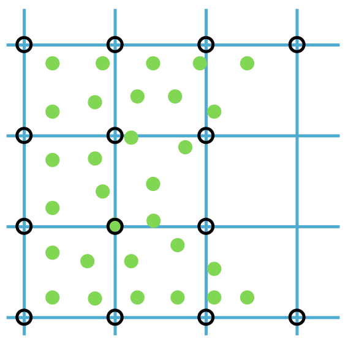
Figure 1.1.2. Particle and grid
In the field of modern solid simulation, the described methods of defining connectivity are crucial. The first method, establishing connections through a mesh of edges or triangles, is foundational to Finite Element Method (FEM) simulators. The second approach, which involves using a uniform grid to compute solid density and establish connectivity, is integral to Material Point Method (MPM) simulators [Jiang et al. 2016]. This book largely concentrates on the former method, delving into the intricacies of FEM. The mesh-based structure of FEM is particularly effective in handling complex domains by breaking them down into simpler elements. This makes FEM an essential tool in the study and simulation of deformable solids, and understanding its nuances is vital for those engaged in this area of study.
At first glance, the use of two representations of solid geometry in the MPM might appear redundant. Yet, this dual approach gives MPM a significant edge, especially in simulating dynamic events like solid fractures. In such cases, FEM would necessitate meticulous modification of the edges and elements that define the original connectivity to accurately depict the damage. In contrast, MPM efficiently handles these scenarios. The uniform grid naturally accommodates the separation of body parts in a fracture, as the lack of material at fracture nodes leads to an automatic disconnection of adjacent grid nodes. This attribute allows MPM to excel in managing changes in solid topology.
However, when it comes to simulation accuracy control, the Finite Element Method (FEM) excels. FEM operates directly on the mesh, obviating the need for constant information transfer, thus ensuring greater precision. This level of accuracy makes FEM an invaluable resource in the precise simulation of deformable solids, which is the primary emphasis of this book.
The technique of consolidating coordinates of each sampled point into an extended vector, denoted as \( x\in\mathbb{R}^{dn} \) (refer to the figure below), provides an effective means to describe a specific geometric configuration, given a constant connectivity. In this representation, \(d\) indicates the dimension of space (1, 2, or 3), and \(n\) represents the total number of points. Similarly, attributes like velocity, acceleration, and forces at each sample point can be amalgamated into corresponding extended vectors, symbolized as \(v\), \(a\), and \(f\) respectively. This organized approach to data presentation not only aids in comprehensively understanding the various parameters and their interrelations but also streamlines the mathematical formulation of the simulation process.
Having defined a method for representing a solid geometry at a single instance in time, we now face the challenge of predicting the solid's motion and deformation over time. This prediction is a key component for accurate simulation.
Newton's second law, expressed as \(\mathbf{f} = m \mathbf{a}\), indicates that forces \(\mathbf{f}\) are the primary reasons for changes in velocity, as indicated by acceleration \(\mathbf{a}\). It's important to understand that when a solid's displacement fields extend beyond simple translational or rotational movements, or a linear combination thereof, it indicates deformation. By applying Newton's second law to each sample point, we can effectively predict the movement and deformation of solids. This concept is concisely represented in vector form:
dtdxMdtdv=v,=f.(1.2.1)
In this representation, \(M\in\mathbb{R}^{dn\times dn}\) is the mass matrix, and \(x\), \(v\), and \(f\) are the column vectors stacking position, velocity, and force, respectively. This approach lays the groundwork for our simulations of deformable solids, integrating principles of motion in both discrete space and continuous time.
Remark 1.2.1 (Stacked Variables). Though the mass matrix \(M\) isn't necessarily a diagonal matrix in theory, it's often simplified to one in practical applications. This results in a lumped mass matrix, representing a system of discrete point masses and offering an efficient way to handle complex systems.
Consider a two-point system in two dimensions to illustrate this. The lumped mass matrix for such a system is represented as:
\[
M = \begin{pmatrix}
m_1 & & & \\
& m_1 & & \\
& & m_2 & \\
& & & m_2
\end{pmatrix},
\]
Here, we assume vectors like \({v}\) (as well as \({x}\) and \({f}\)) are stacked in a specific order:
\[
v = (v_{11}, v_{12}, v_{21}, v_{22})^T,
\]
where \(v_{i\alpha}\) denotes the \(\alpha\)th component of the velocity \(\mathbf{v}_i\) for the \(i\)th point. Such an organized structure simplifies calculations significantly and enhances the understanding of the system's dynamics.
Newton's second law lays the foundation for a series of Ordinary Differential Equations (ODEs) expressed in their continuous forms. This is analogous to how we previously used sampled points in space to discretely represent continuous geometries. Now, we take a similar approach but in the realm of time. By sampling points in time, we can effectively represent time derivatives, such as \(\frac{\mathbf{d} x}{\mathbf{d} t}\) and \(\frac{\mathbf{d} v}{\mathbf{d} t}\).
Definition 1.3.1 (Time Integration).
When discretizing time into fixed small intervals, we denote the time at the \(n\)-th step as \(t^n\), commonly referred to as a timestep. The length of this interval, or timestep size, is given by \(\Delta t = t^{n+1} - t^n\). The timestep count, \(n\), is typically a whole number starting from zero, making \(t^0=0 s\) the starting point of a simulation.
The concept of timesteps leads to the introduction of symbols \(x^n\), \(v^n\), and \(f^n\) to represent the positions, velocities, and forces of nodes at the \(n\)-th timestep, respectively. The term timestepping, or time integration, refers to the process of calculating \(x^{n+1}, v^{n+1}\) from \(x^n, v^n\) at each incremental timestep \(n=0,1,2,\dots\). For a visual demonstration, consider an Armadillo slingshot animation. Each frame in this animation is computed progressively from left to right, as illustrated in the figure below. In this context, timestepping mirrors a cinematic progression, revealing the evolving dynamics of a system in a step-by-step manner.
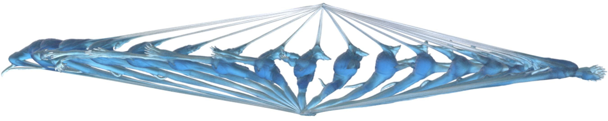
Figure 1.3.1. Armadillo slingshot frame by frame
In the context of this book and the simulation scenarios we examine, a crucial assumption must be emphasized: we always possess exact knowledge of the initial values \(x^0\) and \(v^0\) at the start of our simulation. Furthermore, for each timestep, we either have a method to calculate \(f^n\) based on a physical model, or we have its precise value readily available, as with a constant force such as gravity. This assumption is fundamental to our approach, ensuring that simulations are grounded in known initial conditions and forces, thereby allowing for more accurate and reliable outcomes.
Explicit time integration schemes provide a direct method to calculate \(x^{n+1},v^{n+1}\) by substituting known values into simple formulas, which is why these are called explicit. This section focuses on two basic explicit schemes: Forward Euler and Symplectic Euler methods.
To convert our continuous-time system to a discrete form, we employ the forward difference approximation. In this approximation, the derivative \((\frac{\mathbf{d} x}{\mathbf{d} t})^n\) is estimated as \(\frac{x^{n+1} - x^n}{\Delta t}\), and likewise, \((\frac{\mathbf{d} v}{\mathbf{d} t})^n\) as \(\frac{v^{n+1} - v^n}{\Delta t}\). The superscript \(n\) represents the state variables at the \(n\)th timestep. Consequently, the discrete version of our system is expressed as:
Δtxn+1−xnMΔtvn+1−vn=vn,=fn.(1.4.1)
Assuming a constant mass over time, these equations provide a clear mechanism to update our state variables. Knowing the current values \(x^n\), \(v^n\), and \(f^n\) at timestep \(n\), we can directly determine their values at the next timestep, \(n+1\).
Method 1.4.1 (Forward Euler Time Integration for Newton's Second Law). In the Forward Euler method, the state variables \(x^{n+1}\) and \(v^{n+1}\) at the next time step \(n+1\) are calculated based on the current values \(x^n\) and \(v^n\). The update rules are given by:
xn+1vn+1=xn+Δtvn,=vn+ΔtM−1fn.(1.4.2)
Here, \(\Delta t\) represents the time step size, \(M\) is the mass matrix, and \(f^n\) is the force at the current time step \(n\).
The forward Euler method is considered unconditionally unstable, implying that irrespective of the chosen small time step \(\Delta t\), the numerical solution will eventually grow significantly (explode) for equations with nonconstant \(f\), while the exact solution remains unaffected (refer to Figure 1.4.1, left).
If we put superscript \(n+1\) on \(v\) in the position derivative discretization while keeping the velocity derivative the same, we get a new update rule:
Method 1.4.2 (Symplectic Euler Time Integration for Newton's Second Law).
Given the current state variables, the mass matrix, and the time step size from \(t^n\) to \(t^{n+1}\),
xn+1vn+1=xn+Δtvn+1=vn+ΔtM−1fn,(1.4.3)
where \(n=0,1,2,\dots\).
With a minor alteration, the integration becomes conditionally stable. This implies that if \(\Delta t\) remains within a problem-specific limit, we can effectively confine the numerical error of the solution. Moreover, the Symplectic Euler method exhibits an appealing trait of system energy preservation, as demonstrated in the middle of the figure below.
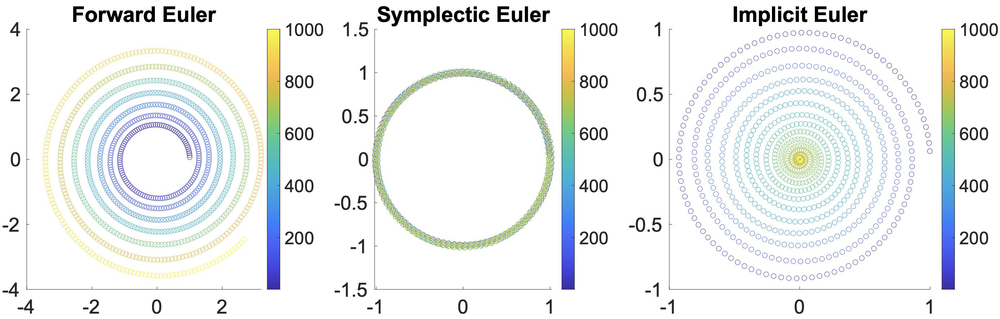
Figure 1.4.1 (Stability of Time Integrators). The provided illustration showcases a particle executing constant circular motion, simulated using the forward Euler, Symplectic Euler, and implicit Euler methods, respectively from left to right. The varying colors within the illustration represent the progression of time. Notably, each method exhibits distinct characteristics in the simulation: the forward Euler simulation eventually undergoes an unstable escalation, the Symplectic Euler closely adheres to the theoretical trajectory, and the implicit Euler, while maintaining stability, gradually brings the motion to a halt.
In contrast to explicit time integration, implicit time integration requires solving a system of equations to determine the values of \(x^{n+1}\) and \(v^{n+1}\). A notable benefit of this approach is its potential for greatly improved stability. The simplest form of implicit integration, the backward Euler method, is introduced as follows.
Method 1.5.1 (Backward Euler Time Integration Application to Newton's Second Law).
Given the current state variables, the mass matrix, and the time interval from \(t^n\) to \(t^{n+1}\), the update rules are as follows:
xn+1vn+1=xn+Δtvn+1,=vn+ΔtM−1fn+1,(1.5.1)
where \(n\) ranges from \(0,1,2,\dots\).
In many scenarios discussed in this book, the forces are derived from position vectors \(x\). Thus, we can represent \(f^{n+1} = f(x^{n+1})\). It's crucial to recognize that the update for \(x^{n+1}\) depends on knowing \(v^{n+1}\), yet the calculation of \(v^{n+1}\) is contingent on \(x^{n+1}\). This interdependence creates a cyclical dependency, necessitating the resolution of a system of equations to accurately find \(x^{n+1}\) and \(v^{n+1}\). By formulating \(v^{n+1} = (x^{n+1} - x^n) / \Delta t\), Equation (1.5.1) can be rephrased as:
M(xn+1−(xn+Δtvn))−Δt2f(xn+1)=0.(1.5.2)
Given that forces \(f\) often exhibit nonlinearity with respect to positions \(x\), Equation (1.5.2) generally becomes nonlinear, requiring the use of nonlinear root finding techniques like Newton's method for solution.
Method 1.5.2 (Newton's Method Applied to Backward Euler Time Integration).
As described in the algorithm below, Newton's method is an iterative technique starting from an initial estimate \(x^i\) of the solution. At the current iteration \(x^i\), it linearly approximates \(f(x^{n+1}) \approx f(x^i) + (x^{n+1}-x^i) \nabla f(x^i)\), then resolves a linear system and updates the iteration. This process is repeated until a satisfactory degree of convergence is reached.
Algorithm 1.5.1 (Newton's Method for Backward Euler Time Integration).
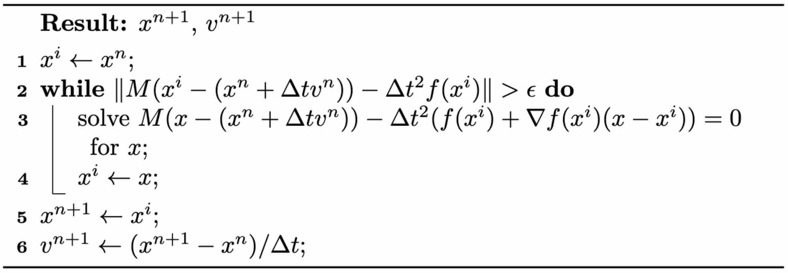
While the backward Euler method ensures unconditional stability even for large values of \(\Delta t\), it's crucial to recognize that increasing \(\Delta t\) may lead to poorer system conditioning. This complication can make solving the linear system more challenging. Additionally, it's important to remember that force linearization is an approximation. If the initial estimate for the solution is far from the actual solution, the standard iteration of Newton's method might not converge, and it could even diverge.
In later discussions, we will introduce a modified version of Newton's method. This adaptation is designed to guarantee convergence for specific types of problems, regardless of the initial estimate or the size of \(\Delta t\).
Simulating solids involves predicting changes in their position and form over time. To achieve this on computers, both geometry and time must be represented discretely.
Geometries are typically represented using sample points interconnected in specific ways:
Finite Element Methods (FEM) connect sample points through unstructured meshes.
Material Point Methods (MPM) utilize uniform Cartesian grids to link sample points.
FEM excels in delivering high-precision results, while MPM is advantageous for handling topological changes. This book primarily focuses on FEM.
Time is discretized into distinct moments, with finite difference methods applied to calculate temporal derivatives of physical quantities, in line with Newton's second law.
The Forward Euler method is generally avoided due to its unconditional instability. Conversely, the Symplectic Euler method is explicit and conditionally stable, often preferred for well-conditioned problems. For stiff problems, the Backward Euler method, unconditionally stable but requiring the resolution of nonlinear equation systems, is commonly used despite its computational intensity and potential for numerical instability.
In the next lecture, we will explore the optimization perspective of implicit time integration, offering robustness in solving these problems.
With the backward Euler method, each timestep necessitates solving a nonlinear system of equations, as outlined in Equation (1.5.2). Effectively, this equates to addressing an optimization problem stated as:
xn+1whereE(x)=argxminE(x)=21∥x−x~n∥M2+Δt2P(x).(2.1.1)
Here, \(\tilde{x}^n = x^n + \Delta t v^n\), \(\frac{1}{2} \|x - \tilde{x}^n\|^2_M = \frac{1}{2} (x - \tilde{x}^n)^T M (x - \tilde{x}^n)\) represents the inertia term, \(P(x)\) stands for the potential energy for forces \(f(x)\) with \(\frac{\partial P}{\partial x}(x) = -f(x)\), and \(E(x)\) is known as the Incremental Potential. At the local minimum of \(E(x)\), \(\frac{\partial E}{\partial x}(x^{n+1}) = 0\), corresponding to Equation (1.5.2).
Viewing time integration as an optimization problem enables us to utilize well-established optimization methods to robustly acquire the solutions. It also allows for a consistent framework for modeling more complex physical phenomena.
Definition 2.1.1 (Conservative Forces).
Forces \(f(x)\) for which a potential energy \(P(x)\) exists such that \(\frac{\partial P(x)}{\partial x} = -f(x)\), are termed conservative forces. Both common elasticity forces and body forces such as gravity are examples of conservative forces. They can be easily integrated into the optimization framework by adding the potential energy term into the Incremental Potential.
Remark 2.1.1 (The gravitational force).
The gravitational force acting on an object of mass \(m\) (represented by the force \(F = -mg\mathbf{z}\)) at a height \(h\) above the Earth's surface, where \(g\) is the acceleration due to gravity and \(\mathbf{z}\) is the upward-pointing unit vector, corresponds to the gravitational potential energy \(U = mgh\). Here, \(U\) is the work done against gravity to move the object from a reference point (at \(h = 0\)) to height \(h\). The force is the negative gradient of the energy with respect to the position (written mathematically as \(F = -\nabla U\)), which confirms the principle of conservation of energy. Taking the derivative of \(U\) with respect to \(h\), we obtain \(\nabla U = mg\mathbf{z}\), and thus \(F = -\nabla U = -mg\mathbf{z}\), which matches our starting expression for the force.
Remark 2.1.2 (Elasticity).
Elasticity is the capacity of a solid object to maintain its resting shape in response to external forces. Under the influence of elasticity, the sample points on the same solid will be bound together during the simulation. A more rigid solid will have a stiffer elasticity energy, providing a larger elasticity force for the same degree of deformation, thereby aiding in the restoration of the resting shape. The Armadillo slingshot example (Figure 1.3.1) demonstrates typical elasticity effects. Elasticity is a common property across all solids, regardless of their geometric form, and whether they are intuitively rigid or non-rigid, e.g., metal, wood, soft tissue, rubber, cloth, hair, sand, etc.
Potential energies aren't the only means of modeling physical phenomena; constraints are equally vital. Let's start by considering the simplest form, linear equality constraints. The constrained optimization problem is defined as follows:
xminE(x)s.t.Ax=b,(2.2.1)
Here, \(A\in \mathbb{R}^{m\times dn}\) and \(b\in \mathbb{R}^{m}\) represent \(m\) linear equality constraints.
During simulations, it's often necessary to control the position of certain points on a solid at each timestep. This can involve fixing a set of nodes to model immovable objects like the ground or obstacles, or guiding the motion of solids by moving specific nodes along predetermined paths. For example, in the slingshot scenario (Figure 1.3.1), the Armadillo's feet and ears are stationary. This type of control is known as Dirichlet boundary conditions (BC). These conditions can be expressed as linear equality constraints within the optimization time integrator framework.
To put it into perspective, the matrix \(A\) in Equation (2.2.1) would typically be an \(m\times dn\) matrix (with \(m\leq dn\) and \(m \mod d = 0\)), which selects the coordinates of the BC points. Correspondingly, \(b\) would be an \(m \times 1\) vector defining the prescribed locations. By solving the optimization problem, the chosen points are fixed at these specified locations, which can vary from one timestep to the next.
At the local minimum of the problem in Equation (2.2.1), the KKT condition∇E(x)−ATλ=0Ax=b(2.2.2)
is met, where \(\lambda \in \mathbb{R}^{m}\) represents the Lagrange multiplier vector, comprising all the Lagrange multipliers.
Remark 2.2.1 (Solving KKT Systems).
Solving nonlinear optimization problems with equality constraints is feasible by directly addressing the nonlinear KKT (Karush-Kuhn-Tucker) system, as seen in Equation (2.2.2). Methods like Newton's method are commonly employed for this purpose. However, this approach can be computationally intensive. For boundary conditions, the unique structure of the matrix \(A\) can be leveraged, allowing us to resolve the constrained problem in an unconstrained manner. Techniques for this approach will be demonstrated in later lectures.
To accurately simulate solids, it's essential to ensure that they don't interpenetrate, as shown in the figure below (left side). One effective approach is to enforce the CFL (Courant-Friedrichs-Lewy condition) upper limit on timestep sizes, particularly in methods like MPM. In Finite Element Methods (FEM), this requires precise modeling of contact forces. However, accurately modeling contact poses a challenge. Contact is inherently a non-smooth process, happening abruptly as solids make contact. There isn't a potential energy formulation that can accurately depict this phenomenon.
Figure 2.3.1 (Simulation Examples of Contact and Friction). On the left, an intriguing simulation shows four characters plunging into a funnel and then being extruded by a moving plane. The flawless execution, marked by the absence of any interpenetration during this complex interaction, highlights the precision of the models employed. On the right, we see a simulation of the classic table cloth trick, executed at varying speeds. The realism in this simulation, especially the accurate depiction of friction, becomes apparent as the cloth is pulled away without disturbing the table setting — mirroring what one would expect in real life. These simulations showcase the incredible capabilities and precision of contemporary computational models in simulating contact, vividly and engagingly bringing abstract physical concepts to life.
In practical applications, determining if two objects have collided typically involves visually and mentally assessing their proximity. When the distance between them isn't zero, it indicates that space remains and no collision has occurred. This concept is crucial in modeling interactions between objects in a computational context.
To avoid collision or penetration, we can ensure that the distance between the surfaces of the moving objects never reduces to zero. This approach is particularly useful in time integration problems within computational simulations. We model this scenario using inequality constraints, which, when combined with boundary conditions, formulate our time integration problem as follows:
xminE(x)s.t.Ax=band∀k,ck(x)≥ϵ.(2.3.1)
Here, \(c_k\) measures the distance between specific pairs of regions on the surface of the solids, and \(\epsilon \rightarrow 0\) is a tiny positive value to ensure \(c_k(x)\) remains strictly positive.
At the local minimum of the problem in Equation (2.3.1), we adhere to the Karush-Kuhn-Tucker (KKT) condition, as follows:
∇E(x)−ATλ−k∑γk∇ck(x)=0,Ax=b,∀k,ck(x)−ϵ≥0,γk≥0,γk(ck(x)−ϵ)=0.(2.3.2)
In this condition, \(\gamma_k\) is the Lagrange multiplier for the constraint \(c_k(x) \geq \epsilon\). To break it down, \(\nabla c_k(x)\) points in the direction of the contact force for contacting pair \(k\). The combination of this direction with the magnitude represented by \(\gamma_k\) gives us the actual contact force at that point.
Remark 2.3.1 (The Complementarity Slackness Condition).
The complementarity slackness condition \(\gamma_k (c_k(x) - \epsilon) = 0\) plays a critical role in ensuring that contact forces are present (\(\gamma_k \neq 0\)) exclusively when the solids are in touch (\(c_k(x) = \epsilon\)). On the contrary, when the solids are not touching (\(c_k(x) > \epsilon\)), there should be no contact forces (\(\gamma_k = 0\)).
Definition 2.3.1 (Active Set).
In optimization problems with inequality constraints defined as
\[
\forall k, \ c_k(x) \geq 0,
\]
the active set is defined as
\[
\{ l \ | \ c_l(x^*) = 0 \}.
\]
Here, \(x^*\) is a local optimal solution of the problem.
Remark 2.3.2 (Combinatorial Difficulty).
The complementarity slackness condition reveals that only constraints within the active set will exhibit non-zero Lagrange multiplier \(\gamma_k\) at the solution. This suggests that, unlike equality constraints, inequality constraints not only require solving for the value of the Lagrange multipliers but also demand the identification of which \(\gamma_k\) should be set to \(0\). This presents a combinatorial difficulty.
A wide array of techniques are available for addressing optimization problems with inequality constraints. Each method introduces a distinct approach, effectively targeting various facets of the problem.
Primal-Dual Methods: This class of methods tackles both the primal problem (the original optimization problem) and its dual problem simultaneously. The dual problem often provides valuable insights into the primal problem's solution, making this approach attractive. These methods are iterative, refining an initial solution by leveraging the relationship between the primal and dual problems. However, designing and implementing primal-dual algorithms can be intricate, requiring a careful balance between the two problem types. While effective, these methods may not be efficient or straightforward for complex, high-dimensional problems.
Projected Steepest Descent Methods: A modification of the classic steepest descent method, these methods address constraints. At each iteration, the algorithm moves in the steepest descent direction, then projects back onto the feasible set if it deviates due to constraints. This method's simplicity and straightforwardness make it popular, but it may struggle with ill-conditioned problems where convergence is slow, or with constraints that are challenging to project onto.
Interior-Point Methods: Also known as barrier methods, these techniques introduce a barrier function that penalizes infeasible solutions, thereby steering the solution towards the feasible region's interior. This approach effectively transforms a constrained problem into an unconstrained one, solvable using conventional techniques. However, the barrier function's choice significantly impacts the method's performance. While efficient for certain problem types, these methods may falter with problems where the feasible region is difficult to define or lacks a simple interior.
While each of these methodologies has its own strengths and weaknesses, our primary focus will be on a robust and accurate contact modeling method, known as Incremental Potential Contact (IPC). IPC distinguishes itself by approximating the contact process with a smooth potential energy. This transformation effectively turns the problem into an unconstrained one, facilitating the application of various efficient and robust optimization techniques. A key feature of IPC is its capability to control the approximation error relative to the non-smooth formulation within a predetermined bound. This characteristic adds a layer of robustness and reliability to the method, making it an especially promising approach for the problem at hand.
Friction is a crucial element in physical interactions involving movement, often significantly influencing simulation outcomes. Thus, its precise modeling is vital for realistic and reliable simulations. See Figure 2.3.1 on the right for a demonstration of a scenario that requires a precise representation of friction.
One of the most widely adopted models for friction is the Coulomb Friction model. This model hinges on the Maximal Dissipation Principal (MDP), effectively capturing the nonsmooth transition between static and dynamic frictions. Static friction is the force preventing an object from initiating movement, whereas dynamic friction, or kinetic friction, opposes the motion of a moving object. The Coulomb Friction model accurately depicts the critical transition between these two friction types.
In the standard Material Point Method (MPM), friction is inherently modeled by the grid. However, this method has its drawbacks, notably an uncontrollable and unrealistically large friction coefficient.
For the Finite Element Method (FEM), friction can be more realistically and controllably represented through an approximated potential energy in the Incremental Potential Contact (IPC) model. This fits well within our optimization time integration framework. By using potential energy to approximate friction, we not only maintain the robustness of the simulation but also gain control over the accuracy of the friction model.
In subsequent lectures, we will delve into the specific techniques and methodologies employed in the IPC model to represent friction forces and their role in enhancing the accuracy and realism of simulations.
The objective of our discussions so far has been to devise a reliable solution for the unconditional stable implicit time integration problem. We aimed to address the issue of non-convergent solutions arising from truncation errors. We tackled this by reformulating the time integration problem as a minimization problem. This formulation not only allowed us to apply well-established optimization techniques, but it also facilitated a consistent modeling framework for different physical phenomena.
Here is a quick summary of the techniques used for modeling various phenomena within this framework:
For conservative forces like gravity and elasticity, we used potential energies. These were integrated into the objective function to create an accurate representation of the forces involved.
Boundary conditions, which specify the constraints on the system, were modeled using simple linear equality constraints. This helped us restrict the system to feasible states while performing the simulation.
To prevent interpenetration between solid objects during the simulation, we used inequality constraints to model contact and friction. These constraints ensured that objects maintained their physical integrity and behaved as expected when they came in contact with each other.
An important aspect to note here is that, we can utilize the unique structure of the boundary conditions to enforce the equality constraints in an unconstrained way. This will lead to a significant reduction in computational complexity.
Moreover, we introduced the concept of the Incremental Potential Contact (IPC) method. The IPC method models contact and friction as smooth potential energies with a controllable level of accuracy. This ensures a robust and accurate simulation of solid objects, free from interpenetration.
Moving forward, in the next lecture, we will delve into the projected Newton method for solving unconstrained optimization problems. This method offers the advantage of global convergence, meaning that the method is guaranteed to converge regardless of the initial configuration, provided it is feasible. This feature is highly desirable for complex simulations and it helps make the method more robust and reliable.
In addressing the minimization problem presented by implicit Euler time integration (referenced in Equation (2.1.1)), employing Newton's method (outlined in Algorithm 1.5.1) is a viable strategy for the resultant system of nonlinear equations. This involves setting the gradient of the Incremental Potential Energy to zero:
∇E(x)=0.
However, the application of this method to cases such as nonlinear elasticity, particularly in the Neo-Hookean model, does not always guarantee convergence. The presence of truncation errors, especially in scenarios involving large time steps or significant deformations, can adversely affect the convergence process.
Example 3.1.1 (Illustration of Newton's Convergence Issue).
To elucidate the issue of Newton's method non-convergence, let's consider a one-dimensional minimization problem characterized by the objective function:
f(x)=ln(e−x+ex).
We can evaluate the function at x=2 and approximate it using a quadratic energy g(x), which is defined as:
g(x)=f(2)+f′(2)(x−2)+21f′′(2)(x−2)2.
The joint plot of f(x) and g(x) (Figure 3.1.1) distinctly exhibits that the next iteration would exceed the actual target, landing at a point (x=−11.645) further from the actual solution at x=0. The subsequent iterations amplify this deviation, leading to a trajectory that diverges. It's worth noting that this demonstration involves a convex function f(x)=ln(e−x+ex). The problem can become even more complex when Newton's method is applied to non-convex elasticity energies.
Figure 3.1.1. An iteration of Newton's method for minxE(x)=ln(e−x+ex) at x=2.
Remark 3.1.1 (Convexity of Energies). Convex functions are characterized by symmetric and positive-definite (SPD) second-order derivatives throughout their domain. Conversely, the energy in most models of nonlinear elasticity used in computer graphics is rotation invariant. This implies that the energy value remains unchanged regardless of the rotational orientation of objects or elements. Such rotation invariance leads to non-convexity, making the optimization process more complex.
Definition 3.1.1 (Symmetric Positive-Definiteness).
A square matrix A∈Rn×n is symmetric positive-definite if
A=AT, and
vTAv>0 for all v∈Rn,v=0.
Unlike directly solving nonlinear equations, a minimization problem provides an energy measure that enables the assurance of global convergence using a technique called line search.
In iterative minimization methods, line search is a technique used to select a fraction of the step in each iteration, ensuring the objective energy decreases at the new point.
Specifically, for Newton's method, line 4 in Algorithm 1.5.1 is modified from \(x^i \leftarrow x\) to \(x^i \leftarrow x^i + \alpha (x - x^i)\), where \(\alpha \in (0,1]\) is the step size, essential for the reduction of energy. This leads to two critical questions: Does such an \(\alpha\) always exist? And how is \(\alpha\) calculated?
Remark 3.2.1 (Existence of \(\alpha\)). For a smooth objective energy \(E(x)\) at \(x^i\) where \(\nabla E(x^i) \neq 0\), if a search direction \(p=x-x^i\) is descent, namely \(p^T \nabla E(x^i) < 0\), then there exists \(\alpha > 0\) such that \(E(x^i + \alpha p) < E(x^i)\).
Method 3.2.1 (Backtracking Line Search). Given a descent direction, we can find a reasonably large \(\alpha\) by simply halving it starting from \(1\) until the energy at the new location is smaller than the current (see Algorithm 3.2.1).
Algorithm 3.2.1 (The Backtracking Line Search Algorithm).
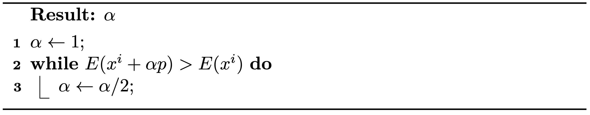
Remark 3.2.2 (Other Line Search Methods).
There are other line search methods that attempt to apply polynomial interpolations to find an \(\alpha\) such that the energy at the new location is closer to a local minimum on the line segment \(x^i + s p\), (\(s\in(0,1]\)). However, these methods generally incur higher computational costs and may not necessarily enhance the overall wall-clock timing of the optimization.
Now, with line search, if Newton's method consistently generates a descent search direction, then the method is guaranteed to converge for any initial configuration on any smooth energy with a lower bound. We know that in iteration \(i\), \(p = -(\nabla^2 E(x^i))^{-1} \nabla E(x^i)\), so \(p^T \nabla E(x^i)\) equals \(-\nabla E(x^i)^T (\nabla^2 E(x^i))^{-T} \nabla E(x^i)\). For convex energies, \(\nabla^2 E(x^i)\) is always Symmetric Positive Definite (SPD), and so is \((\nabla^2 E(x^i))^{-T}\), making \(p\) always a descent direction. However, for non-convex energies, this assurance does not always hold. One approach to address this issue is to approximate the energies locally using convex energy proxies.
The search direction of the standard Newton's method is calculated by minimizing the local quadratic approximation of the objective energy:
p=argΔxmin(E(xi)+ΔxT∇E(xi)+21ΔxTPΔx)(3.3.1)
where \(P = \nabla^2 E(x^i)\). In general gradient-based optimization methods, \(p\) can be calculated by Equation (3.3.1) with any proxy matrix \(P\). Setting \(P = I\) results in \(p = -\nabla E(x^i)\), as used in the standard gradient descent method. This approach converges more slowly than Newton's method, as the energy approximation is of a lower order. The closer the proxy matrix \(P\) is to the Hessian matrix \(\nabla^2 E(x^i)\), the faster the convergence. Hence, using an SPD approximation of the Hessian matrix as the proxy ensures that the search direction is always descent, while maintaining a convergence rate close to quadratic. This is akin to approximating non-convex energies locally using a convex energy proxy.
A straightforward method to obtain such an SPD approximation involves first projecting \(\nabla^2 E(x^i)\) onto its closest semi-definite matrix by solving
Pmin∥P−∇2E(xi)∥Fs.t.vTPv≥0∀v=0,
and then introducing perturbations to ensure that \(P\) is invertible. The solution in this case is \(P = Q \hat{\Lambda} Q^{-1}\), where \(P = Q \Lambda Q^{-1}\) is the eigendecomposition, and Λ^ij=Λij if \(\Lambda_{ij} > 0\), otherwise \(\hat{\Lambda}_{ij} = 0\). Intuitively, \(P\) is obtained by zeroing out all the negative eigenvalues of \(\nabla^2 E(x^i)\).
Definition 3.3.1 (Eigendecomposition). The eigendecomposition of a square matrix \(A \in \mathbb{R}^{n \times n}\) is
A=QΛQ−1
where \(Q = [q_1, q_2, ..., q_n]\) is composed of the eigenvectors \(q_i\) of \(A\), ∥qi∥=1; \(\Lambda = [\lambda_1, \lambda_2, ..., \lambda_n]\), with \(\lambda_1 \geq \lambda_2 \geq ..., \lambda_n\) being the eigenvalues of \(A\); and \(Aq_i = \lambda_i q_i\).
However, in simulation, \(\nabla^2 E(x^i)\) is usually a large sparse matrix, and performing eigendecomposition on it would be prohibitively expensive. Fortunately, we will discover later in this book that the Incremental Potential in solids simulation can be expressed as a separable sum of energies defined on local stencils, such as a triangle in the 2D Finite Element Method (FEM) mesh:
E(x)=j∑Ej(xj1,xj2,...),
where \(\mathbf{x}_{jk}\) are the nodes associated with the energy \(E_j\). Consequently, we can conveniently obtain a reasonably good SPD approximation by zeroing out the negative eigenvalues of each \(\nabla^2 E_i\) defined on a small number of nodes and aggregating them.
Example 3.3.1 (Local Projection Method). To simulate elasticity in 2D on a triangle mesh with 10,201 nodes and 20,000 triangles, the Hessian matrix \(\nabla^2 E(x)\) is \(20,402 \times 20,402\). For the local projection method described above, it requires 20,000 eigendecompositions on \(6 \times 6\) matrices. Considering the computational complexity of eigendecomposition on an \(n \times n\) matrix is worse than \(O(n^2)\), this rough estimation already suggests a more than \(500\times\) speedup for this medium-sized problem when employing the local projection methods.
In addition, since the mass matrix in \(\nabla^2 E(x^i)\) is Symmetric Positive Definite (SPD) and the sum of SPD matrices remains SPD, there is no need for perturbations when projecting other matrices. We now summarize the globally convergent projected Newton method for backward Euler time integration in Algorithm 3.3.1.
Algorithm 3.3.1 (Projected Newton Method for Backward Euler Time Integration).
Remark 3.3.1 (Stopping Criteria). From Equation (3.3.1), we understand that ∥p∥ can be interpreted as a quadratic approximation of the distance from the current estimate \(x^i\) to the optimal solution. Hence, we utilize ∥p∥∞/Δt as a more intuitive measure for the stopping criteria. This approach transforms it into a velocity unit and takes the maximum magnitude across every node.
After examining the convergence issues of traditional Newton's method, even on smooth convex energies, we introduced a backtracking line search scheme for minimizing the Incremental Potential of Implicit Euler time integration, ensuring global convergence.
To guarantee the discovery of a positive step size, the Incremental Potential Hessian is projected onto a nearby Symmetric Positive Definite (SPD) matrix. This SPD projection is efficiently achieved by eliminating the negative eigenvalues of the Hessian matrices for each non-convex energy stencil, involving only a few nodes.
A convergence criterion that provides a more intuitive and consistent method for setting tolerance is also introduced, utilizing the Newton search direction.
In the next lecture, we will conclude with a clear demonstration of all the covered topics through a simple 2D case study.
Up to now, we have completed a high-level introduction to the optimization-based solids simulation framework. In this lecture, we elaborate on how to implement a simple 2D elastodynamics simulator with Python3.
Sections in this book with Python implementations will be marked with a * right after the title.
All the Python implementations can be found at https://github.com/phys-sim-book/solid-sim-tutorial.
The excutable Python project for this section is in the /1_mass_spring folder of this repository.
In representing solid geometries, we employ a mesh structure. We can further simplify the representation by connecting nodes on the mesh with edges. To facilitate this process, especially for geometries like squares, we can script a mesh generator. This generator allows for specifying both the side length of the square and the desired resolution of the mesh.
import numpy as np
import os
def generate(side_length, n_seg):
# sample nodes uniformly on a square
x = np.array([[0.0, 0.0]] * ((n_seg + 1) ** 2))
step = side_length / n_seg
for i in range(0, n_seg + 1):
for j in range(0, n_seg + 1):
x[i * (n_seg + 1) + j] = [-side_length / 2 + i * step, -side_length / 2 + j * step]
# connect the nodes with edges
e = []
# horizontal edges
for i in range(0, n_seg):
for j in range(0, n_seg + 1):
e.append([i * (n_seg + 1) + j, (i + 1) * (n_seg + 1) + j])
# vertical edges
for i in range(0, n_seg + 1):
for j in range(0, n_seg):
e.append([i * (n_seg + 1) + j, i * (n_seg + 1) + j + 1])
# diagonals
for i in range(0, n_seg):
for j in range(0, n_seg):
e.append([i * (n_seg + 1) + j, (i + 1) * (n_seg + 1) + j + 1])
e.append([(i + 1) * (n_seg + 1) + j, i * (n_seg + 1) + j + 1])
return [x, e]
In the code, n_seg represents the number of edges along each side of the square. The nodes are uniformly distributed across the square and interconnected through horizontal, vertical, and diagonal edges. For instance, calling generate(1.0, 4) constructs a mesh as depicted in Figure 4.1.1. This implementation utilizes the array data structures from the Numpy library, which provides convenient methods for handling the vector algebra required in subsequent steps.
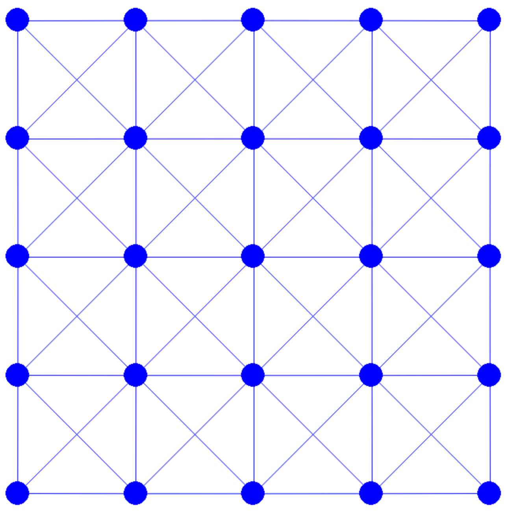
Figure 4.1.1. A 4×4 square mesh generated by calling generate(1.0, 4) defined in Square Mesh Generation script above.
For temporal discretization, our approach is the implicit Euler method. The Incremental Potential, which needs to be minimized in time step \(n\), is represented as follows:
E(x)=21∥x−(xn+hvn)∥M2+h2P(x).(4.1.1)
Next, our focus shifts to implementing the calculations for the energy value, gradient, and Hessian for both the inertia term and the potential energy \(P(x)\).
For the inertia term, with \(\tilde{x}^n = x^n + h v^n\), we have
\[
E_I(x) = \frac{1}{2}\|x - \tilde{x}^n \|_M^2, \quad \nabla E_I(x) = M(x - \tilde{x}^n), \quad \text{and} \quad \nabla^2 E_I(x) = M,
\]
which is straightforward to implement:
Implementation 4.2.1 (InertiaEnergy.py).
import numpy as np
def val(x, x_tilde, m):
sum = 0.0
for i in range(0, len(x)):
diff = x[i] - x_tilde[i]
sum += 0.5 * m[i] * diff.dot(diff)
return sum
def grad(x, x_tilde, m):
g = np.array([[0.0, 0.0]] * len(x))
for i in range(0, len(x)):
g[i] = m[i] * (x[i] - x_tilde[i])
return g
def hess(x, x_tilde, m):
IJV = [[0] * (len(x) * 2), [0] * (len(x) * 2), np.array([0.0] * (len(x) * 2))]
for i in range(0, len(x)):
for d in range(0, 2):
IJV[0][i * 2 + d] = i * 2 + d
IJV[1][i * 2 + d] = i * 2 + d
IJV[2][i * 2 + d] = m[i]
return IJV
The functions val(), grad(), and hess() are designed to compute different components of the inertia term. Specifically:
val(): Computes the value of the inertia term.
grad(): Calculates the gradient of the inertia term.
hess(): Determines the Hessian of the inertia term.
Regarding the Hessian matrix, a memory-efficient approach is employed. Rather than allocating a large two-dimensional array to store all entries of the Hessian matrix, only the nonzero entries are kept. This is achieved using the IJV structure, which consists of three lists:
Row Index: Identifies the row position of each nonzero entry.
Column Index: Indicates the column position of each nonzero entry.
Value: The actual nonzero value at the specified row and column.
This method significantly reduces memory usage and computational costs associated with downstream processing.
In this case study, we focus exclusively on incorporating the mass-spring elasticity potential into our system. The concept of mass-spring elasticity is akin to treating each edge of the mesh as if it were a spring. This approach is inspired by Hooke's Law, allowing us to formulate the potential energy on edge e as follows:
Pe(x)=l221k(l2∥x1−x2∥2−1)2,(4.3.1)
Here, x1 and x2 represent the current positions of the two endpoints of the edge. The variable l denotes the original length of the edge, and k is a parameter controlling the spring's stiffness. Notably, when the distance between the two endpoints ∥x1−x2∥ equals the original length l, the potential energy Pe(x) attains its global minimum value of 0, indicating no force is exerted.
An important aspect of this formulation is the inclusion of l2 at the beginning. This is analogous to integrating the spring energy across the solid and choosing edges as quadrature points. This integration helps maintain a consistent relationship between the stiffness behavior and the parameter k, regardless of mesh resolution variations.
Another deviation from standard spring energy formulations is our avoidance of the square root operation. We directly use ∥x1−x2∥2, making our model polynomial in nature. This simplification yields more streamlined expressions for the gradient and Hessian:
The total potential energy of the system, denoted as P(x), can be derived by summing the potential energy across all edges. This is calculated using Equation (4.3.1). Thus, the total potential energy is expressed as:
P(x)=e∑Pe(x)
where the summation is taken over all edges in the mesh.
Implementation 4.3.1 (MassSpringEnergy.py).
import numpy as np
import utils
def val(x, e, l2, k):
sum = 0.0
for i in range(0, len(e)):
diff = x[e[i][0]] - x[e[i][1]]
sum += l2[i] * 0.5 * k[i] * (diff.dot(diff) / l2[i] - 1) ** 2
return sum
def grad(x, e, l2, k):
g = np.array([[0.0, 0.0]] * len(x))
for i in range(0, len(e)):
diff = x[e[i][0]] - x[e[i][1]]
g_diff = 2 * k[i] * (diff.dot(diff) / l2[i] - 1) * diff
g[e[i][0]] += g_diff
g[e[i][1]] -= g_diff
return g
def hess(x, e, l2, k):
IJV = [[0] * (len(e) * 16), [0] * (len(e) * 16), np.array([0.0] * (len(e) * 16))]
for i in range(0, len(e)):
diff = x[e[i][0]] - x[e[i][1]]
H_diff = 2 * k[i] / l2[i] * (2 * np.outer(diff, diff) + (diff.dot(diff) - l2[i]) * np.identity(2))
H_local = utils.make_PSD(np.block([[H_diff, -H_diff], [-H_diff, H_diff]]))
# add to global matrix
for nI in range(0, 2):
for nJ in range(0, 2):
indStart = i * 16 + (nI * 2 + nJ) * 4
for r in range(0, 2):
for c in range(0, 2):
IJV[0][indStart + r * 2 + c] = e[i][nI] * 2 + r
IJV[1][indStart + r * 2 + c] = e[i][nJ] * 2 + c
IJV[2][indStart + r * 2 + c] = H_local[nI * 2 + r, nJ * 2 + c]
return IJV
In dealing with the Hessian matrix of the mass-spring energy, a key consideration is its non-symmetric positive definite (SPD) nature. To address this, a specific modification is employed: we neutralize the negative eigenvalues of the local Hessian corresponding to each edge. This is done prior to incorporating these local Hessians into the global matrix. The process involves setting negative eigenvalues to zero, thus ensuring that the resulting global Hessian matrix adheres more closely to the desired SPD properties. This modification is crucial for Newton's method.
import numpy as np
import numpy.linalg as LA
def make_PSD(hess):
[lam, V] = LA.eigh(hess) # Eigen decomposition on symmetric matrix
# set all negative Eigenvalues to 0
for i in range(0, len(lam)):
lam[i] = max(0, lam[i])
return np.matmul(np.matmul(V, np.diag(lam)), np.transpose(V))
Having established the capability to evaluate the Incremental Potential for arbitrary configurations, we now turn our attention to the implementation of the optimization time integrator. This integrator is crucial for minimizing the Incremental Potential, which in turn updates the nodal positions and velocities. This implementation follows the approach outlined in Algorithm 3.3.1:
Implementation 4.4.1 (time_integrator.py).
import copy
from cmath import inf
import numpy as np
import numpy.linalg as LA
import scipy.sparse as sparse
from scipy.sparse.linalg import spsolve
import InertiaEnergy
import MassSpringEnergy
def step_forward(x, e, v, m, l2, k, h, tol):
x_tilde = x + v * h # implicit Euler predictive position
x_n = copy.deepcopy(x)
# Newton loop
iter = 0
E_last = IP_val(x, e, x_tilde, m, l2, k, h)
p = search_dir(x, e, x_tilde, m, l2, k, h)
while LA.norm(p, inf) / h > tol:
print('Iteration', iter, ':')
print('residual =', LA.norm(p, inf) / h)
# line search
alpha = 1
while IP_val(x + alpha * p, e, x_tilde, m, l2, k, h) > E_last:
alpha /= 2
print('step size =', alpha)
x += alpha * p
E_last = IP_val(x, e, x_tilde, m, l2, k, h)
p = search_dir(x, e, x_tilde, m, l2, k, h)
iter += 1
v = (x - x_n) / h # implicit Euler velocity update
return [x, v]
def IP_val(x, e, x_tilde, m, l2, k, h):
return InertiaEnergy.val(x, x_tilde, m) + h * h * MassSpringEnergy.val(x, e, l2, k) # implicit Euler
def IP_grad(x, e, x_tilde, m, l2, k, h):
return InertiaEnergy.grad(x, x_tilde, m) + h * h * MassSpringEnergy.grad(x, e, l2, k) # implicit Euler
def IP_hess(x, e, x_tilde, m, l2, k, h):
IJV_In = InertiaEnergy.hess(x, x_tilde, m)
IJV_MS = MassSpringEnergy.hess(x, e, l2, k)
IJV_MS[2] *= h * h # implicit Euler
IJV = np.append(IJV_In, IJV_MS, axis=1)
H = sparse.coo_matrix((IJV[2], (IJV[0], IJV[1])), shape=(len(x) * 2, len(x) * 2)).tocsr()
return H
def search_dir(x, e, x_tilde, m, l2, k, h):
projected_hess = IP_hess(x, e, x_tilde, m, l2, k, h)
reshaped_grad = IP_grad(x, e, x_tilde, m, l2, k, h).reshape(len(x) * 2, 1)
return spsolve(projected_hess, -reshaped_grad).reshape(len(x), 2)
Here step_forward() is essentially a direct translation of the projected Newton method with line search (Algorithm 3.3.1), and we implemented the Incremental Potential value (IP_val()), gradient (IP_grad()), and Hessian (IP_hess()) evaluations as separate functions for clarity.
For the computation of search directions, we utilize the linear solver from the Scipy library, which is adept at handling sparse matrices. Notably, this solver accepts matrices in the Compressed Sparse Row (CSR) format. The choice of this format and solver is driven by their efficiency in processing and memory usage, which is particularly advantageous when dealing with large-scale problems with large sparse matricies often encountered in computational simulations.
Having gathered all necessary elements for our 2D mass-spring simulator, the next step is to implement the simulator. This implementation will operate in a step-by-step manner and include visualization capabilities to enhance understanding and engagement.
Implementation 4.5.1 (simulator.py).
# Mass-Spring Solids Simulation
import numpy as np # numpy for linear algebra
import pygame # pygame for visualization
pygame.init()
import square_mesh # square mesh
import time_integrator
# simulation setup
side_len = 1
rho = 1000 # density of square
k = 1e5 # spring stiffness
initial_stretch = 1.4
n_seg = 4 # num of segments per side of the square
h = 0.004 # time step size in s
# initialize simulation
[x, e] = square_mesh.generate(side_len, n_seg) # node positions and edge node indices
v = np.array([[0.0, 0.0]] * len(x)) # velocity
m = [rho * side_len * side_len / ((n_seg + 1) * (n_seg + 1))] * len(x) # calculate node mass evenly
# rest length squared
l2 = []
for i in range(0, len(e)):
diff = x[e[i][0]] - x[e[i][1]]
l2.append(diff.dot(diff))
k = [k] * len(e) # spring stiffness
# apply initial stretch horizontally
for i in range(0, len(x)):
x[i][0] *= initial_stretch
# simulation with visualization
resolution = np.array([900, 900])
offset = resolution / 2
scale = 200
def screen_projection(x):
return [offset[0] + scale * x[0], resolution[1] - (offset[1] + scale * x[1])]
time_step = 0
square_mesh.write_to_file(time_step, x, n_seg)
screen = pygame.display.set_mode(resolution)
running = True
while running:
# run until the user asks to quit
for event in pygame.event.get():
if event.type == pygame.QUIT:
running = False
print('### Time step', time_step, '###')
# fill the background and draw the square
screen.fill((255, 255, 255))
for eI in e:
pygame.draw.aaline(screen, (0, 0, 255), screen_projection(x[eI[0]]), screen_projection(x[eI[1]]))
for xI in x:
pygame.draw.circle(screen, (0, 0, 255), screen_projection(xI), 0.1 * side_len / n_seg * scale)
pygame.display.flip() # flip the display
# step forward simulation and wait for screen refresh
[x, v] = time_integrator.step_forward(x, e, v, m, l2, k, h, 1e-2)
time_step += 1
pygame.time.wait(int(h * 1000))
square_mesh.write_to_file(time_step, x, n_seg)
pygame.quit()
For 2D visualization in our simulator, we utilize the Pygame library. The simulation is initiated with a scene featuring a single square, which is initially elongated horizontally. During the simulation, the square begins to revert to its original horizontal dimensions. Subsequently, due to inertia, it will start to stretch vertically, oscillating back and forth until it eventually stabilizes at its rest shape, as illustrated in (Figure 4.5.1).
Figure 4.5.1. From left to right: initial, intermediate, and final static frame of the initially stretched square simulation.
In addition to storing node positions x and edges e, our simulation also requires allocating memory for several other key variables:
Node Velocities (v): To track the movement of each node over time.
Masses (m): Node masses are calculated by uniformly distributing the total mass of the square across each node. This is a preliminary approach; more detailed methods for calculating nodal mass in Finite Element Method (FEM) or Material Point Method (MPM) will be explored in future chapters.
Squared Rest Length of Edges (l2): Important for calculating the potential energy in the mass-spring system.
Spring Stiffnesses (k): A crucial parameter influencing the dynamics of the springs.
For visualization purposes beyond our simulator, we enable the export of the mesh data into .obj files. This is achieved by calling the write_to_file() function at the start and at each frame of the simulation. This feature facilitates the use of alternative visualization software to analyze and present the simulation results.
def write_to_file(frameNum, x, n_seg):
# Check if 'output' directory exists; if not, create it
if not os.path.exists('output'):
os.makedirs('output')
# create obj file
filename = f"output/{frameNum}.obj"
with open(filename, 'w') as f:
# write vertex coordinates
for row in x:
f.write(f"v {float(row[0]):.6f} {float(row[1]):.6f} 0.0\n")
# write vertex indices for each triangle
for i in range(0, n_seg):
for j in range(0, n_seg):
#NOTE: each cell is exported as 2 triangles for rendering
f.write(f"f {i * (n_seg+1) + j + 1} {(i+1) * (n_seg+1) + j + 1} {(i+1) * (n_seg+1) + j+1 + 1}\n")
f.write(f"f {i * (n_seg+1) + j + 1} {(i+1) * (n_seg+1) + j+1 + 1} {i * (n_seg+1) + j+1 + 1}\n")
With all components properly set up, the next phase involves initiating the simulation loop. This loop advances the time integration and visualizes the results at each time step. To execute the simulation program, the following command is used in the terminal:
python3 simulator.py
Remark 4.5.1 (Practical Considerations).
With our simulator implementation in place, it provides us with the flexibility to experiment with various configurations of the optimization time integration scheme. Such testing is invaluable for gaining deeper insights into the roles and impacts of each essential component.
Consider an example: if we opt not to project the mass-spring Hessian to a Symmetric Positive Definite (SPD) form, peculiar behaviors may emerge under certain conditions. For instance, running the simulation with a frame-rate time step size of h=0.02 and an initial_stretch of 0.5 could lead to line search failures. This, in turn, results in very small step sizes, hampering the optimization process and preventing significant progress.
While line search might seem superfluous in this simplistic 2D example, its necessity becomes apparent in more complex 3D elastodynamics simulations, especially those involving large deformations. Here, line search is crucial to ensure the convergence of the simulation.
Another point of interest is the stopping criteria applied in traditional solids simulators. Many such simulators forego a dynamic stopping criterion and instead terminate the optimization process after a predetermined number of iterations. This approach, while straightforward, can lead to numerical instabilities or 'explosions' in more challenging scenarios. This underscores the importance of carefully considering the integration scheme and its parameters to ensure stable and accurate simulations.
We have successfully demonstrated the implementation of a basic 2D mass-spring simulator encompassing several critical components:
Mesh Generation: This involves the creation of nodes and connecting elements. In practical scenarios, simulators often import meshes from pre-existing files.
Incremental Potential Energy Evaluation: Comprises the computation of the potential energy value, its gradient, and the Symmetric Positive Definite (SPD)-projected Hessian.
Optimization Time Integrator: This includes linear solves for determining search directions, line search techniques to ensure global convergence, and rules for updating nodal positions and velocities.
Simulator Structure: Encompasses scene setup, variable initialization, and the execution of the simulation loop. (Note: Visualization aspects can be decoupled from the simulator itself.)
In the forthcoming chapter, we will delve into boundary treatments, including prescribed motion and frictional contact, which are implemented through equality or inequality constraints in the optimization framework. This discussion will be enriched with practical case studies, illustrating the application of each boundary treatment in computational simulations.
Boundary treatments, including boundary conditions and frictional contacts, play a crucial role in solid simulations. They not only enhance the expressiveness of scene setup but also capture intricate dynamics within the simulation. This lecture introduces Dirichlet boundary conditions, a pivotal concept for prescribing the motion of specific nodes in solid structures. Understanding these conditions is essential for accurately modeling and manipulating the behavior of solids in various simulation scenarios.
Dirichlet boundary conditions (BC), when integrated into the optimization time integrator, are represented as linear equality constraints:
Ax=b,(5.1.1)
In this equation, the matrix \(A\) is a \(m \times dn\) matrix, where \(m \leq dn\). This matrix functions to select the degrees of freedom (DOFs) at the nodes that are subject to the boundary conditions. The vector \(b\) is a \(m \times 1\) vector, which specifies the precise spatial values that are prescribed by these conditions.
Example 5.1.1 (Sticky Dirichlet Boundary Condition).
For a 2D system containing two nodes \((x_{11}, x_{12})\) and \((x_{21}, x_{22})\), to fix the second node at position \((1, 2)\), the boundary condition (Equation (5.1.1)) can be expressed as
[00001001]x11x12x21x22=[12].
The two most common types of Dirichlet boundary conditions are sticky and slip:
Sticky Boundary Conditions: These conditions effectively fix the position of certain nodes within a time step. They are characterized by a block-wise constraint Jacobian matrix \(A\). In this matrix, each set of \(d\) rows includes exactly one \(d \times d\) identity matrix. The rest of the matrix consists of zero matrices. This configuration is illustrated in Example 5.1.1. The implementation of sticky boundary conditions ensures that the specified nodes remain stationary, adhering to the prescribed positions during the simulation.
Slip Boundary Conditions: These conditions are designed to constrain each boundary condition (BC) node within a specific linear subspace, such as a plane or a line, which may not necessarily be axis-aligned. As an example, consider planar slip boundary conditions. Here, for each BC node, there is a corresponding row in the matrix \(A\) that contains the normal vector of the plane. This vector occupies the columns corresponding to the BC node, as detailed in Example 5.1.2. Such conditions allow the nodes to move, but only within the defined linear subspace, thus adding a layer of complexity and realism to the simulation.
Example 5.1.2 (Slip Dirichlet Boundary Condition).
For the same two-node system in Example 5.1.1, to constrain the first node in the line with equation \(2x + 3y = 4\), the constraint (Equation (5.1.1)) can be expressed as
[2300]x11x12x21x22=4.
At the start of each time step, if we are given that all boundary conditions are satisfied, then the goal during optimization is simply to maintain the positions of the boundary condition nodes. This is represented as:
AΔx=0.(5.1.2)
Here, \(\Delta x\) is the search direction in each optimization iteration. Maintaining this condition ensures that any updated nodal position \(x + \alpha \Delta x\), with \(\alpha\) being the step size from line search, still satisfies the boundary conditions:
A(x+αΔx)=b.
This guarantees the adherence to boundary conditions throughout the optimization process.
To enforce the linear equality constraints (Equation (5.1.2)) for sticky DBC in a time step, we address this in each Newton iteration while solving for the search direction \( \Delta x \). This process involves forming the Lagrangian with a quadratic approximation to the Incremental Potential:
L(Δx,λ)=21ΔxTHΔx+gTΔx+λTAΔx,
Here, \( \lambda \) is the \( m\times 1 \) Lagrange multiplier vector. The gradient and Hessian of the Incremental Potential are denoted by \( g \) and \( H \), respectively.
The solution is approached through a max-min optimization problem:
λmaxΔxminL(Δx,λ),
which leads to the formulation of a Karush-Kuhn-Tucker (KKT) system:
[HAAT][Δxλ]=[−g0].(5.1.3)
Solving this KKT system is essential to determine the search direction. Note that this system is not Symmetric Positive Definite (SPD) and its size increases with the number of BC nodes.
Considering the simplest sticky Dirichlet boundary condition as an example, its constraint Jacobian \( A \) acts as a selection matrix. Consequently, \( AA^T \) forms a \( m \times m \) identity matrix, and \( A^T A \) becomes a \( dn \times dn \) diagonal matrix. In this matrix, the entries corresponding to the BC nodes are one, and all other entries are zero.
When we left-multiply \( A \) to the first block row of Equation (5.1.3), the resulting equation is:
[AHAAAT][Δxλ]=[−Ag0].
This manipulation allows us to directly solve for \( \lambda \) as:
λ=−AHΔx−Ag.(5.2.1)
By substituting Equation (5.2.1) back into the first block row of Equation (5.1.3), we derive the following equation:
(I−ATA)HΔx=(I−ATA)(−g).(5.2.2)
Here, left-multiplying by \((I - A^T A)\) effectively zeroes out the rows corresponding to the BC nodes. Hence, Equation (5.2.2) represents an under-constrained system. However, the second block row of Equation (5.1.3) actually provides us with the values of \(\Delta x\) at the BC nodes (so they are not really unknowns). By considering this information, we can rewrite Equation (5.2.2) into a Symmetric Positive Definite (SPD) system:
HUBΔxB+HUUΔxU=−gU,
where the matrices and vectors are partitioned as follows:
The method outlined above serves primarily for mathematical explanation. In practical applications, constructing Equation (5.2.3) is often avoided. This is because it entails reordering degrees of freedom (DOFs) and separating the BC nodes from unconstrained nodes, a process that can be both tedious and inefficient, particularly when the set of Dirichlet nodes varies over time.
To circumvent the need to reorder DOFs, a direct modification of the original linear system can be made to align it with Equation (5.2.3). This adjustment involves setting all entries in the rows corresponding to BC nodes in \( H \) and \( g \) to \( 0 \). Additionally, for the columns associated with BC nodes in \( H \), all off-diagonal entries are set to \( 0 \) while diagonal entries are assigned \( 1 \) or another positive real number to ensure the system remains well-conditioned. After solving this modified system, the resulting values of \( \Delta x_U \) are immediately aquired, and all \( \Delta x_B \) values are guaranteed to be \( 0 \).
Example 5.2.1 (DOF Elimination).
For the problem defined in Example 5.1.1 where the second node \((x_{21}, x_{22})\) is fixed at \((1,2)\) in a 2D two-node system, assuming in a certain iteration of a time step
H=4−1−1−1−14−1−1−1−14−1−1−1−14,andg=1234,
we solve the system
4−100−140000100001Δx11Δx12Δx21Δx22=−1−200.(5.2.4)
for search direction \(\Delta x\) so that \(\Delta x_{21} = \Delta x_{22} = 0\) and after line search we for sure know that \((x_{21}, x_{22}) = (1, 2)\) still holds since (x21+αΔx21,x22+αΔx22)=(x21,x22). Here (5.2.4) is essentially
[HUUI][ΔxUΔxB]=[−gU0]
Remark 5.2.1 (Limitations of DOF Elimination).
The DOF elimination method described is effective when sticky BC nodes are established at the beginning of the time step. However, if this is not the case, and the constraint function in Equation (5.1.3) has a non-zero right-hand side (rhs), the DOF elimination method becomes inapplicable. The issue here is not the inability to solve for \( \Delta x \) under constraints with a non-zero rhs. Rather, the concern is that the resulting \( \Delta x \) might not lead to a descent direction in the Incremental Potential. This can result in exceedingly small step sizes after a line search, potentially stalling the optimization process.
Intuitively, if the direction of \( \Delta x_B \) is towards the prescribed BC coordinates, it could inadvertently increase the Incremental Potential, which is not adjusted to consider the BCs. Conversely, if \( \Delta x_B \) is simply \( 0 \) when the BCs are already satisfied, it effectively minimizes the Incremental Potential using a subset of variables, which remains a valid approach.
One might then ask why not adjust the DOFs to meet the BCs before starting the optimization. However, this strategy could lead to infeasible configurations, such as those involving intersections. A viable alternative is to initially apply stiff spring forces to gradually 'drag' the BC nodes to their constrained positions during optimization. After this, switching to the DOF elimination method can enhance convergence. This technique is further discussed in the section Moving Boundary Conditions*.
We use a simple case study to end this lecture. Based on the mass-spring system developed in a previous section, we implement gravitational energy and sticky Dirichlet boundary conditions to simulate a hanging square.
The excutable Python project for this section can be found at https://github.com/phys-sim-book/solid-sim-tutorial under the 2_dirichlet folder.
Gravitational energy has
P(x)=−xTMg,∇P(x)=−Mg,and∇2P(x)=0,
which can be trivially implemented:
Implementation 5.3.1 (GravityEnergy.py).
import numpy as np
gravity = [0.0, -9.81]
def val(x, m):
sum = 0.0
for i in range(0, len(x)):
sum += -m[i] * x[i].dot(gravity)
return sum
def grad(x, m):
g = np.array([gravity] * len(x))
for i in range(0, len(x)):
g[i] *= -m[i]
return g
# Hessian is 0
Then we just need to make sure the gravitational energy is added into the Incremental Potential (IP):
Implementation 5.3.2 (Adding gravity to IP, time_integrator.py).
def IP_val(x, e, x_tilde, m, l2, k, h):
return InertiaEnergy.val(x, x_tilde, m) + h * h * (MassSpringEnergy.val(x, e, l2, k) + GravityEnergy.val(x, m)) # implicit Euler
def IP_grad(x, e, x_tilde, m, l2, k, h):
return InertiaEnergy.grad(x, x_tilde, m) + h * h * (MassSpringEnergy.grad(x, e, l2, k) + GravityEnergy.grad(x, m)) # implicit Euler
For the sticky Dirichlet boundary condition, we modify the system accordingly when computing search direction:
def search_dir(x, e, x_tilde, m, l2, k, is_DBC, h):
projected_hess = IP_hess(x, e, x_tilde, m, l2, k, h)
reshaped_grad = IP_grad(x, e, x_tilde, m, l2, k, h).reshape(len(x) * 2, 1)
# eliminate DOF by modifying gradient and Hessian for DBC:
for i, j in zip(*projected_hess.nonzero()):
if is_DBC[int(i / 2)] | is_DBC[int(j / 2)]:
projected_hess[i, j] = (i == j)
for i in range(0, len(x)):
if is_DBC[i]:
reshaped_grad[i * 2] = reshaped_grad[i * 2 + 1] = 0.0
return spsolve(projected_hess, -reshaped_grad).reshape(len(x), 2)
Here is_DBC is an array marking whether a node is Dirichlet or not as we store the Dirichlet node indices in DBC:
DBC = [n_seg, (n_seg + 1) * (n_seg + 1) - 1] # fix the left and right top nodes
# ...
# identify whether a node is Dirichlet
is_DBC = [False] * len(x)
for i in DBC:
is_DBC[i] = True
Finally, after making sure is_DBC is passed to the time integrator, we can simulate an energetic hanging square (no initial stretching) with a smaller spring stiffness k=1e3 at framerate time step size h=0.02 (Figure 5.3.1).
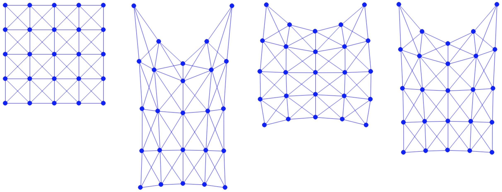
Figure 5.3.1. From left to right: initial, intermediate, and final static frame of the hanging square simulation.
In this section, we explored Dirichlet boundary conditions (DBC), integral to optimization time integrators, and presented them as straightforward linear equality constraints. There are two types of DBCs: sticky and slip. Sticky DBCs immobilize certain nodes, fixing their positions, whereas slip DBCs restrict the movement of nodes to within a plane or a line.
We focused on cases where sticky DBCs are already met at the start of a time step. In such scenarios, the DOF elimination method proves efficient. This technique modifies the gradient and Hessian of the Incremental Potential, ensuring that the resulting search direction remains within the feasible space.
In the following lecture, we will delve into the handling of slip DBCs and demonstrate methods for their efficient incorporation into optimization problems.
Although they might be satisfied at the start of a time step, general slip Dirichlet boundary conditions (DBC) present unique challenges. Unlike the sticky DBCs, they cannot be directly addressed using the DOF elimination method, primarily because their constraint Jacobian does not consist of identity matrix blocks. To navigate this complexity, we can adopt a change-of-basis strategy.
Before delving into the more general scenarios, it's insightful to first examine a particular type of slip DBC: those that are axis-aligned. Understanding this specific case will lay the groundwork for tackling the broader range of slip DBCs.
Axis-Aligned slip Dirichlet boundary conditions (DBC) uniquely restrict the movement of certain nodes to linear subspaces that are aligned with the axes. For instance, these constraints could limit motion to lines parallel to the x-axis or planes parallel to the yz-plane. An advantageous aspect of Axis-Aligned slip DBC is that their constraint Jacobians bear resemblance to those of sticky DBCs. Consequently, they can be efficiently managed using the same DOF elimination method.
Example 6.1.1 (Axis-Aligned Slip DBC).
Consider the previously mentioned two-node system in a 2D space, as referenced in the slip DBC example (Example 5.1.2). To apply a slip DBC that constrains the first node, represented by coordinates \((x_{11}, x_{12})\), to move only along the line \(y = 3\), we express this constraint as a linear equality:
[0100]x11x12x21x22=3.
Then similar to sticky DBC, in a time step where this slip DBC is already satisfied, assume we have
H=4−1−1−1−14−1−1−1−14−1−1−1−14,andg=1234,
we can solve the system
40−1−10100−104−1−10−14Δx11Δx12Δx21Δx22=−10−3−4
for search direction so that \(\Delta x_{12} = 0\) and the first node will stay on the \(y=3\) line for arbitrary step size since its \(y\) coordinate will not vary.
When dealing with general linear equality constraints, such as slip DBCs that aren't axis-aligned, the direct Degree of Freedom (DOF) elimination method faces certain limitations. This becomes evident particularly when \( AA^T \) is not an \( m \times m \) identity matrix. According to the Karush-Kuhn-Tucker (KKT) system (Equation (5.1.3)), the Lagrange multiplier vector \( \lambda \) can be solved as follows:
λ=−(AAT)−1AHΔx−(AAT)−1Ag.(6.2.1)
When we substitute Equation (6.2.1) back into the KKT system, it results in:
(I−AT(AAT)−1A)HΔx=(I−AT(AAT)−1A)(−g),(6.2.2)
This leads to an under-constrained system. The key challenge here is that \( I - A^T (AA^T)^{-1} A \) does not possess a special structure that can be conveniently exploited to derive an equivalent, non-singular system while still satisfying the constraints. This makes the direct application of the DOF elimination method impractical for general slip DBCs.
Our approach involves transforming the degrees of freedom (DOF) into a new set of variables, making the constraints as straightforward as those in sticky DBC. To achieve this, we employ singular value decomposition (SVD) on the constraint Jacobian matrix \( A \). The SVD of \( A \) is expressed as:
A=USVT.
Here, \( U \) is a \( m \times m \) orthogonal matrix, \( V \) is a \( dn \times dn \) orthogonal matrix, and \( S \) is a \( m \times dn \) diagonal matrix.
By defining \( y = V^T \Delta x \), we can reframe the Karush-Kuhn-Tucker (KKT) system (Equation (5.1.3)) into a new format:
[VTHVSST0][yλ′]=[−VTg0].(6.2.3)
In this transformed system, \( \lambda' = U^T \lambda \). Notably, the presence of the diagonal matrix \( S \) in the off-diagonal blocks allows the direct application of the DOF elimination method. Once we solve for \( y \), the original variable \( \Delta x \) is easily recovered through the matrix-vector product \( \Delta x = V y \).
Remark 6.2.1 (Limitations of Using SVD for DOF Elimination).
While we utilized singular value decomposition (SVD) to illustrate the concept, it's important to recognize the limitations of applying SVD in practice, especially on large matrices. There are two primary concerns:
Intractability with Large Matrices: Performing SVD on matrices of substantial size can be computationally challenging and often impractical.
Impact on Computational Efficiency: The Incremental Potential Hessian \( H \) typically exhibits sparsity, making it efficient to factorize in linear solves during simulations. However, if the resulting \( V \) from the SVD is dense, then \( V^T H V \) will also be dense. This not only slows down the computation but also significantly increases the cost of linear solves.
It's crucial to note that the new basis set (the column vectors of \( V \)) needs to be linearly independent but does not necessarily have to be orthonormal. This insight opens up the possibility of identifying a sparse basis set. Such a set can maintain computational efficiency when dealing with general linear equality constraints. For a practical example of this approach, see [Chen et al. 2022].
Fortunately, for constraints like slip DBCs that are decoupled per node, SVD simply results in block-diagonal U and V which could be constructed procedurally in an efficient way.
3D planar slip DBC at node i can be expressed as
niT(xi−xi′)=0,
where ni is the normal of the plane that node i is slipping, and xi′ is an arbitrary point on that plane.
As discussed near Equation (5.1.2), if at the beginning of the time step node i is already on the plane, the constraint simplifies to
niTΔxi=0.
Then performing SVD on the row vector niT, we obtain
niT=UiSiViT=1[100]niTmiTliT,(6.3.1)
where unit vectors ni, mi, and li together form an orthonormal basis in 3D.
Then it becomes clear that globally, U is simply a m×m identity matrix, S is a m×dn matrix where every row contains exactly one unit-valued entry in the column corresponding to the first DOF of the slip BC node, and V is a dn×dn block-diagonal matrix with the d×d orthonormal blocks only on those corresponding to BC nodes, and d×d identity matrix elsewhere.
To compute mi and li from ni, we first note that there are an infinite number of possible solutions.
Therefore, we can simply first construct mi=ni×[100]T, or mi=ni×[010]T if ni is almost colinear with [100]T, and then construct li=ni×mi.
To obtain VT(−g), one only needs to left-multiply each ViT=niTmiTliT to −gi.
As for VTHV, first left-multiply each ViT to every block on the i-th block row of H to obtain VTH. Then for the i-th block column of VTH, left-multiply Vi=[nimili] to every block.
Finally, after solving for y by applying the DOF elimination method on the modified system (Equation (6.2.3)), Δx can be obtained by Δx=Vy with similar block(node)-wise operations.
Example 6.3.1 (General Slip DBC).
For the same two-node system in 2D as mentioned in the slip DBC example (Example 5.1.2), to constrain the first node (x11,x12) inside the 3x+4y=2 line, the slip DBC can be expressed as
[3400]x11x12x21x22=2
and we can build
U=1,S=[1000],VT=0.6−0.80.80.611
for changing the basis.
Then in a time step where this slip DBC is already satisfied, assume we have
H=4−1−1−1−14−1−1−1−14−1−1−1−14,andg=1234,
we can compute
VTHV=4.960.280.20.20.283.04−1.4−1.40.2−1.44−10.2−1.4−14,andVTg=−1234,
and solve the system
100003.04−1.4−1.40−1.44−10−1.4−14y11y12y21y22=0−2−3−4
for y. Then the search direction can be obtained by Δx=Vy so that 3Δx11+4Δx12=0 and so the first node will stay on the 3x+4y=2 line for arbitrary step size.
This section has demonstrated that, with a change in the basis of variables, general slip Dirichlet boundary conditions (DBC) can be effectively managed using the Degree of Freedom (DOF) elimination method, much like axis-aligned slip DBCs.
While singular value decomposition (SVD) can be used to find the basis for general linear equality constraints, this approach may not be feasible for large or complex constraints. Nonetheless, it's possible to develop procedural routines for computing the basis, specifically tailored to node-wise slip DBC constraints.
Currently, our focus has been on maintaining DBCs that are already satisfied within the simulation framework. Moving forward, the discussion will shift towards exploring frictional contact between points and analytic surfaces. Additionally, we will revisit scenarios where DBCs are not satisfied at the start of a time step, delving into more complex cases.
Contact modeling is a crucial aspect of ensuring that solids do not intersect with obstacles or themselves. This topic was briefly touched upon in a previous section. In this lecture, we delve deeper into the specifics of non-interpenetration within the framework of the Incremental Potential Contact (IPC) method. Our focus will be on a simplified yet significant scenario: contact between solids and obstacles that have closed boundaries. This specific focus allows us to thoroughly explore the mechanics and principles of the IPC method in a controlled setting.
The Incremental Potential Contact (IPC) method is designed to ensure non-interpenetration in solids of any codimension by maintaining the unsigned distances between solid boundaries above zero throughout their movement. This approach is robust as it applies universally, irrespective of the solid's specific characteristics.
However, when signed distances are accessible, the application of IPC becomes not only straightforward but also more streamlined. Signed distances extend the concept of unsigned distances to encompass solid geometries with closed boundaries. With IPC enforcing non-interpenetration, the possibility of negative distances inside a solid is eliminated. Therefore, in scenarios where signed distances remain non-negative (including the state of being exactly zero), it's an indication of successful non-interpenetration.
Definition 7.1.1 (Codimension).
If \(W\) is a linear subspace of a finite-dimensional vector space \(V\), then the codimension of \(W\) in \(V\) is the difference between their dimensions:
codim(W)=dim(V)−dim(W).
For example, in 3D, a surface has codimension \(1\), and a line has codimension \(2\).
In computer graphics, when simulating cloth and hair, codimension 1 and 2 geometry representations are often applied respectively for efficiency. However, their signed distances are not well-defined. This also explains why unsigned distances are more general for modeling solid contact.
In a previous section, we explored various methods for representing solid geometries. One notable approach is the analytical representation. For instance, a 3D ball centered at \( \mathbf{c} \) with radius \( r \) can be analytically described by the parameterization:
{x∈R3∣∥x−c∥≤r,c∈R3,r>0}.
This principle of defining solid geometries extends beyond simple spheres. Many other shapes, such as half-spaces, boxes, ellipsoids, and tori, can be similarly parameterized. The key to these parameterizations lies in defining the "interior" of these objects, which can often be achieved through functions like signed distances. These functions provide a versatile tool for describing a wide range of simple and complex shapes in a concise and mathematical manner.
Example 7.1.1 (Ball Signed Distance Function).
The signed distance function \(d(\mathbf{x})\) and its derivatives of a ball centered at \(\mathbf{c}\) with radius \(r\) can be defined as
d(x)=∥x−c∥−r,∇d(x)=∥x−c∥x−c,and∇2d(x)=∥x−c∥3∥x−c∥2I−(x−c)(x−c)T.
Example 7.1.2 (Half-Space Signed Distance Function).
The signed distance function \(d(\mathbf{x})\) and its derivatives of a half-space with normal \(\mathbf{n}\) and \(d(\mathbf{o}) = 0\) can be defined as
d(x)=nT(x−o),∇d(x)=n,and∇2d(x)=0.(7.1.1)
Representing more intricate geometries, like those commonly encountered in real-life scenarios, can be a challenging task due to their complexity. An effective alternative to intricate parameterizations is the use of a uniform Euclidean grid. This grid serves as a storage mechanism for the signed distances of a solid object, with these distances precomputed at each grid node. When the distance at any arbitrary point within the solid is required, interpolation can be applied to the grid data.
Example 7.1.3 (Grid Signed Distance Field).
For a signed distance field stored on a uniform Euclidean grid with spacing \(\Delta x\), to query the distance at an arbitrary location \(\mathbf{x} = (x,y)\) where \(x = x_i + \alpha \Delta x\) and \(y = y_i + \beta \Delta x\) (\(\mathbf{x}_{i,j} = (x_i, y_j)\) are the location of grid nodes, \(0 \leq \alpha,\beta \leq 1\)), with bilinear interpolation (Figure 7.1.1 right),
d(x)=(1−β)((1−α)d(xi,i)+αd(xi+1,i))+β((1−α)d(xi,i+1)+αd(xi+1,i+1)).
From Figure 7.1.1 we also see that to approximate a solid boundary smoothly in this setting, a higher-order interpolation scheme such as quadratic b-spline interpolation is needed.
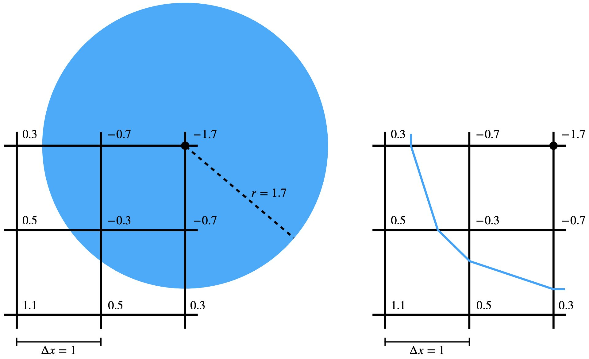
Figure 7.1.1. The signed distance between the grid nodes and the sphere boundary is precomputed and stored (left). With bilinear interpolation, part of the sphere boundary is approximated as the blue polyline (right).
In scenarios like a solid interacting with a planar ground, where the signed distance function \( d(\mathbf{x}) \) is smooth outside the obstacle, we can approach the modeling of contact by incorporating non-interpenetration constraints. These constraints are formulated using \( d(\mathbf{x}) \), while we also aim to minimize the Incremental Potential of the system.
Assuming that the solids are densely sampled with nodes \(\mathbf{x}\), we apply these constraints at the level of nodal Degrees of Freedom (DOFs) in relation to the obstacles:
xminE(x)s.t.dij≥0∀nodeiandobstaclej.(7.2.1)
In this equation, \( d_{ij} \) represents the signed distance between node \( i \) and obstacle \( j \). By ensuring that \( d_{ij} \) is non-negative, we effectively prevent the solids from intersecting with the obstacles1.
To address the inequality constraints in our contact modeling, we introduce a barrier potential \( P_b(\mathbf{x}) \). This potential transforms the constrained problem, as described in Equation (7.2.1), into an "unconstrained" optimization problem:
In this formulation, \( b() \) represents the barrier energy density function. As the distance approaches zero, this function tends to infinity, thereby providing a strong repulsion force to prevent interpenetration (refer to Figure 7.2.1). The distance threshold \( \hat{d} \) above which no contact force is exerted, the contact stiffness \( \kappa \) which controls the rate of change of the contact forces with respect to distance, and \( A_i \), the contact area of node \( i \), are key parameters in this setup. By integrating the energy density over the solid boundary, the barrier formulation effectively models a potential energy field that is of thickness \( \hat{d} \).
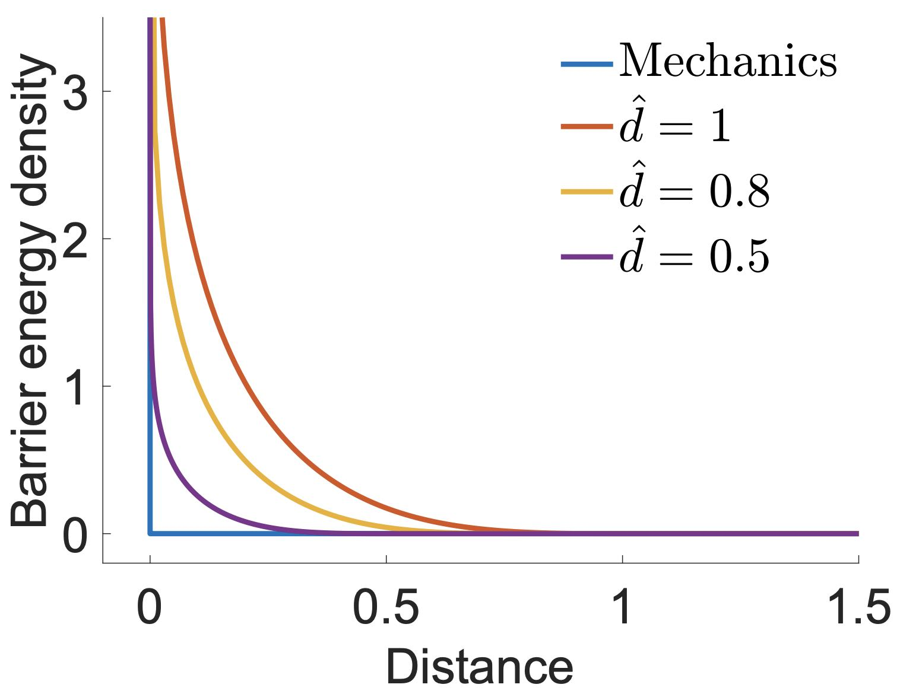
Figure 7.2.1. The barrier energy density function plotted with different d^. Decreasing d^ asymptotically matches the discontinuous definition of the contact condition.
Remark 7.2.1 (Contact Layer Interpretation).
Imagine the barrier potential \( P_b(\mathbf{x}) \) as representing the elasticity of an ultra-thin layer of virtual material that exists just outside the boundaries of the solids. This virtual layer has an effective thickness of \( \hat{d} \), which correlates with the distance threshold in the barrier function.
Consequently, the integration or summation used in computing \( P_b(\mathbf{x}) \) is weighted by the volume element \( w_i = A_i \hat{d} \), where \( A_i \) represents the contact area of each node. As solids approach and begin to compress this virtual elastic layer, contact forces arise. These forces, akin to a unique type of elasticity force, serve to prevent interpenetration by providing a repulsion effect whenever the solids come too close to each other. This model allows us to simulate the physical response of contact without actual penetration of the solids.
Applying chain rules with distance being the intermediate variables, we can derive the gradient and Hessian of \(P_b(\mathbf{x})\) as
∇Pb(x)=i,j∑wi∂d∂b(dij(x))∇dij(x)(7.2.4)
and
∇2Pb(x)=i,j∑wi(∂d2∂2b(dij(x))∇dij(x)∇dij(x)T+∂d∂b(dij(x))∇2dij(x)).(7.2.5)
1
As we are using signed distances here, the inequality constraints can be defined without introducing an \(\epsilon\) as in Equation (2.3.1) with unsigned distances.
So why can we solve Equation (7.2.2) to approximate the solution of the original problem in Equation (7.2.1)?
Similar to Dirichlet Boundary Conditions, at the solution \(x^*\) of Equation (7.2.1), the following KKT conditions all hold:
∇E(x∗)−i,j∑γij∇dij(x∗)=0,∀i,j,dij(x∗)≥0,γij≥0,γijdij(x∗)=0.(7.3.1)
While at the local optimum \(x'\) of Equation (7.2.2), we have
∇E(x′)+h2∇Pb(x′)=0,(7.3.2)
which is equivalently
∇E(x′)+h2i,j∑Aid^∇b(dij(x′))=0
and
∇E(x′)+h2i,j∑Aid^∂d∂b(dij(x′))∇dij(x′)=0
if we plug in the expression of \(\nabla b(d_{ij})\).
Let \(\gamma_{ij}' = -h^2 A_i \hat{d} \frac{\partial b}{\partial d}(d_{ij}(x'))\), we can further rewrite Equation (7.3.2) as
∇E(x′)−i,j∑γij′∇dij(x′)=0,
which is essentially the stationarity condition (first line in Equation (7.3.1)) if we take \(\gamma_{ij}'\) as the dual variable.
Now since the barrier function provides arbitrarily large repulsion to avoid interpenetration, we know that \(\forall i,j\), \(d_{ij}(x') \geq 0\). In addition, \(\gamma_{ij}' \geq 0\) also holds for all \(i,j\) because \(\frac{\partial b}{\partial d} \leq 0\) by construction. This means that at \(x'\), we have momentum balance, no interpenetrations, and contact forces only push but not pull.
In our simulation, the only Karush-Kuhn-Tucker (KKT) condition not strictly satisfied at \( x' \) is the complementarity slackness condition. This arises due to the way our barrier approximation functions. Specifically, we have a situation where \( \gamma_{ij} > 0 \Longleftrightarrow 0 < d_{ij} < \hat{d} \), representing the activation of contact forces based on the distance between solids and obstacles.
As the threshold \( \hat{d} \) decreases, contact forces become active only when the solids are in closer proximity (as illustrated in Figure 7.2.1). This adjustment leads to a reduction in the complementarity slackness error, which can be controlled to a certain extent. However, it's important to note that this control comes at a cost: computational efficiency may be reduced. This is because sharper objective functions, resulting from smaller \( \hat{d} \) values, tend to require more Newton iterations to resolve. Therefore, there is a trade-off between the accuracy of the simulation (in terms of adhering to the KKT condition) and the computational resources required.
In simulating contact between solids and obstacles, we primarily focus on enforcing non-negativity on the signed distances between solid degrees of freedom (DOFs) and obstacles, in conjunction with minimizing the Incremental Potential.
Transformation to an Unconstrained Problem: The inherent inequality-constrained minimization issue for each time step is transformed into an unconstrained problem. This is achieved through the introduction of a barrier potential. This potential rises to infinity as distances approach zero, effectively generating large repulsion forces that prevent interpenetration.
Outcomes at Local Minimum: At the local minimum of this barrier-augmented Incremental Potential, we attain a balance of momentum, ensure non-interpenetration, and generate contact forces that only push but do not pull. The only exception in the Karush-Kuhn-Tucker (KKT) conditions is the complementarity slackness, which is not strictly satisfied. The accuracy in satisfying this condition can be controlled by adjusting the distance threshold d^, albeit at the expense of computational efficiency.
Limitations and Next Steps: While the distance barrier method effectively addresses many contact scenarios, it cannot alone prevent artificial tunneling in dynamic simulations. To overcome this limitation, our next lecture will introduce the filtered line search scheme, an advanced technique designed to provide more guarantees to our simulations.
Remark 7.4.1 (Tunneling). Artificial tunneling in the context of simulations, particularly in computational physics and computer graphics, refers to a phenomenon where fast-moving objects pass through other objects or barriers without physically interacting with them, as if there were a tunnel through the barrier. This typically happens in scenarios involving discrete time steps, such as in computer simulations of physical systems.
In a real-world scenario, when two objects collide, there should be a physical interaction like a bounce, a stop, or a deformation. However, in a simulation with discrete time steps, if an object is moving very fast or the time steps are too large, the object's position might be calculated as being on one side of a barrier in one step and then on the other side in the next, without ever detecting a collision. This "skipping" of the collision step leads to what appears as tunneling through the object.
The Incremental Potential Contact (IPC) method effectively maintains non-interpenetration constraints within solid simulations. This method models a constitutive relationship that directly correlates contact forces with their respective distances, thus converting the constrained problem into an unconstrained one. By using appropriately small time steps, the IPC allows for robust and accurate solid simulations free from obstacle interpenetration within an optimization-based time integration framework.
However, challenges arise when using larger time steps, which can introduce multiple local minima in the Incremental Potential. This condition can lead to tunneling issues, where solids might unexpectedly pass through obstacles due to overly large search directions. To mitigate this risk, we introduce a filter line search strategy supplemented by continuous collision detection (CCD). This approach is designed to prevent tunneling by continuously adjusting the trajectory of solids in response to potential collisions.
To illustrate these concepts, we will examine a case study where an elastic square falls onto the ground. This example will demonstrate the effectiveness of the IPC method along with the filter line search and CCD in managing the dynamics of solid bodies and ensuring accurate, interpenetration-free simulations.
Example 8.1.1 (Tunneling).
Let's consider a simple illustrative example. Without external forces like gravity, for a particle (no elasticity) at \(\mathbf{x}_0 = (0, 0)\) with mass \(m\) and initial velocity \(\mathbf{v}_0 = (1, 0)\) hitting a fixed square obstacle centered at \((0.005, 0) \), the Incremental Potential minimization problem for the first time step is
xmin(2m∥x−(x0+hv0)∥2+h2Pb(x)).(8.1.1)
Since \(\hat{d}\) is usually set small enough such as \(10^{-4}m\) in this case, the barrier potential \(P_b(\mathbf{x})\) is not yet active at \(\mathbf{x}_0\) as the particle is not touching the obstacle. This makes the problem in Equation (8.1.1) quadratic, and our projected Newton (PN) method (Algorithm 3.3.1) will produce a search direction
p=hv0
at the first iteration, which directly leads to the global minimum of the Incremental Potential at \(\mathbf{x}_0 + h\mathbf{v}_0\) after line search. Taking \(h=0.01s\) (Figure 8.1.1), the particle will tunnel through the obstacle.
However, scenarios where particles pass through obstacles due to large time steps are clearly unrealistic, as the expected physical behavior is for the particle to collide with the obstacle and either stop or bounce back.
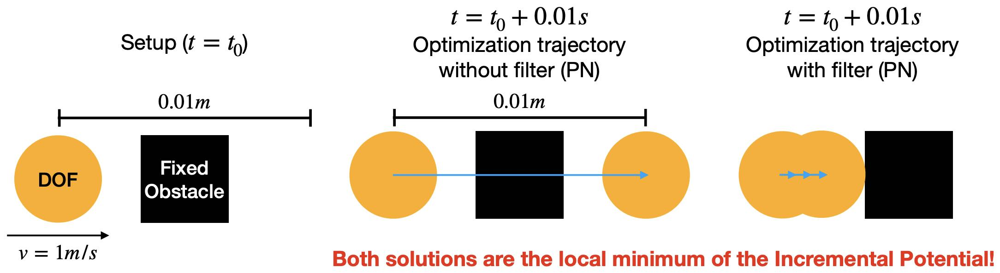
Figure 8.1.1. An illustration of the tunneling issue. With the projected Newton method introduced earlier, tunneling artifact could happen as shown in the middle. The physically plausible result shown on the right could be obtained with the filter line search scheme. The blue arrows show the optimization path.
From Example 8.1.1, we understand that simply ensuring the signed distances to be non-negative at the final solution is inadequate, especially in scenarios involving large time step sizes, high-speed impacts, or thin obstacles. These conditions can lead to inaccuracies and unrealistic outcomes in simulations.
The Incremental Potential Contact (IPC) method addresses this issue by ensuring that distances remain non-zero across the entire motion trajectory of solids. This approach is crucial for maintaining the physical accuracy and realism of the simulation.
But what exactly do we mean by "motion trajectory" in the context of discrete time integration? We will explain this next.
The most straightforward way of defining the motion trajectory between \(x^n\) and \(x^{n+1}\) at time \(t^n\) and \(t^{n+1}\) respectively would be the high-dimensional line segment connecting these two configurations. However, although enforcing non-negative signed distances on this trajectory could avoid the tunneling issue in Example 8.1.1, this strategy could potentially result in unrealistic behaviors as it alters the local optimum of the minimization problem (Equation (7.2.1)) in a nonphysical way (Figure 8.2.1).
Figure 8.2.1. For the setup in the tunneling example, enforcing non-negative signed distance along the motion trajectory approximated by the line segment between xn and xn+1 results in a nonphysical simulation result.
A more rigorous definition of the motion trajectory between \(x^n\) and \(x^{n+1}\) could be
{argxmin(21∥x−(xn+hvn)∥M2+h2∑P(x))h∈[0,tn+1−tn]}.
However, evaluating the configurations on this trajectory requires solving extra optimization problems, which could significantly complicate the time integration.
Instead, IPC takes the optimization path as an approximation to the motion trajectory. Specifically, for the time step solving from \(x^n\) to \(x^{n+1}\), if the optimization took \(l\) iterations, and each iteration we get iterate \(x^i\) after line search, the optimization path is simply the high-dimensional polyline
{(1−β)xi+βxi+1∣β∈[0,1],i=0,1,2,...,l}.
Now the time integration problem in time step \(n\) becomes finding such optimization path \(x^0, x^1, ..., x^l\) where \(x^l\) locally minimizes the Incremental Potential (Equation (7.2.2)) subject to
djk((1−β)xi+βxi+1)>0∀nodej,obstaclek,β∈[0,1],andi=0,1,2,...,l.
This enables enforcing the non-negative distance constraints per optimization iteration on the line segment between \(x^i\) and \(x^{i+1}\), which will not alter the local optimum of the time integration problem, and can be handled efficiently.
Recall from Algorithm 3.2.1 that the line search scheme updates the iterate as \(x^{i+1} \leftarrow x^i + \alpha p\), which means \(x^{i+1} - x^{i} = \alpha p\). Therefore, given an interpenetration-free \(x^i\), to ensure all the configurations on the line segment between \(x^i\) and \(x^{i+1}\) are interpenetration-free, we just need to find such \(\alpha\) that makes sure
djk(xi+βp)≥0∀nodej,obstaclek,andβ∈[0,α].
Based on the intuition that a sufficiently small \(\alpha\) could definitely make this happen, we can simply calculate an upper bound of such \(\alpha\) in every iteration, and make sure the backtracking line search results in a step size smaller than this upper bound. This upper bound can be conveniently calculated with continuous collision detection (CCD).
Definition 8.2.1 (Continuous Collision Detection (CCD)).
For a distance function \(d_{jk}(x + \alpha p)\) defined with the initial interpenetration-free configuration of the solids and obstacles \(x\), their intended displacement \(p\), and the step size \(\alpha\), CCD calculates the step size \(\alpha^C_{jk}\) given \(x\) and \(p\) such that
djk(x+αp)>0∀α∈[0,αjkC).(8.2.1)
Note that the problem definition implicitly requires \(d_{jk}(x) > 0\). Under this setting, if we denote \(d^a_{jk}(\alpha) = d_{jk}(x + \alpha p)\), \(\alpha^C_{jk}\) is simply the smallest positive real root of \(d^a_{jk}(\alpha)\) (see Figure 8.2.2 for an example), or \(\alpha^C_{jk} = \infty\) if \(d^a_{jk}(\alpha)\) does not have any positive real roots. There are many methods to obtain the exact or a conservative estimate of \(\alpha^C_{jk}\), we will see a specific example in the case study of this lecture. After computing \(\alpha^C_{jk}\) for all nodes \(j\) and obstacle \(k\), a step size upper bound \(\alpha^C\) for the line search could then be obtained as
αC=min(1,j,kminαjkC)
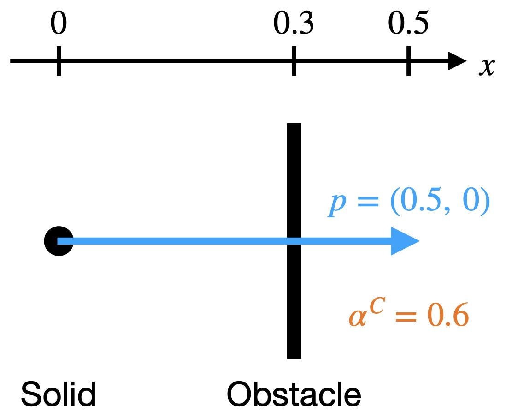
Figure 8.2.2. An illustration of CCD with a solid particle at (0,0) hitting a fixed vertical plane at x=0.3. With the intended displacement p=(0.5,0), we obtain αC=0.6.
Now, we can introduce our filter line search method (Algorithm 8.2.1), specifically designed to enforce non-interpenetration constraints throughout the entire approximated motion trajectory. This strategic enforcement is key in preventing tunneling issues that commonly occur in simulations with insufficient constraint handling.
This new scheme differs from the traditional backtracking line search method in a critical aspect: it initializes the step size. Instead of starting with a step size of \(1\), the filter line search method begins with \(\alpha^C\). This modification is subtle yet significant.
Algorithm 8.2.1 (Filter Backtracking Line Search).
Remark 8.2.1 (Algorithm Dependency Issue).
Using the optimization path to approximate the motion trajectory is still not perfect as it is algorithm dependent. Other than the projected Newton (PN) method, there could be an algorithm that walks around an obstacle and ended up with a configuration on the other side, still providing a tunneling solution (Figure 8.2.3).
Even with projected Newton, although in practice it always generates straightforward and physically plausible trajectories, there is no theoretical guarantee that it will never encounter tunneling issues.
An intuition is that the search direction in every PN iteration always significantly decreases the Incremental Potential (IP), and so it is unlikely to walk around any contacts which often results in iterations that do not sufficiently decrease the IP.
In fact, this kind of issue also happens in elastodynamics simulation without contact. Elasticity energy itself is also nonconvex, which can result in multiple local optima for the IP. The key to obtaining physical behaviors is to locally minimize IP, in other words, finding the nearby local minimum as the solution.
Figure 8.2.3. For the setup in the tunneling example, even with the filter line search scheme, if an optimization method other than projected Newton is applied, it could still lead to the tunneling issue.
To conclude, let's consider a case study where we simulate a square dropped onto a fixed planar ground. Building on our previous mass-spring model for an elastic square, we augment a barrier potential into its Incremental Potential and apply the filter line search scheme to manage the contact between the square's degrees of freedom (DOFs) and the ground.
If we further limit the planar ground to be horizontal, e.g. at \(y=y_0\), its signed distance function can be made even simpler than Equation (7.1.1):
d(x)=xy−y0,∇d(x)=[01],∇2d(x)=0.(8.3.1)
Combining it with Equation (7.2.4) and Equation (7.2.5), we can conveniently implement the gradient and Hessian computation for the barrier potential of this horizontal ground:
Implementation 8.3.1 (Barrier energy value, gradient, and Hessian, BarrierEnergy.py).
import math
import numpy as np
dhat = 0.01
kappa = 1e5
def val(x, y_ground, contact_area):
sum = 0.0
for i in range(0, len(x)):
d = x[i][1] - y_ground
if d < dhat:
s = d / dhat
sum += contact_area[i] * dhat * kappa / 2 * (s - 1) * math.log(s)
return sum
def grad(x, y_ground, contact_area):
g = np.array([[0.0, 0.0]] * len(x))
for i in range(0, len(x)):
d = x[i][1] - y_ground
if d < dhat:
s = d / dhat
g[i][1] = contact_area[i] * dhat * (kappa / 2 * (math.log(s) / dhat + (s - 1) / d))
return g
def hess(x, y_ground, contact_area):
IJV = [[0] * len(x), [0] * len(x), np.array([0.0] * len(x))]
for i in range(0, len(x)):
IJV[0][i] = i * 2 + 1
IJV[1][i] = i * 2 + 1
d = x[i][1] - y_ground
if d < dhat:
IJV[2][i] = contact_area[i] * dhat * kappa / (2 * d * d * dhat) * (d + dhat)
else:
IJV[2][i] = 0.0
return IJV
For the filter line search, with the position in the last iteration \(\mathbf{x}\) and a search direction \(\mathbf{p}\) of a specific node, the signed distance function is simply
\[
d(\mathbf{x} + \alpha \mathbf{p}) = \mathbf{x}_y + \alpha \mathbf{p}_y - y_0,
\]
where \(\alpha\) is the step size, and there is only one positive real root \(\alpha = (y_0 - \mathbf{x}_y) / \mathbf{p}_y\) when \(\mathbf{p}_y < 0\) since \(\mathbf{x}_y > y_0\) (no interpenetration up to current iteration). Taking the minimum of the positive real root per node then gives us the step size upper bound \(\alpha_C\) defined in Equation (8.2.1):
def init_step_size(x, y_ground, p):
alpha = 1
for i in range(0, len(x)):
if p[i][1] < 0:
alpha = min(alpha, 0.9 * (y_ground - x[i][1]) / p[i][1])
return alpha
Here we scale the upper bound by \(0.9\times\) so that exact touching configurations with \(d=0\) and \(b = \infty\) (floating-point number overflow) can be avoided.
Then once we make sure the step size upper bound is used to initialize the line search
Implementation 8.3.3 (Filter line search, time_integrator.py).
# filter line search
alpha = BarrierEnergy.init_step_size(x, y_ground, p) # avoid interpenetration and tunneling
while IP_val(x + alpha * p, e, x_tilde, m, l2, k, y_ground, contact_area, h) > E_last:
alpha /= 2
and that the contact area weights for all nodes are calculated
contact_area = [side_len / n_seg] * len(x) # perimeter split to each node
and passed to our simulator, we can simulate the square drop with mass-spring stiffness k=2e4 and time step size h=0.01 as shown in Figure 8.3.1.
Figure 8.3.1. A mass-spring elastic square is dropped onto the ground with 0 initial velocity under gravity. Here we show the frames when the square is: just dropped, first touching the ground, compressed to the maximum in this simulation, and becoming static.
Remark 8.3.1 (Contact Layer Integration).
Since in practice, contact forces are only exerted on the boundary of the solids, the barrier potential should be integrated only on the boundary as well.
This also explains why in our case study the contact area weight per node is simply calculated as the diameter of the square evenly distributed onto each boundary node.
However, as mass-spring elasticity cannot guarantee that all interior nodes will stay inside the boundary of the solid, we simply apply the barrier potential to all nodal DOFs of the square.
To mitigate tunneling issues in solid simulation with large time steps, it is crucial to enforce non-negativity constraints of signed distances between solids and obstacles throughout the entire motion trajectory, not just at the final solution.
While directly using the optimization path to approximate the motion trajectory isn't perfect theoretically, it supports the design of a filter line search scheme. This scheme utilizes continuous collision detection (CCD) and the projected Newton method, effectively preventing tunneling in practical scenarios.
The projected Newton method, a gradient-based approach for minimizing the Incremental Potential, requires that the potential energy has a continuous gradient. Consequently, the distance functions employed in our barrier potential need to be at least C1 continuous. For grid-based signed distance fields (Example 7.1.3), mere bilinear interpolation is considered insufficient.
Additionally, handling self-contact on the piece-wise linear boundary of a mesh necessitates further approximations to smooth the distance function. Detailed exploration of self-contact will be addressed in future sections
add ref
. Before that, we will first transition to discussing solids-obstacle friction in our next lecture.
In the macroscopic view, contact forces comprise not only the normal forces that prevent interpenetrations but also tangential friction forces that dampen shearing motions at the interfaces. Most surfaces, when observed microscopically, are not perfectly smooth but are formed of jagged edges. Friction essentially arises from forces preventing non-interpenetration between these jagged edges. In this lecture, we introduce the Coulomb friction model, incorporating approximations that make it compatible with optimization time integrators.
To model frictional contact, local frictional forces Fk can be added for every active contact point pair k.
For each such pair k, at the current state {x,v}, a consistently oriented sliding basis Tk(x)∈Rdm×d can be constructed, where m is the total number of simulated nodes and d is the dimension of space, such that vk=Tk(x)Tv∈Rd provides the local relative sliding velocity that is orthogonal to the distance gradient in the normal direction nk(x).
Example 9.1.1 (Particle Sliding on Sphere).
For a particle with velocity vp∈R3 moving on the surface of a sphere with velocity vs∈R3 (no rotation), the relative sliding velocity vk here can be calculated as
vk=(vp−vs)−nk⋅(vp−vs)nk=(I3−nknkT)(vp−vs).
If we stack the velocity of the particle and the sphere for this system to obtain v=[vpT,vsT]T∈R6, we now know that Tk is simply
Tk(x)=[I3−nk(x)nk(x)Tnk(x)nk(x)T−I3]∈R6×3.
For more general cases like mesh-mesh contact, the form of Tk only varies in how the relative velocity at the contact point pair k is related to the velocity at the simulated nodes.
Maximizing dissipation rate subject to the Coulomb constraint defines friction forces variationally
Fk(x)=Tk(x)argβ∈RdminβTvks.t.∥β∥≤μλkandβ⋅nk=0,(9.1.1)
where λk=−wk∂dk∂b is the contact force magnitude
and μ is the local friction coefficient. This is equivalent to
Fk(x)=−μλkTk(x)f(∥vk∥)s(vk),(9.1.2)
with s(vk)=∥vk∥vk when ∥vk∥>0, while s(vk) takes any unit vector orthogonal to nk when ∥vk∥=0. In addition, the friction scaling function, f, is also nonsmooth with respect to vk since f(∥vk∥)=1 when ∥vk∥>0, and f(∥vk∥)∈[0,1] when ∥vk∥=0. These non-smoothness would severely slow down and even break convergence of gradient-based optimization.
Figure 9.1.1. An illustration of Tk, vk, nk, and Fk when a point slides on a sphere.
Remark 9.1.1 (Contact Force Magnitude).λk=−wk∂dk∂b is the contact force magnitude because at node k, the contact force is −wk∇xkb(dk(x))=−wk∂dk∂b∇xkdk(x). Therefore, λk=∥−wk∂dk∂b∇xkdk(x)∥=−wk∂dk∂b since ∂dk∂b<0 and ∥∇xkdk(x)∥=1.
To enable efficient and stable optimization, the friction-velocity relation in the transition to static friction can be mollified by replacing f with a smoothly approximated function. Following IPC, we use
f1(y)={−ϵv2y2+ϵv2y,1,y∈[0,ϵv)y≥ϵv,(9.1.3)
where f1′(ϵv)=0 and a velocity magnitude bound ϵv (in units of m/s) below which sliding velocities vk are treated as static is defined for bounded approximation error (Figure 9.1.2).
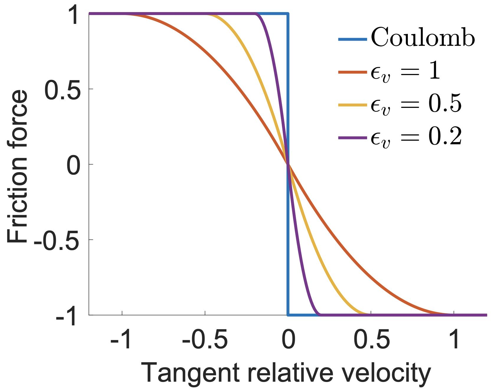
Figure 9.1.2. A 1D illustration of the smoothed relation between friction force and sliding velocity. Decreasing ϵv asymptotically matches the discontinuous Coulomb friction model.
However, challenges still remain on incorporating friction into the optimization time integration. A major problem is that friction is not a conservative force and there is no well-defined potential such that taking the opposite of its gradient produces the frictional force. In other words, implicit friction force is not integrable. Without a potential energy, backtracking line search could not be performed, and thus guarantees on the stability and convergence of the optimization will be broken.
In fact, whether a force has well-defined potential energy really depends on the temporal discretization. For example, with explicit time integration, any force f is constant within a time step and it has a potential energy −fTx.
Taking this inspiration, we could make friction force integrable with a smarter temporal discretization. Making friction force constant within a time step would certainly restrict the size of the time step to obtain high quality results. Therefore, we discretize part of the friction force explicitly and formulate an integrable semi-implicit friction force.
Following IPC, we fix the normal force magnitude λ (the ones only used in calculating friction) and the tangent operator T during the nonlinear optimization to the value in the last time step n: λn=λ(xn), and Tn=T(xn), which then makes the friction force integrable with a potential energy
Pf(x)=k∑μλknf0(∥vˉkh^∥),(9.2.1)
where vˉk=(Tkn)Tv, h^I=(∂v/∂x)−1, and
f0(y)={−3ϵv2h^2y3+ϵvh^y2+3ϵvh^,y,y∈[0,ϵvh^)y≥ϵvh^,(9.2.2)
so that f0′(y)=f1(y/h^). Here h^ is a constant multiple of the time step size h for most linear (multi-)step time integration methods including implicit Euler and higher-order backward difference formulas, etc.
Then, taking the gradient of Equation (9.2.1) w.r.t. x we obtain
−∇Pf(x)=−k∑μλknTknf1(∥vˉk∥)s(vˉk),(9.2.3)
which is a semi-implicit discretization of our mollified friction force with explicit terms λkn and Tkn.
The Hessian of Pf can be calculated as
=∇2Pf(x)k∑μλknTkn(∥vˉk∥3f1′(∥vˉk∥)∥vˉk∥−f1(∥vˉk∥)vˉkvˉkT+∥vˉk∥f1(∥vˉk∥)I3)TknT∂x∂v.(9.2.4)
Remark 9.2.1.
In the friction gradient and Hessian expression (Equation (9.2.3) and Equation (9.2.4)), there are ∥vk∥ in the denominators, which could be 0 when there is no relative sliding motion at a contact point.
To avoid division by 0 during the computation, for friction gradient, we can derive
∥vˉk∥f1(∥vˉk∥)={−ϵv2∥vˉk∥+ϵv2,1/∥vˉk∥,∥vˉk∥∈[0,ϵv)∥vˉk∥≥ϵv,(9.2.5)
which is well-defined everywhere, and so we obtain
−∇Pf,k(x)=−μλknTkn∥vˉk∥f1(∥vˉk∥)vˉk=0when∥vˉk∥=0.
For friction Hessian, we can derive
∥vˉk∥2f1′(∥vˉk∥)∥vˉk∥−f1(∥vˉk∥)={−1/ϵv2,−1/∥vˉk∥2,∥vˉk∥∈[0,ϵv)∥vˉk∥≥ϵv,(9.2.6)
which is also well-defined everywhere, and since vˉkvˉkT/∥vˉk∥=0 when ∥vˉk∥=0, we know that
∇2Pf,k(x)=μλknTkn(∥vˉk∥f1(∥vˉk∥)I3)TknT∂x∂vwhen∥vˉk∥=0.
Remark 9.2.2.
The friction formulation in this lecture is introduced slightly differently from the original IPC [Li et al. 2020] in 2 places:
We directly use the relative sliding velocity vk rather than the relative sliding displacement uk=h^vk in IPC as the input to the mollifier f1(), and so our f1() differs from that in the IPC on h^ in the denominators. When time integration rules other than implicit Euler is applied (so xn+1−xn=h^vn+1), calling uk the relative sliding displacement is inappropriate and may cause confusions.
We did not introduce a tangent basis to express relative sliding velocity in the tangent space, because this is not necessary in computing the friction energy, gradient, and Hessian.
To obtain the solution with fully implicit friction, we can iteratively alternate between the nonlinear optimization with fixed λ, and T given as
xmin:E(x,{λ,T})=21∥x−x~n∥M2+Δt2(Pe(x)+Pb(x)+Pf(x,{λ,T}))s.t.Ax=b,(9.3.1)
and friction update until convergence (Algorithm 9.3.1).
Algorithm 9.3.1 (Fixed-Point Iteration for Fully-Implicit Friction).
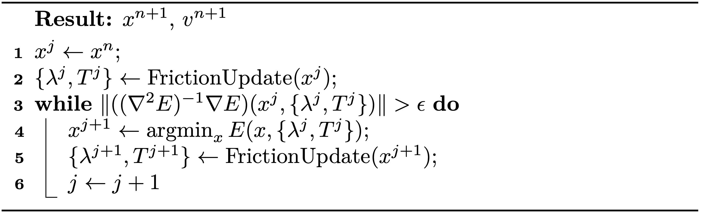
If we denote
\begin{equation}
\begin{aligned}
& f_m({ \lambda, T }) = \text{arg}\min_x E(x, { \lambda, T}) \
& f_u(x) = \text{FrictionUpdate}(x),
\end{aligned}
\end{equation}
then Algorithm 9.3.1 is essentially a fixed-point iteration that finds the fixed-point of function
\begin{equation}
(f_m \cdot f_u) (x) \equiv f_m( f_u (x)).
\end{equation}
Definition 9.3.1.x is a fixed point of function f() if and only if
\begin{equation}
x = f(x).
\end{equation}
The fixed-point iterations find the fixed-point of a function f() starting from x0 by iteratively updating the estimate
\begin{equation}
x^{i+1} \leftarrow f(x^i)
\end{equation}
until convergence.
Since the convergence of fixed-point iterations could only be achieved given an initial guess sufficiently close to the final solution, the convergence of Algorithm 9.3.1 analogously requires small time step sizes. However, note that each minimization with fixed {λ,T} (Algorithm 9.3.1 line 4) is still guaranteed to converge with arbitrarily large time step sizes.
Remark 9.3.1.
In practice, semi-implicit friction with frame-rate time step sizes can already produce results with high visual quality. For higher accuracy, running 2 to 3 fixed-point iterations for friction is generally sufficient.
We introduced the Coulomb friction model, which non-smoothly penalizes shearing motion at contact points through static and dynamic friction forces in the tangent space.
To integrate friction into the optimization time integrator, we first smoothly approximate the dynamic-static transition. This allows friction forces to be uniquely determined using only the nodal velocity degrees of freedom.
We then apply a semi-implicit discretization that fixes the normal force magnitude λ and the tangent operator T at the previous time step, enhancing the integrability of friction.
To achieve a solution with fully-implicit friction, fixed-point iterations are performed. These iterations alternate between semi-implicit time integration and updates for λ and T.
In the next lecture, we will explore a case study involving a square on a slope with varying friction coefficients.
In this section, based on our learnings from Frictional Contact, we implement frictional contact for a slope within the optimization time integration framework. We start by extending the contact model used for horizontal grounds in the Square Drop case study to accommodate slopes with arbitrary orientations and locations.
Following this extension, we implement friction for the slope, tested by simulating an elastic square dropped onto it. Depending on the friction coefficient μ, the square either stops at various points on the slope or continues to slide.
The implementation in the Square Drop case study for horizontal grounds results in a simplified distance and distance gradient (Equation (8.3.1)) compared to that of a general half-space (Equation (7.1.1)):
d(x)=nT(x−o),∇d(x)=n,and∇2d(x)=0.(10.1.1)
This is all we need for implementing the slope. Defining a normal direction and a point lying on the slope
ground_n = np.array([0.1, 1.0]) # normal of the slope
ground_n /= np.linalg.norm(ground_n) # normalize ground normal vector just in case
ground_o = np.array([0.0, -1.0]) # a point on the slope
and passing them to the time integrator and barrier energy, we can modify the barrier energy value, gradient, and Hessian computation for the slope as
import math
import numpy as np
dhat = 0.01
kappa = 1e5
def val(x, n, o, contact_area):
sum = 0.0
for i in range(0, len(x)):
d = n.dot(x[i] - o)
if d < dhat:
s = d / dhat
sum += contact_area[i] * dhat * kappa / 2 * (s - 1) * math.log(s)
return sum
def grad(x, n, o, contact_area):
g = np.array([[0.0, 0.0]] * len(x))
for i in range(0, len(x)):
d = n.dot(x[i] - o)
if d < dhat:
s = d / dhat
g[i] = contact_area[i] * dhat * (kappa / 2 * (math.log(s) / dhat + (s - 1) / d)) * n
return g
def hess(x, n, o, contact_area):
IJV = [[0] * 0, [0] * 0, np.array([0.0] * 0)]
for i in range(0, len(x)):
d = n.dot(x[i] - o)
if d < dhat:
local_hess = contact_area[i] * dhat * kappa / (2 * d * d * dhat) * (d + dhat) * np.outer(n, n)
for c in range(0, 2):
for r in range(0, 2):
IJV[0].append(i * 2 + r)
IJV[1].append(i * 2 + c)
IJV[2] = np.append(IJV[2], local_hess[r, c])
return IJV
Then for the continuous collision detection, we similarly modify the implementation to compute the large feasible initial step size for line search using n and o:
def init_step_size(x, n, o, p):
alpha = 1
for i in range(0, len(x)):
p_n = p[i].dot(n)
if p_n < 0:
alpha = min(alpha, 0.9 * n.dot(x[i] - o) / -p_n)
return alpha
Here the search direction of each node is projected onto the normal direction n to divide the current distance when computing the smallest step size that first brings the distance to 0.
Finally, drawing the slope as a line from o−3n^ to o+3n^ where n^=[ny,−nx] pointing to the inclined direction,
Now to implement friction for the slope, we start by implementing the functions that calculate f0(∥vˉk∥h^), f1(∥vˉk∥)/∥vˉk∥, and (f1′(∥vˉk∥)∥vˉk∥−f1(∥vˉk∥))/∥vˉk∥2 according to Equation (9.2.2), Equation (9.2.5), and Equation (9.2.6) respectively.
With these terms available, we can then implement the semi-implicit friction energy value, gradient, and Hessian computations according to Equation (9.2.1), Equation (9.2.3), and Equation (9.2.4) respectively.
Implementation 10.2.2 (Friction value, gradient, and Hessian, FrictionEnergy.py).
def val(v, mu_lambda, hhat, n):
sum = 0.0
T = np.identity(2) - np.outer(n, n) # tangent of slope is constant
for i in range(0, len(v)):
if mu_lambda[i] > 0:
vbar = np.transpose(T).dot(v[i])
sum += mu_lambda[i] * f0(np.linalg.norm(vbar), epsv, hhat)
return sum
def grad(v, mu_lambda, hhat, n):
g = np.array([[0.0, 0.0]] * len(v))
T = np.identity(2) - np.outer(n, n) # tangent of slope is constant
for i in range(0, len(v)):
if mu_lambda[i] > 0:
vbar = np.transpose(T).dot(v[i])
g[i] = mu_lambda[i] * f1_div_vbarnorm(np.linalg.norm(vbar), epsv) * T.dot(vbar)
return g
def hess(v, mu_lambda, hhat, n):
IJV = [[0] * 0, [0] * 0, np.array([0.0] * 0)]
T = np.identity(2) - np.outer(n, n) # tangent of slope is constant
for i in range(0, len(v)):
if mu_lambda[i] > 0:
vbar = np.transpose(T).dot(v[i])
vbarnorm = np.linalg.norm(vbar)
inner_term = f1_div_vbarnorm(vbarnorm, epsv) * np.identity(2)
if vbarnorm != 0:
inner_term += f_hess_term(vbarnorm, epsv) / vbarnorm * np.outer(vbar, vbar)
local_hess = mu_lambda[i] * T.dot(utils.make_PSD(inner_term)).dot(np.transpose(T)) / hhat
for c in range(0, 2):
for r in range(0, 2):
IJV[0].append(i * 2 + r)
IJV[1].append(i * 2 + c)
IJV[2] = np.append(IJV[2], local_hess[r, c])
return IJV
Note that in Numpy, matrix-matrix and matrix-vector products are realized by the dot() function.
For implicit Euler, v=(x−xn)/h and so h^=h.
Here mu_lambda stores μλkn for each node, where the normal force magnitude λkn is calculated using xn at the beginning of each time step.
Implementation 10.2.3 (Use mu and lambda, time_integrator.py).
def step_forward(x, e, v, m, l2, k, n, o, contact_area, mu, is_DBC, h, tol):
x_tilde = x + v * h # implicit Euler predictive position
x_n = copy.deepcopy(x)
mu_lambda = BarrierEnergy.compute_mu_lambda(x, n, o, contact_area, mu) # compute mu * lambda for each node using x^n
# Newton loop
Implementation 10.2.4 (Compute mu and lambda, BarrierEnergy.py).
def compute_mu_lambda(x, n, o, contact_area, mu):
mu_lambda = np.array([0.0] * len(x))
for i in range(0, len(x)):
d = n.dot(x[i] - o)
if d < dhat:
s = d / dhat
mu_lambda[i] = mu * -contact_area[i] * dhat * (kappa / 2 * (math.log(s) / dhat + (s - 1) / d))
return mu_lambda
Since the slope is static, and the normal direction is the same everywhere, T is constant and so can be discretized accurately.
Finally, we set friction coefficient μ and pass it to the time integrator where we add friction energy to model semi-implicit friction on the slope.
mu = 0.11 # friction coefficient of the slope
Now we are ready to test the simulation with different friction coefficients. Since our slope has an inclined angle θ with tan(θ)=0.1, we test μ=0.1, 0.11, and 0.2 (Figure 10.2.1). Here we see that when μ=0.1, the critical value that provides dynamic friction forces in the same magnitude with that of the gravity component on the slope, the square keeps sliding after gaining the initial momentum (Figure 10.2.1 top). When we set μ=0.11, right above the critical value, the square slides a while and then stopped, showing that static friction is properly resolved (Figure 10.2.1 middle). With μ=0.2, the square stops even earlier (Figure 10.2.1 bottom).
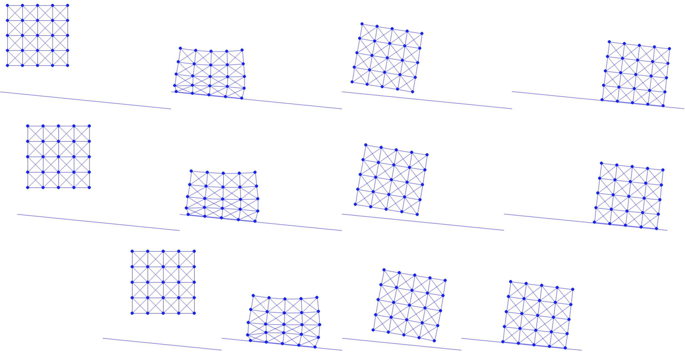
Figure 10.2.1. With friction coefficient μ=0.1 (top), 0.11 (middle), and 0.2 (bottom), we simulate an elastic square dropped onto a slope. Except the top one that the square keeps sliding, the lower two with larger μ both end up with a static equilibrium.
In this case study, we implemented semi-implicit friction between simulated objects and a slope, accommodating arbitrary orientations and positions. Within the optimization time integration framework of IPC, friction is also modeled using potential energy. The key difference is that the normal force magnitude and tangent operator are precomputed at the start of each time step for semi-implicit discretization.
In the next lecture, we will introduce moving boundary conditions. This will involve obstacles or boundary nodes moving in a prescribed manner, actively injecting dynamics into the scene.
Kinematic Collision Objects (CO) and Moving Dirichlet Boundary Conditions (BC) are crucial in many simulation scenarios. A CO can be considered as a collection of BC nodes.
At the start of a time step, it is ideal if the BC nodes can be moved directly to their prescribed locations without causing any interpenetrations. This allows the simulation to proceed smoothly using the Degree of Freedom (DOF) elimination method, which ensures the constraints remain feasible.
However, with large time steps, high velocities, or significant deformations, directly prescribing BC nodes often leads to interpenetration or "tunneling" artifacts, where objects pass through each other unrealistically.
To address these challenges, the penalty method is applied. This method progressively adjusts the simulation towards a feasible set where both CO and BC constraints are satisfied, and interpenetrations are avoided.
A case study demonstrating these principles will be shown through the simulation of a compressed square.
At the beginning of each time step towards time n+1, we evaluate nodal position x^kn+1 for each BC node k based on their prescribed motions. During each Newton iteration i, for the iterate xi, we define a velocity residual to assess how close each BC node is to meeting its target:
rBC,ki=h1∥xki−x^kn+1∥.
When rBC,ki falls below a specific tolerance ϵ for any BC node k, we can fix the node at its current location xki≈x^kn+1 and apply the DOF elimination method in the subsequent iterations. This is particularly straightforward in scenes with only static BCs, where the DOF elimination method is directly applied.
For other BC nodes k that are far from their target locations, we introduce new penalty terms to the Incremental Potential for each of these nodes:
2κMmk∥xk−x^kn+1∥2.(11.1.1)
Here, mk represents the nodal mass, allowing for intuitive setting of the penalty stiffness κM, as the Hessian of the penalty term with respect to BC nodes is simply κM times that of the inertia term.
Remark 11.1.1.
For collision obstacles (CO), precisely calculating node masses is challenging due to unknown factors like density. A practical approach is to assume a density similar to that of the simulated solids in the scene. This assumption makes the diagonal entries on the Hessian of the penalty terms roughly κM times that of the inertia term.
For codimensional COs such as shells, rods, and particles, the key is to consider a reasonably large thickness when calculating their volumes. This helps in ensuring that their physical properties align more closely with those of the main simulation bodies.
Setting the penalty stiffness κM appropriately can be challenging. If κM is set too low, it may not effectively move the BC node towards its target. Conversely, a too high κM can lead to numerical issues. Thus, we initially set κM to a reasonably large value and adaptively increase it as necessary.
During the Newton solve, if there are BC nodes k where rBC,ki≥ϵ at the point of Newton convergence, we double the penalty stiffness κM to 2× its current value and continue the Newton solve. This process is repeated until all BCs are satisfactorily met at convergence.
Remark 11.1.2.
In practice, with double precision floating-point numbers, initializing κM below 106 is typically sufficient, given that the Hessian of the stiff penalty terms is purely diagonal. However, if certain BCs remain unsatisfied even when κM is increased to above 1010, the optimization process may stall due to severe numerical errors. This stalling occurs because extremely stiff penalty terms are in conflict with the contact barriers. However, such a scenario would likely only occur under a rare CO/BC setting in a manner far more extreme than what is tested in Figure 2.3.1.
We simulate compressing an elastic square using a ceiling.
The excutable Python project for this section can be found at https://github.com/phys-sim-book/solid-sim-tutorial under the 5_mov_dirichlet folder.
The ceiling in our simulation is modeled as a half-space with a downward normal vector n=(0,−1). The distance from the ceiling to other simulated Degrees of Freedom (DOFs) can be calculated using Equation (7.1.1). To effectively apply the penalty method, it's necessary that the ceiling's height also serves as a DOF.
Following the approach used in the Square on Slope project, we choose the origin o on the ceiling as the DOF and incorporate it into the variable x:
[x, e] = square_mesh.generate(side_len, n_seg) # node positions and edge node indices
x = np.append(x, [[0.0, side_len * 0.6]], axis=0) # ceil origin (with normal [0.0, -1.0])
The ceiling is initially positioned directly above the elastic square, as shown in the left image of Figure 11.2.1. By doing so, we ensure that the nodal mass of this newly added DOF is consistent with the other simulated nodes on the square, as per our implementation.
With this additional DOF, we can straightforwardly model the contact between the ceiling and the square. This is done by enhancing the existing functions that compute the barrier energy value, gradient, Hessian, and the initial step size:
Implementation 11.2.2 (Barrier energy value, BarrierEnergy.py).
n = np.array([0.0, -1.0])
for i in range(0, len(x) - 1):
d = n.dot(x[i] - x[-1])
if d < dhat:
s = d / dhat
sum += contact_area[i] * dhat * kappa / 2 * (s - 1) * math.log(s)
Implementation 11.2.3 (Barrier energy gradient, BarrierEnergy.py).
n = np.array([0.0, -1.0])
for i in range(0, len(x) - 1):
d = n.dot(x[i] - x[-1])
if d < dhat:
s = d / dhat
local_grad = contact_area[i] * dhat * (kappa / 2 * (math.log(s) / dhat + (s - 1) / d)) * n
g[i] += local_grad
g[-1] -= local_grad
Implementation 11.2.4 (Barrier energy Hessian, BarrierEnergy.py).
n = np.array([0.0, -1.0])
for i in range(0, len(x) - 1):
d = n.dot(x[i] - x[-1])
if d < dhat:
local_hess = contact_area[i] * dhat * kappa / (2 * d * d * dhat) * (d + dhat) * np.outer(n, n)
index = [i, len(x) - 1]
for nI in range(0, 2):
for nJ in range(0, 2):
for c in range(0, 2):
for r in range(0, 2):
IJV[0].append(index[nI] * 2 + r)
IJV[1].append(index[nJ] * 2 + c)
IJV[2] = np.append(IJV[2], ((-1) ** (nI != nJ)) * local_hess[r, c])
n = np.array([0.0, -1.0])
for i in range(0, len(x) - 1):
p_n = (p[i] - p[-1]).dot(n)
if p_n < 0:
alpha = min(alpha, 0.9 * n.dot(x[i] - x[-1]) / -p_n)
Here for the distance between the ceiling o and a node x, we have the stacked quantities locally:
d(x,o)=nT(x−o),∇d(x,o)=[n−n],∇2d(x,o)=0.
Now we apply the moving BC on the ceiling to compress the elastic square. We set the ceiling's DOF, identified by the node index (n_seg+1)*(n_seg+1), as the sole Dirichlet Boundary Condition (DBC) in this scene. We assign it a downward velocity of (0,−0.5). The movement is stopped when the ceiling reaches a height of −0.6:
Then we implement the penalty term according to Equation (11.1.1), which is essentially a quadratic spring energy for controlling the motion of the ceiling:
Implementation 11.2.7 (Spring energy computation, SpringEnergy.py).
import numpy as np
def val(x, m, DBC, DBC_target, k):
sum = 0.0
for i in range(0, len(DBC)):
diff = x[DBC[i]] - DBC_target[i]
sum += 0.5 * k * m[DBC[i]] * diff.dot(diff)
return sum
def grad(x, m, DBC, DBC_target, k):
g = np.array([[0.0, 0.0]] * len(x))
for i in range(0, len(DBC)):
g[DBC[i]] = k * m[DBC[i]] * (x[DBC[i]] - DBC_target[i])
return g
def hess(x, m, DBC, DBC_target, k):
IJV = [[0] * 0, [0] * 0, np.array([0.0] * 0)]
for i in range(0, len(DBC)):
for d in range(0, 2):
IJV[0].append(DBC[i] * 2 + d)
IJV[1].append(DBC[i] * 2 + d)
IJV[2] = np.append(IJV[2], k * m[DBC[i]])
return IJV
Next, we focus on optimizing with the spring energies while properly handling the convergence check and penalty stiffness adjustments. At the start of each time step, the target position for each DBC node is computed, and the penalty stiffness, kM, is initialized to 10. If certain nodes reach their preset limit, we then set the target as their current position:
DBC_target = [] # target position of each DBC in the current time step
for i in range(0, len(DBC)):
if (DBC_limit[i] - x_n[DBC[i]]).dot(DBC_v[i]) > 0:
DBC_target.append(x_n[DBC[i]] + h * DBC_v[i])
else:
DBC_target.append(x_n[DBC[i]])
DBC_stiff = 10 # initialize stiffness for DBC springs
Entering the Newton loop, in each iteration, just before computing the search direction, we assess how many DBC nodes are close enough to their target positions. We store these results in the variable DBC_satisfied:
# check whether each DBC is satisfied
DBC_satisfied = [False] * len(x)
for i in range(0, len(DBC)):
if LA.norm(x[DBC[i]] - DBC_target[i]) / h < tol:
DBC_satisfied[DBC[i]] = True
Then we only eliminate the DOFs of those DBC nodes that already satisfy the boundary condition:
# eliminate DOF if it's a satisfied DBC by modifying gradient and Hessian for DBC:
for i, j in zip(*projected_hess.nonzero()):
if (is_DBC[int(i / 2)] & DBC_satisfied[int(i / 2)]) | (is_DBC[int(j / 2)] & DBC_satisfied[int(i / 2)]):
projected_hess[i, j] = (i == j)
for i in range(0, len(x)):
if is_DBC[i] & DBC_satisfied[i]:
reshaped_grad[i * 2] = reshaped_grad[i * 2 + 1] = 0.0
return [spsolve(projected_hess, -reshaped_grad).reshape(len(x), 2), DBC_satisfied]
The BC satisfaction information stored in DBC_satisfied is also used to check convergence and update kM when needed:
[p, DBC_satisfied] = search_dir(x, e, x_tilde, m, l2, k, n, o, contact_area, (x - x_n) / h, mu_lambda, is_DBC, DBC, DBC_target, DBC_stiff, tol, h)
while (LA.norm(p, inf) / h > tol) | (sum(DBC_satisfied) != len(DBC)): # also check whether all DBCs are satisfied
print('Iteration', iter, ':')
print('residual =', LA.norm(p, inf) / h)
if (LA.norm(p, inf) / h <= tol) & (sum(DBC_satisfied) != len(DBC)):
# increase DBC stiffness and recompute energy value record
DBC_stiff *= 2
E_last = IP_val(x, e, x_tilde, m, l2, k, n, o, contact_area, (x - x_n) / h, mu_lambda, DBC, DBC_target, DBC_stiff, h)
Now, we proceed to run the simulation, which involves severely compressing the dropped elastic square as depicted in (Figure 11.2.1). From the final static frame, we observe that the elastic springs on the edges are inverted due to extreme compression. This artifact is typical in mass-spring models of elasticity. In future chapters, we will explore how applying finite-element discretization to barrier-type elasticity models, such as the Neo-Hookean model, can prevent such issues. That approach is akin to the enforcement of non-interpenetrations in our current simulations.
Figure 11.2.1. A square is dropped onto the ground and compressed by a ceiling until inverted.
We introduced the penalty method for handling moving boundary conditions while preventing interpenetrations. The key strategies involved are:
Augmenting the Incremental Potential with additional spring energies on the DBC nodes;
Adaptively increasing the penalty stiffness as required;
Eliminating DOFs for those BC nodes that are sufficiently close to their targets; and
Ensuring all BCs are satisfied at the point of convergence.
To address the inversion artifact observed in our case study of compressing mass-spring elastic squares, the application of barrier-type elasticity energies is essential. Our penalty method for moving BCs plays a crucial role when these energies are applied, as directly prescribing BC nodes can still lead to inversion. In the next chapter, we will explore hyperelasticity models, which are preferred over mass-spring systems in practical applications.
In previous case studies, we've relied on the mass-spring model to simulate the elastic behaviors of solids. This model approximates 2D and 3D elasticity by connecting multiple springs in various directions, each responding only to stretch and compression. However, this simple approximation often fails to capture the complexities of real-world phenomena. Starting with this lecture, we will delve into the mathematical description of deformation and introduce a more rigorous approach to modeling elasticity for continuum bodies.
When discussing continuum bodies or continuum mechanics, we operate under the continuum assumption. This perspective treats materials—whether solid, liquid, or gas—as continuous entities, avoiding the need to account for microscopic interactions between molecules and atoms. This assumption is not only practical in engineering and graphics applications but is also prevalent in everyday scenarios.
In graphics simulations, the continuum assumption applies to a wide range of materials, including deformable objects (both elastic and plastic), muscle, flesh, cloth, hair, liquids, smoke, gas, and granular materials like sand, snow, mud, and soil. In continuum mechanics, properties such as density, velocity, and force are defined as continuous functions of position. We have explored their discrete counterparts in the Discrete Space and Time section.
Equations of motion, based on Newton's 2nd law, are solved within the spatial domain and evolved over time to simulate the dynamic behaviors of these materials.
Kinematics is the study of motion within continuum materials, focusing primarily on the changes in shape or deformation that occur, whether locally or globally, across different coordinate systems. The aim is to describe motion both qualitatively and quantitatively, which is crucial for deriving the governing equations of dynamics and mechanical responses. Notably, kinematics can often be described without the need to introduce concepts like force, stress, or even mass.
In continuum mechanics, deformation is typically represented through three key components:
Material (or undeformed) space X: This represents the initial position of any point in the material.
World (or deformed) space x: This indicates the current position of any point.
Deformation map ϕ(X,t): This function maps points from the material space to the world space, showing how the position of material points changes over time.
At the initial time t=0, the material space X and the world space x coincide, meaning every point starts at its undeformed position.
Definition 12.1.1 (Deformation/Flow Map).
The motion of material in continuum mechanics is determined by a mapping ϕ(⋅,t):Ω0→Ωt, where Ω0,Ωt⊂Rd and d=2 or 3 represents the dimension of the simulated problem (or domain). This mapping, often referred to as the flow map or the deformation map, is crucial in understanding how material points move over time.
Material Points X: Points in the set Ω0 are known as material points and are designated as X.
Current Locations x: Points in Ωt represent the location of material points at time t, and are referred to as x.
The deformation map ϕ describes the trajectory of each material point X∈Ω0 throughout time, expressed as:
x=x(X,t)=ϕ(X,t).
Example 12.1.1.
If our object is moving with a constant speed v along direction n, then we have
x=X+tvn.(12.1.1)
If an object undergoes some rigid motion after time t (compared to time 0), we will have
x=RX+b,(12.1.2)
where R is a rotation matrix, and b is some translation. R and b will likely be functions of time t and the initial position X, depending on the actual motion.
The mapping ϕ can be used to quantify relevant continuum-based physics. For example, the velocity of a given material point X at time t is
V(X,t)=∂t∂ϕ(X,t),(12.1.3)
and the acceleration is
A(X,t)=∂t2∂2ϕ(X,t)=∂t∂V(X,t).(12.1.4)
That is, V(⋅,t):Ω0→Rd and A(⋅,t):Ω0→Rd.
Remark 12.1.1.
In the above, the velocity V and acceleration A are defined from the Lagrangian perspective. This means that both velocity and acceleration are functions of the material configuration X and time t, focusing on specific particles within the material. Physically, this implies that these measurements pertain to particles that have their own mass and have occupied some volume from the beginning of the simulation. The Lagrangian view is particularly valuable for tracking individual particle dynamics over time, offering detailed insights into how particles move, accelerate, and interact within the material under various conditions.
We have X and x as material coordinates and world coordinates, respectively, each associated with domains Ω0 and Ωt. For any point X within Ω0, the mapping function ϕ transports it to Ωt at a specific time t, represented as x=ϕ(X,t).
Definition 12.2.1 (Deformation Gradient).
The Jacobian of the deformation map ϕ is referred to as the deformation gradient and is crucial in describing the physics of elasticity. It is commonly denoted as F and defined by the relation:
F(X,t)=∂X∂ϕ(X,t)=∂X∂x(X,t).
Discretely, this Jacobian often takes the form of a small 2×2 or 3×3 matrix. For materials like cloth or thin shells in 3D, F might be a 3×2 matrix, reflecting the 2D nature of the material space. Thus, F(⋅,t):Ω0→Rd×d maps every material point X to a Rd×d matrix that describes the deformation Jacobian at time t. Using index notation, it can be expressed as:
Fij=∂Xj∂ϕi=∂Xj∂xi,i,j=1,…,d.
We can compute the deformation gradient for the deformation map specified in Equation (12.1.1), where the result is the identity matrix. Similarly, for the deformation map in Equation (12.1.2), the deformation gradient F equals R. In both cases, the object does not undergo real deformation; these are merely examples of rigid transformations. Such deformation gradients should not lead to any internal forces within the material unless artistic effects are intentionally being pursued (such as in a cartoon).
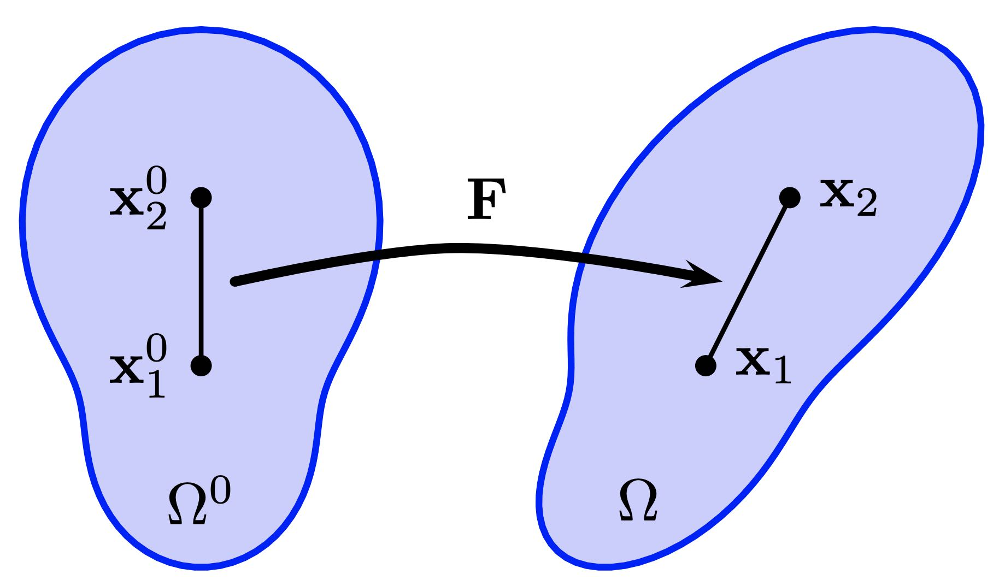
Figure 12.2.1 (Deformation gradient).
Example 12.2.1.
Intuitively, the deformation gradient F indicates the extent of local deformation within a material. Consider two nearby points, x10 and x20, embedded in the material at the start of the simulation (as illustrated in Figure 12.2.1). If x1 and x2 represent these points in the current configuration, the relationship between these points can be expressed as:
(x2−x1)=F(x20−x10).
This equation shows how the deformation gradient transforms the initial distance between the points into their current separation, thus quantifying the local deformation.
The determinant of the deformation gradient F, commonly denoted by J, is crucial because it characterizes the infinitesimal volume change during deformation. This is expressed as J=det(F). The value of J represents the ratio of the infinitesimal volume of the material in the deformed configuration Ωt to its original volume in Ω0. For instance, in rigid motions, which include rotations and translations, F is a rotation matrix and therefore J=1. Notably, the identity matrix, being a rotation matrix, also results in J=1.
If J>1, it indicates a volume increase, whereas J<1 indicates a decrease. A situation where J=0 suggests that the volume has effectively become zero, a scenario that is impossible in the real world but can occur numerically. In 3D, this indicates that the material is compressed to such an extent that it might collapse into a plane, line, or even a point without volume. Conversely, J<0 indicates material inversion. For example, in 2D, if J<0 for a triangle, it implies that one vertex has passed through the opposing edge, effectively 'inverting' the triangle and making its area negative. As seen in the Moving Boundary Conditions section, severe compression of an elastic square can lead to inversions. In such cases, J serves as a direct measure of this artifact and is utilized in many elasticity models to ensure simulations are free from inversions.
Defining the flow map which transforms continuum bodies from the material space (initial configuration) to the world space (current configuration), we introduced a mathematical description of the change in shapes -- the deformation gradient F∈Rd×d (d=2 or 3), which is the Jacobian of the flow map with respect to X.
When F at a certain point on the continuum body is a rotation matrix, it indicates there is no deformation and, consequently, no local elasticity forces should be present. In the next lecture, we will explore how to define more realistic elastic potential energies using the deformation gradient.
With the deformation gradient F serving as a rigorous mathematical measure of local deformation, we can define the elastic potential energy based on F to more accurately capture the elastic behaviors of solids. F is measured at every local point within the solid domain. We would measure the elastic potential locally for each point and then integrate these measurements across the entire domain. This approach mirrors the process used in the 2D Mass Spring case study, where the energy of each spring, weighted by an estimated volume, was summed up in a discrete setting. Here, F is also known as strain, and the elastic potential Pe, referred to as strain energy, is derived from integrating strain energy density functionsΨ(F):Rd×d→R at each material point within the solid domain:
Pe=∫Ω0Ψ(F)dX.
In this lecture, we will explore various design choices of Ψ(F) and examine some of their properties.
As mentioned in the previous lecture, for a solid undergoing only translational and/or rotational motions, no elastic potential energy is stored, and thus no elasticity force is exerted. This implies that any strain energy density functions Ψ(F) have a rigid null space, meaning that Ψ(F) should remain 0 if the input deformation gradient is any rotation matrix R:
Ψ(F)=0∀F=R.
A square matrix F is a rotation matrix if and only if:
FT=F−1andJ≡det(F)=1.
From this definition, a straightforward formulation for Ψ(F) emerges, penalizing any deviation of F from being a rotation matrix with quadratic terms:
Ψ(F)=4μ∥FTF−I∥F2+2λ(J−1)2.(13.1.1)
Here, μ and λ are the stiffness parameters, with the first term derived from right-multiplying F to both sides of FT=F−1. This intuitive formulation closely aligns with how many standard strain energy density functions are constructed.
Definition 13.1.1 (Neo-Hookean Elasticity).
The Neo-Hookean elasticity model is characterized by the following energy density function:
ΨNH(F)=2μ(tr(FTF)−d)−μln(J)+2λln2(J).(13.1.2)
Taking the derivative of ΨNH(F) with respect to F, we obtain:
∂F∂Ψ(F)=μ(F−F−T)+λln(J)F−T.
From this gradient, it is evident that the μ-term achieves a local minimum when F−F−T=0 (i.e., FT=F−1), and for the λ-term, the local minimum occurs at J=1.
Definition 13.1.2 (Lame Parameters).
In standard strain energy density functions, the stiffness parameters μ and λ are known as Lame parameters. These parameters are directly related to the Young's modulusE, which measures resistance to stretching, and the Poisson's ratioν, which measures the incompressibility of the solid:
μ=2(1+ν)E,λ=(1+ν)(1−2ν)Eν.
Definition 13.1.3 (Rotation Invariance).
The energy density function for any nonlinear elastic model is rotation invariant. Mathematically, this is expressed as:
Ψ(F)=Ψ(RF)∀F∈Rd×dandd×drotation matrixR.(13.1.3)
Intuitively, this means that any rotations applied after deformation should not alter the value of the strain energy density function.
However, the simplest strain energy density function, linear elasticity, does not include rigid modes in its null space nor does it satisfy Equation (13.1.3). This is because linear elasticity is specifically designed for infinitesimal strains, where no significant rotations are involved.
Definition 13.1.4 (Linear Elasticity).
Linear elasticity has the energy density function
Ψlin(F)=μ∥ϵ∥F2+2λtr2(ϵ).(13.1.4)
Here ϵ=21(F+FT)−I is the small strain tensor, and we see that Ψlin(F) is a quadratic function of F.
Notably, the linear elasticity model with the corresponding Lame parameters is calibrated to real-world experiments under conditions of small deformations. In such circumstances, all standard strain energy density functions must align with linear elasticity. The consistency between these models and linear elasticity will be concisely demonstrated after we introduce the polar singular value decomposition of F in the next section.
Rotation invariance (Equation (13.1.3)) should not be confused with the isotropic property of certain elastic models.
Definition 13.1.5 (Isotropic Elasticity).
The energy density function of isotropic elastic models satisfies
Ψ(F)=Ψ(FR)∀F∈Rd×dandd×drotation matrixR.(13.1.5)
This implies that the same amount of stretch in any direction results in the same energy change. Consequently, there are no special directions in which the material is harder or easier to deform than others.
Neo-Hookean (Equation (13.1.2)) and our intuitive model (Equation (13.1.1)) are both examples of isotropic models. However, linear elasticity (Equation (13.1.4)) does not meet this condition (Equation (13.1.5)), as it is not designed to handle rotational motions effectively.
For anisotropic elastic models, the resistance to stretch varies depending on the direction. Materials such as cloth, bones, muscles and wood are examples of anisotropic materials, exhibiting different mechanical properties in different directions.
When discussing general slip boundary conditions, we introduced the usage of singular value decomposition (SVD). Here, we apply a variant known as Polar SVD (Algorithm 13.2.1) to decompose F:
F=UΣVT,
where U and V are both d×d rotation matrices, and Σ is a d×d diagonal matrix. Unlike standard SVD, which ensures Σii remains non-negative possibly at the expense of having det(U)=−1 or det(V)=−1, Polar SVD maintains det(U)=1 and det(V)=1, allowing Σii to be negative if necessary.
Polar SVD is named for its relation to Polar decomposition, where F is expressed as RS. This decomposition can be reconstructed via R=UVT and S=VΣVT, with R representing the closest rotation to F and S being symmetric.
Algorithm 13.2.1 (Polar SVD from Standard SVD).
The Polar SVD of F offers a more intuitive way to understand deformation. If we denote σi=Σii, referred to as the principal stretches, we can conceptualize F as comprising a sequence of transformations. Initially, there is a rotation by VT, followed by scaling the dimensions by σi along each axis, and concluding with another rotation by U. This decomposition is applicable for all possible F.
Polar SVD also allows for the more convenient expression of isotropic strain energy density functions using σi exclusively. For instance, our intuitive formulation in Equation (13.1.1) can be reframed as:
Ψ(F)=Ψ^(Σ)=4μi=1∑d(σi2−1)2+2λ(i=1∏dσi−1)2,
where J=∏i=1dσi=σ1⋅σ2⋅…⋅σd. Moreover, the Neo-Hookean strain energy density function (Equation (13.1.2)) can be rewritten as:
These two models are both consistent with linear elasticity under small deformation.
Definition 13.2.1 (Consistency to Linear Elasticity).
To verify the consistency to linear elasticity of a strain energy density function Ψ(F), we just need to check whether the following relations all hold:
Ψ^(I)=0,∂σi∂Ψ^(I)=0,and∂σi∂σj∂2Ψ^(I)=2μδij+λ.
Here 1≤i,j≤d, and δij=1 if i=j, otherwise it is 0.
Definition 13.3.1 (Corotated Linear Elasticity).
To make linear elasticity rotation-aware while maintaining its simplicity, we can introduce a base rotation Rn and construct an energy density function
ΨLC(F)=Ψlin((Rn)TF),
penalizing any deviation between F and this fixed Rn. This is called corotated linear elasticity.
ΨLC(F) remains a quadratic energy with respect to F and is very useful for dynamic simulations. At the beginning of the optimization for each time step n+1, we compute Rn as the closest rotation to Fn:
Rn=argRmin∥Fn−R∥F2s.t.RT=R−1anddet(R)=1.(13.3.1)
As mentioned earlier, the solution is given by the Polar decomposition on Fn, and with Polar SVD Fn=UnΣn(Vn)T, we have Rn=Un(Vn)T. However, corotated linear elasticity is still not rotation invariant, as Rn does not change with F during the optimization. Thus, it is not suitable for large deformations.
For rotation invariant elastic models, practitioners in computer graphics have been simplifying them for visual computing purposes. For example, only keeping a μ-term while ignoring the λ-term in the energy density function for more efficient computations:
ΨR(F)=4μ∥FTF−I∥F2,orΨARAP(F)=μi∑d(σi−1)2,etc.(13.3.2)
Here ΨARAP(F) is called the As-Rigid-As-Possible (ARAP) energy, which is widely used in shape modeling, cloth simulation, and surface parameterization, etc. ΨR(F), while being a higher-order polynomial of F compared to ARAP, can be computed without performing the expensive SVDs on F.
For all the strain energy density functions we have looked at in this lecture, except Neo-Hookean, all others are defined on the whole domain Rd×d. Neo-Hookean energy density function is defined on {F∣F∈Rd×d,det(F)>0}. Just like the barrier energy to prevent interpenetrations in IPC, ΨNH(F) is also a barrier energy, which goes to infinity as det(F) approaches 0, providing arbitrarily large elastic forces to prevent inversion (det(F)≤0).
Strain energy density functions allowing det(F)≤0 are also called invertible elasticity models. They are easy to deal with (no need for line search filtering), but do not guarantee non-inversion. Designing an invertible elastic energy that provides reasonably large resistance to inversion has drawn a lot of attention in computer graphics research [Stomakhin et al. 2012][Smith et al. 2018].
The elastic potential energyPe is an integration of the strain energy density functionΨ(F) at every local point in the solid domain. From the rigid null space, we derived an intuitive formulation of the strain energy density function, similar in structure to standard models like Neo-Hookean. Nonlinear elastic models are also rotation invariant, meaning any rotations applied after the deformation F do not change Ψ.
Linear elasticity features a quadratic energy density function and is specifically designed for infinitesimal strainsϵ, lacking rigid modes in its null space. Yet, with the corresponding Lame Parametersμ and λ, it can accurately capture behaviors of small deformations observed in the real world. Standard elasticity models are required to be consistent with linear elasticity under small deformations.
This lecture focused on isotropic elasticity, where no special directions exist that make the material harder or easier to deform. Performing Polar SVD on F=UΣV allows us to rewrite Ψ(F) of isotropic models using only principal stretchesσi=Σii.
Using the closest rotationRn=Un(Vn)T to Fn in the last time step, we constructed a corotated linear elasticity to make linear elasticity rotation-aware while maintaining its simplicity. Simplifying further by retaining only the μ-term enhances efficiency for visual computing.
Similar to how non-interpenetrations are enforced in IPC, the energy density function of Neo-Hookean acts as a barrier function, ensuring non-inversion (det(F)>0). All other elasticity models introduced in this lecture are invertible, and they do not guarantee non-inversion.
In the next lecture, we will explore the derivatives of Ψ(F) with respect to F.
Having introduced standard strain energies, we now proceed to their differentiation with respect to the world space coordinates, x, to simulate realistic elastic behaviors. However, it's important to first establish the explicit relationship between these coordinates x and the deformation gradient F. This relationship heavily depends on specific discretization choices.
Before we explore discretization in depth, we should understand how to compute the derivatives of the strain energy function, Ψ, with respect to F. These derivatives are fundamentally linked to the concept of stress, a critical element in understanding material behavior under deformation.
Stress is a tensor field, akin to the deformation gradient F, and is defined over the entire domain of solid materials. It quantifies the internal pressures and tensions experienced by a material object. The link between stress and strain (or F) is established through what is known as a constitutive relationship. This relationship outlines how materials respond to various deformations.
A common example of a constitutive relationship is Hooke's law in one dimension, which applies to many conventional materials under elastic conditions. In the context of hyperelastic materials, the relationship is specifically defined by the strain energy function, Ψ(F).
Definition 14.1.1 (Hyperelastic Materials).
Hyperelastic materials are those elastic solids whose first Piola-Kirchhoff stressP
can be derived from a strain energy density function Ψ(F) via
P=∂F∂Ψ.(14.1.1)
With index notation, this means
Pij=∂Fij∂Ψ.P is discretely a small matrix with the same dimensions as F.
In the study of material behavior under stress, various definitions are utilized, with Cauchy stress being particularly prevalent in engineering contexts. Cauchy stress, denoted as σ(⋅,t):Ωt→Rd×d, can be mathematically linked to the first Piola-Kirchhoff stress tensor P through the relationship:
σ=J1PFT=det(F)1∂F∂ΨFT.
Calculating P from the strain energy function Ψ(F) is relatively straightforward for energy models that do not require singular value decomposition (SVD), such as the Neo-Hookean model. However, general isotropic elasticity models, like ARAP (As-Rigid-As-Possible), often rely on the computation of principal stretches or the closest rotation matrix, necessitating SVD. This computation becomes particularly complex and resource-intensive when determining ∂F∂P, which is crucial for implicit time integrations.
We present an efficient method that leverages the sparsity structure, as introduced by [Stomakhin et al. 2012], to compute the first Piola-Kirchhoff stress tensor P and its derivative ∂F∂P (whether as a tensor or the differential δP) for general isotropic elastic materials. This approach utilizes symbolic software packages, and we will specifically discuss the implementation in Mathematica. Implementations in Maple or other software are similarly straightforward, following the same conceptual framework. For a deeper exploration of derivative computations commonly employed in computer graphics, refer to the work of [Schroeder 2022].
It is important to note that the computational strategy discussed can also be applied to other derivatives in diagonal space, similar to ∂F∂P. For instance, in certain models, the Kirchhoff stressτ is preferred over the first Piola-Kirchhoff stress P. The Kirchhoff stress is expressed as:
τ=Uτ^UT,
where τ^ is a diagonal stress measure, with each entry being a function of the singular values Σ. The methodology for computing ∂F∂τ mirrors that of P.
Let's begin with the computation of P. For isotropic materials, the first Piola-Kirchhoff stress tensor can be calculated as follows:
PwhereF=UP^VT=UΣVT,Ψ(F)=Ψ^(Σ),andP^ij=∂σi∂Ψ^δij.(14.2.1)
This formulation leverages the property that P shares the same SVD space as F, which simplifies the derivation and computation process.
Example 14.2.1.
For the Neo-Hookean model (Equation (13.1.2)), we have:
Ψ^NH(Σ)=2μ(i∑dσi2−d)−μln(J)+2λln2(J).
Thus, we can first perform SVD on F=UΣV and derive:
P^ii=μ(σi−σi1)+λln(J)σi1
to compute ∂F∂Ψ=P=UP^VT without symbolically deriving the derivative of Ψ w.r.t. F.
Here we provide the proof that P commutes with rotations in diagonal space (see Equation (14.2.1)). To demonstrate that P(RF)=RP(F) for any rotation matrix R, consider a generic (potentially anisotropic) material model. The key idea is that a rotation applied after deformation does not alter the material's stored energy, thus we have the identity Ψ(F)=Ψ(RF). Differentiating both sides of this equation with respect to the deformation gradient F yields:
Furthermore, for an isotropic material where Ψ(FR)=Ψ(F), a similar argument shows that P(FR)=P(F)R. Combining these relationships for P under rotation, we establish that:
P(F)=P(UΣVT)=UP(Σ)VT=UP^VT.
This formulation confirms the rotational invariance of P in diagonal space.
In the above, the last equality comes from the fact that
P(F=Σ)=∂Σ∂Ψ^.
Here we show why this is true.
(1) First, we claim that P(Σ) is diagonal. This can be seen by realizing that for isotropic elasticity,
P(F)=k∑∂Ik∂Ψ(F)∂F∂Ik(F),
where Ik is the isotropic invariants. Following [Sifakis & Barbic 2022] (page 23), we can observe that ∂F∂Ik(F) when the argument F is diagonal, must be diagonal. Therefore, P(F) is diagonal when F is diagonal.
(2) Next, we claim that
diag(∂Fij∂Σ)=diag(UT∂Fij∂FF).
This is proven in [Xu et al. 2015] (Equation 7).
(3) Based on (2), we know that for any ij, after substituting F=Σ, we have
diag(∂Fij∂Σ(Σ))=diag(IT∂Fij∂F(Σ)I),
using this we can write out the cases for ij=11,ij=22,ij=33. For example, for ij=11, we have
∂F11∂Σ(Σ)=1∗∗∗0∗∗∗0
(4) Finally, let's derive P(Σ). Since we know it is diagonal from (1), we just need to derive its diagonal entry. Let's use 11 entry as an example:
Pab(Σ)P11(Σ)P11(Σ)=∂Fab∂Ψ^(Σ)=∂Σ∂Ψ^(Σ):∂Fab∂Σ(Σ)=∂Σ∂Ψ^(Σ):∂F11∂Σ(Σ)=∂σ1∂Ψ^∂σ1∂Ψ^∂σ1∂Ψ^:1∗∗∗0∗∗∗0=∂σ1∂Ψ^
Now are are done with the final proof.
To compute the derivative of P with respect to F, we leverage the rotational invariance property discussed earlier for P. Consider two arbitrary rotation matrices R and Q. From the rotational properties of P, we have:
P(F)=P(RRTFQQT)=RP(RTFQ)QT.
Define K=RTFQ, then:
P(F)=RP(K)QT.
Taking the differential of P, while treating R and Q as constants, gives:
δP=R[∂F∂P(K):δ(K)]QT=R[∂F∂P(K):(RTδFQ)]QT.
By setting R=U and Q=V, where K=Σ, the differential expression simplifies to:
δP=U[∂F∂P(Σ):(UTδFV)]VT.
The tensorial derivative ∂P/∂F is then expressed in index notation as:
These expressions must hold for any δF, leading to the relationship:
(∂F∂P(F))ijrs=(∂F∂P(Σ))klmnUikUrmVsnVjl.
So the remaining task is computing ∂F∂P(Σ). We show how to do it in 3D.
First, let's introduce Rodrigues' rotation formula, which provides a method for expressing any rotation matrix in terms of a unit vector k and a rotation angle θ. The formula is given by:
R=I+sin(θ)K+(1−cos(θ))K2,(14.3.1)
where K is the skew-symmetric cross-product matrix associated with k. This formula shows that any rotation matrix is characterized by just three degrees of freedom, denoted as r1,r2,r3. These components are used to define the rotation vector r, from which k and θ are derived as follows:
k=∣r∣r,θ=∣r∣.
Using this parameterization, rotation matrices U and V can each be described by three parameters.
Now we have the following code for defining F in terms of
s1, s2, s3, u1, u2, u3, v1, v2, v3, where U and V are defined by ui and vi with
Rodrigues' rotation formula, si are the singular values from Σ.
where cp is a function for generating the cross-product matrix (corresponding to computing
K in Equation (14.3.1)).
From now on, we write the 3×3×3×3 tensor
∂F∂P(Σ) and any other such tensors to 9×9 matrices.
That means each 3×3 matrix is now a size-9 vector. It is easy to see the old
∂Fkl∂Pij is now
∂F3(k−1)+l∂P3(i−1)+j. We further call vector S={s1,s2,s3,u1,u2,u3,v1,v2,v3} being the parametrization of
F. Then we can apply the chain rule
∂F∂P(Σ)=∂S∂P(Σ)∂F∂S(Σ)
Here are the Mathematica code for computing them. Note that we achieve F=Σ by taking the limit {u1,u2,u3,v1,v2,v3}=+ϵ, which
correspond to nearly zero rotations.
Note 'Direction->-1' in Mathematica means taking the limit from large values to the small
limit value. The Mathematica computation result will be given in terms of the singular
values and P^. One can then take the formula for implementing them in the code.
[Stomakhin et al. 2012] gives the result where ∂F∂P(Σ) (size 9×9 matrix) is permuted to be a block diagonal matrix with diagonal blocks A3×3,B122×2,B132×2,B232×2, where
A=Ψ^,σ1σ1Ψ^,σ2σ1Ψ^,σ3σ1Ψ^,σ1σ2Ψ^,σ2σ2Ψ^,σ3σ2Ψ^,σ1σ3Ψ^,σ2σ3Ψ^,σ3σ3
and
Bij=σi2−σj21(σiΨ^,σi−σjΨ^,σjσjΨ^,σi−σiΨ^,σjσjΨ^,σi−σiΨ^,σjσiΨ^,σi−σjΨ^,σj).
Denominator clamping is needed for terms in B that may introduce division-by-zero (after fully simplifying them).
Here we denote ∂σi∂Ψ^ and ∂σi∂σj∂2Ψ^ as Ψ^,σi and Ψ^,σiσj respectively.
The division by σi2−σj2 is problematic when two singular values are nearly equal or when two singular
values nearly sum to zero. The latter is possible with a convention for permitting negative singular values (as in invertible elasticity [Irving et al. 2004][Stomakhin et al. 2012]).
Expanding Bij in terms of partial fractions yields the useful decomposition
Bij=21σi−σjΨ^,σi−Ψ^,σj(1111)+21σi+σjΨ^,σi+Ψ^,σj(1−1−11).
Note that if Ψ^ is invariant under permutation of the singular values, then Ψ^,σi→Ψ^,σj as
σi→σj. Thus,
the first term can normally be computed robustly for an isotropic model if implemented carefully. The other
fraction can be computed robustly if Ψ^,σi+Ψ^,σj→0 as
σi+σj→0.
But this usually does not hold as it means the constitutive model will have difficulty recovering from degenerate or
inverted configurations. Thus, this term will be unbounded under some circumstances.
We address this by clamping the magnitude of the denominator to not be smaller than 10−6 before division to bound the derivatives.
For 2D, a rotation matrix is now simply
paremetrized with a single θ where the reconstruction is
R=(cosθsinθ−sinθcosθ).
The 2D version of the whole Mathematica code is
Stress is a tensor field that quantifies the pressure or tension exerted on a material object. In the context of hyperelastic materials, the first Piola-Kirchhoff stress tensorP plays a crucial role. It is defined as the derivative of the strain energy density function Ψ, with respect to the deformation gradient F, establishing a constitutive relationship between stress and strain.
In practical computations, particularly for the implicit integration of solid dynamics, it is essential to compute P and its derivative ∂F∂P efficiently. By leveraging the sparsity structure in diagonal space, these computations become more feasible. Here, differentiations are primarily required for Ψ with respect to the principal stretches σi, which simplifies the calculation process.
In the upcoming lecture, we will apply these principles to an inversion-free elasticity model, which will be demonstrated through the compressing square simulation. This application will use the concepts discussed in this chapter to address complex real-world problems in solid mechanics.
At the end of this chapter, we implement the Neo-Hookean model introduced in the previous lectures to simulate inversion-free elastic solids.
The excutable Python project for this section can be found at https://github.com/phys-sim-book/solid-sim-tutorial under the 6_inv_free folder.
Instead of discretizing elasticity onto the springs as in the mass-spring model, we discretize the Neo-Hookean model onto triangle elements, apply chain rules to compute elastic forces according to the relation between deformation gradient F and world-space nodal position x, and then develop a root-finding based approach to filter the initial step size of line search for guaranteed non-inversion.
In previous discussions, we learned to calculate Ψ and its derivatives with respect to F. For simulation, however, we require ∂x∂Ψ and ∂x2∂2Ψ. This necessitates a clear understanding of F(x), as it allows us to employ the chain rule to derive these derivatives with respect to x effectively.
In 2D simulations, we often divide the solid domain into non-degenerate triangular elements. Assume the mapping x=ϕ(X) is linear within each triangle, thus keeping the deformation gradient F constant. Referencing Example 12.2.1, for a triangle defined by vertices X1X2X3, we have the equations:
x2−x1=F(X2−X1)andx3−x1=F(X3−X1),
where xi denotes the world-space coordinates of the triangle vertices. This relationship leads to the expression for F:
F=[x2−x1,x3−x1][X2−X1,X3−X1]−1.(15.1.1)
Equation (15.1.1) shows that F, derived here, maps any segment within the triangle to its world-space counterpart through linear combinations of the triangle edges X2−X1 and X3−X1. A more general and rigorous derivation of this formula will be presented in subsequent chapters.
Once F(x) is established, we can calculate its derivative with respect to x for each triangle as follows:
∂[x1T,x2T,x3T]T∂[F11,F21,F12,F22]T=−B11−B210−B12−B2200−B11−B210−B12−B22B110B1200B110B12B210B2200B210B22,
where B=[X2−X1,X3−X1]−1 represents the inverse of the matrix formed by subtracting the first vertex from the second and third vertices. This matrix B can be precomputed at initialization along with other properties such as the volume and Lame parameters of each triangle:
Implementation 15.1.1 (Precomputation of element information, simulator.py).
E = 1e5 # Young's modulus
nu = 0.4 # Poisson's ratio
Here, e no longer stores all edge elements as in mass-spring models but represents all triangle elements, which can be generated by modifying the meshing code as follows:
Finally, Neo-Hookean energy value, gradient, and Hessian on the entire mesh can be computed as follows:
Implementation 15.2.3 (Energy value, Gradient, and Hessian, NeoHookeanEnergy.py).
def val(x, e, vol, IB, mu, lam):
sum = 0.0
for i in range(0, len(e)):
F = deformation_grad(x, e[i], IB[i])
sum += vol[i] * Psi(F, mu[i], lam[i])
return sum
def grad(x, e, vol, IB, mu, lam):
g = np.array([[0.0, 0.0]] * len(x))
for i in range(0, len(e)):
F = deformation_grad(x, e[i], IB[i])
P = vol[i] * dPsi_div_dF(F, mu[i], lam[i])
g_local = dPsi_div_dx(P, IB[i])
for j in range(0, 3):
g[e[i][j]] += g_local[j]
return g
def hess(x, e, vol, IB, mu, lam):
IJV = [[0] * (len(e) * 36), [0] * (len(e) * 36), np.array([0.0] * (len(e) * 36))]
for i in range(0, len(e)):
F = deformation_grad(x, e[i], IB[i])
dP_div_dF = vol[i] * d2Psi_div_dF2(F, mu[i], lam[i])
local_hess = d2Psi_div_dx2(dP_div_dF, IB[i])
for xI in range(0, 3):
for xJ in range(0, 3):
for dI in range(0, 2):
for dJ in range(0, 2):
ind = i * 36 + (xI * 3 + xJ) * 4 + dI * 2 + dJ
IJV[0][ind] = e[i][xI] * 2 + dI
IJV[1][ind] = e[i][xJ] * 2 + dJ
IJV[2][ind] = local_hess[xI * 2 + dI, xJ * 2 + dJ]
return IJV
To guarantee non-inversion just like non-interpenetration (see Filter Line Search) during the simulation, we can similarly filter the line search initial step size with a critical step size αI that first brings the volume of any triangles to 0. This can be obtained by solving a 1D equation per triangle:
V(xi+αIpi)=0,(15.3.1)
and taking the minimum of the solved step sizes. Here pi is the search direction of node i, and in 2D, Equation (15.3.1) is equivalent to:
det([x21α,x31α])≡x21,1αx31,2α−x21,2αx31,1α=0(15.3.2)
with xijα=xij+αIpij and xij=xi−xj, pij=pi−pj. Expanding Equation (15.3.2) we obtain:
(x21,1+αIp21,1)(x31,2+αIp31,2)−(x21,2+αIp21,2)(x31,1+αIp31,1)=0,
which can be reorganized as a quadratic equation of αI:
det([p21,p31])(αI)2+(det([x21,p31])+det([p21,x31]))αI+det([x21,x31])=0.
Here, note that det([p21,p31]) can be very tiny when the nodes do not move much or when their movement barely changes to triangle area in the current timestep, thus the equation can be degenerated into a linear one. To robustly detect this degenerate case, we cannot directly check whether det([p21,p31]) is 0 due to numerical errors. In fact, checking whether det([p21,p31]) is below an epsilon is still tricky, because the scale of det([p21,p31]) heavily depends on the scene dimension and nodal velocity during the simulation. Therefore, we use det([x21,x31]) as a scaling and obtain a scaled but equivalent equation:
det([x21,x31])det([p21,p31])(αI)2+det([x21,x31])det([x21,p31])+det([p21,x31])αI+1=0,(15.3.3)
where magnitude checks can be safely performed on any coefficients with unitless thresholds.
In practice, we also need to allow some slackness so that the step size to be taken will not lead to an exactly 0 volume. Thus, we solve αI such that it first decreases the volume of any triangles by 90%, which can be realized by modifying the constant term coefficient in Equation (15.3.3) from 1 to 0.9:
Implementation 15.3.1 (Filter line search, NeoHookeanEnergy.py).
def init_step_size(x, e, p):
alpha = 1
for i in range(0, len(e)):
x21 = x[e[i][1]] - x[e[i][0]]
x31 = x[e[i][2]] - x[e[i][0]]
p21 = p[e[i][1]] - p[e[i][0]]
p31 = p[e[i][2]] - p[e[i][0]]
detT = np.linalg.det(np.transpose([x21, x31]))
a = np.linalg.det(np.transpose([p21, p31])) / detT
b = (np.linalg.det(np.transpose([x21, p31])) + np.linalg.det(np.transpose([p21, x31]))) / detT
c = 0.9 # solve for alpha that first brings the new volume to 0.1x the old volume for slackness
critical_alpha = utils.smallest_positive_real_root_quad(a, b, c)
if critical_alpha > 0:
alpha = min(alpha, critical_alpha)
return alpha
Here, if the equation does not have a positive real root, that means for this specific triangle, the step size can be taken arbitrarily large and it will not trigger inversion.
def smallest_positive_real_root_quad(a, b, c, tol = 1e-6):
# return negative value if no positive real root is found
t = 0
if abs(a) <= tol:
if abs(b) <= tol: # f(x) = c > 0 for all x
t = -1
else:
t = -c / b
else:
desc = b * b - 4 * a * c
if desc > 0:
t = (-b - math.sqrt(desc)) / (2 * a)
if t < 0:
t = (-b + math.sqrt(desc)) / (2 * a)
else: # desv<0 ==> imag, f(x) > 0 for all x > 0
t = -1
return t
With scaled coefficients, we simply use a unitless threshold, e.g. \code{1e-6}, to check for degeneracies. If no positive real roots are found, the function simply returns −1.
Now as we filter the initial step size in addition to non-interpenetration:
alpha = min(BarrierEnergy.init_step_size(x, n, o, p), NeoHookeanEnergy.init_step_size(x, e, p)) # avoid interpenetration, tunneling, and inversion
and make sure all added data structures and modified functions are reflected in the time integrator, we can finally simulate the compressing square example from Moving Boundary Condition with guaranteed non-inversion (see Figure 15.3.1).
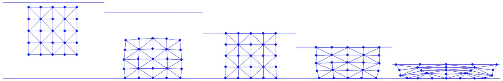
Figure 15.3.1. A square is dropped onto the ground and compressed severely by a ceiling while maintaining inversion-free throughout the simulation. The ground has friction coefficient 0.11 so that the bottom of the square slides less than the top, where the ceiling has no friction.
We have successfully implemented an inversion-free 2D elasticity simulation by discretizing the Neo-Hookean model using linear triangle elements.
By maintaining a linearly varying displacement field within each triangle, we can directly calculate a constant deformation gradient F for each triangle using both the material and world space coordinates of the vertices. This foundational setup facilitates the computation of the Neo-Hookean energy, as well as its gradient and Hessian with respect to x, by applying the chain rule. These calculations are essential for the optimization-based time integration discussed in previous lectures.
To ensure the simulation remains free of both interpenetration and inversion, we adopt a similar strategy as previously described: the initial step size in the line search is determined by solving a quadratic equation for each triangle. This equation calculates a critical step size that reduces the triangle's volume by 90%. The smallest of these critical step sizes across all triangles is then used to initialize the line search, ensuring robustness against both non-interpenetration and non-inversion.
In the upcoming chapter, we will delve into the derivation of the governing equations for hyperelastic solids, providing a detailed explanation of each step to further solidify understanding.
The update rules (refer to Equation (1.5.1)) and the corresponding optimization problems (refer to Equation (2.1.1)) utilized in solids simulation are derived by discretizing the conservation laws—our governing equations—from their continuous forms. This chapter will explore the derivation of both the strong and weak forms of these conservation laws. We will then discuss the methods for their temporal and spatial discretizations, which are essential for formulating the discrete problems we aim to solve.
The fundamental governing equations central to our study are the conservation of mass and the conservation of momentum (Newton's Second Law). We will outline these equations below and provide detailed derivations later in this lecture.
Definition 16.1 (Strong Form).
Letting V(X,t)=∂t∂ϕ(X,t)=∂t∂x(X,t) be the velocity defined over X, the equations are [Gonzalez & Stuart 2008]:
R(X,t)J(X,t)=R(X,0)R(X,0)∂t∂V(X,t)=∇X⋅P(X,t)+R(X,0)gConservation of mass,Conservation of momentum,
where X∈Ω0 and t≥0. Here R is the mass density, J(X,t)=detF(X,t), P is the first Piola-Kirchoff stress, and g is the constant gravitational acceleration. Note that J(X,0)=1, and the mass conservation can also be written as
∂t∂(R(X,t)J(X,t))=0.
These equations are initially presented in their strong form. In this lecture, we will also derive the equivalent weak form of the force balance equation (conservation of momentum). The weak form reformulates the conservation law using integral expressions, which are crucial for the subsequent derivation of the temporal and spatial discretizations of the equations using the Finite Element Method.
We can think of the mass density R(X,t) to be naturally defined over Ω0 as
R(X,t)=ϵ→+0limvolume(Bϵt)mass(Bϵt)=ϵ→+0lim∫Bϵtdxmass(Bϵt)(16.1.1)
where Bϵt is the world space counterpart of Bϵ0 (the ball of radius ϵ surrounding an arbitrary X∈Ω0).
This is arguably a natural definition since mass(Bϵt) should be a measurable quantity. Conservation of mass can be expressed as
mass(Bϵt)=mass(Bϵ0),∀Bϵ0⊂Ω0andt≥0.(16.1.2)
Now, with a change of variables, we have ∫Bϵtdx=∫Bϵ0J(X,t)dX, so Equation (16.1.1) becomes
R(X,t)=ϵ→+0lim∫Bϵ0J(X,t)dXmass(Bϵt),(16.1.3)
and so
R(X,0)=ϵ→+0lim∫Bϵ0dXmass(Bϵ0)(16.1.4)
since J(X,0)=1.
Then combining Equations (16.1.2), (16.1.3), and (16.1.4), we can express the conservation of mass as
∫Bϵ0R(X,t)J(X,t)dX=∫Bϵ0R(X,0)dX,∀Bϵ0⊂Ω0andt≥0.
This just says that the mass in Bϵt (as expressed via an integral of the mass density) should not change with time. This set is associated with a subset of the material at time t and as it evolves in the flow, the material will take up more or less space, but there will always be the same amount (mass) of material in the set. Since Bϵ0 is arbitrary, it must be true that
R(X,t)J(X,t)=R(X,0),∀X∈Ω0andt≥0.
Remark 16.1.1 (Lagrangian and Eulerian Views).
In simulation methods that discretize and track materials directly based on Ω0, conservation of mass is inherently satisfied. For instance, in our Finite Element Method (FEM) simulator, Ω0 is segmented into triangles, with the mass of each triangle remaining constant regardless of deformation throughout the simulation. This approach is known as the Lagrangian method. In contrast, Eulerian methods discretize and evolve physical quantities based on Ωt and often need to specially deal with mass conservation.
In the continuous setting, forces are categorized into body forces (also known as external forces, such as gravity) and surface forces (or internal forces, typically stress-based, like those arising from elasticity). We define stress-based forces through a traction field, whose existence is assumed. The traction, or force per unit area, is represented by the field T(⋅,N,t):Ω0→Rd and is defined by the equation:
forceS(Bϵ0)=∫∂Bϵ0T(X,N(X))ds(X),
where N represents the outward-pointing normal direction in the material space. Here, forceS(Bϵ0) denotes the net force exerted from the material outside ∂Bϵ0 on the material inside Bϵ0 through their interface. The function T(X,N,t) quantifies the force per unit area (d=3) or length (d=2) that material on the N+ side exerts at point X on material on the N− side.
It can be shown that this implies the existence of a stress field (first Piola-Kirchoff stress) P(⋅,t):Ω0→Rd×d with:
T(X,N,t)=P(X,t)N.
Then, by applying Newton's second law on Bϵ0, we can express the conservation of momentum as:
=∫Bϵ0R(X,0)∂t∂V(X,t)dX∫∂Bϵ0P(X,t)N(X)ds(X)+∫Bϵ0R(X,0)Aext(X,t)dX,(16.2.1)
for all Bϵ0⊂Ω0 and t≥0.
Applying the divergence theorem, we can transform the boundary integral in Equation (16.2.1) into a volume integral and obtain:
=∫Bϵ0R(X,0)∂t∂V(X,t)dX∫Bϵ0∇X⋅P(X,t)dX+∫Bϵ0R(X,0)Aext(X,t)dX,(16.2.2)
for all Bϵ0⊂Ω0 and t≥0.
Definition 16.2.1 (Divergence Theorem for Vectors).
For a vector-valued function f(x):Ω→Rd defined on a closed domain Ω, let n(x) be the outward-pointing normal on the boundary of this domain, the following equality holds:
∫∂Ωf⋅nds(x)=∫Ω∇⋅fdx.
This theorem allows us to conveniently transform between boundary and volume integrals.
Here the divergence operator ∇⋅ acts on every row vector of P independently and results in a column vector: (∇X⋅P)i=∑jPij,j. Since Equation (16.2.2) also holds for arbitrary Bϵ0, we arrive at the strong form of the force balance equation by removing the integration:
R(X,0)∂t∂V(X,t)=∇X⋅P(X,t)+R(X,0)Aext(X,t),∀X∈Ω0andt≥0.(16.2.3)
Remark 16.2.1 (Momentum Conservation in Solid Simulation).
Conservation of momentum is the primary governing equation we use to simulate solids. As discussed previously, both the acceleration, denoted by ∂t∂V(X,t), and the internal force, expressed as ∇X⋅P(X,t), can be described using world space coordinates x. With all other relevant quantities established, we incrementally solve for x to get dynamic motions step by step.
First, since the external force term R(X,0)Aext(X,t) resembles a lot to the time derivative of the momentum on the left-hand side, we will ignore it during the derivation for simplicity.
Then, for an arbitrary test function Q(⋅,t):Ω0→Rd, let's compute the dot product to both sides of Equation (16.2.3) and integrate over Ω0 to generate the weak form:
=∫Ω0R(X,0)Q(X,t)⋅A(X,t)dX∫Ω0Q(X,t)⋅(∇X⋅P(X,t))dX,∀Q(⋅,t):Ω0→Rdandt≥0.(16.3.1)
Here we denote A(X,t)=∂t∂V(X,t). Without going into details on finite element analysis, we claim that the weak form is sufficiently equivalent to the strong form since Equation (16.3.1) is required to hold for arbitrary Q(⋅,t), and solving the weak form provides us a solution that is a "good enough" soution to the original problem.
With index notation where Ai means the i-th component of vector-valued function A:Ω0→Rd, and Ai,j means ∂Xj∂Ai, we can rewrite Equation (16.3.1) as
∫Ω0R(X,0)i∑Qi(X,t)Ai(X,t)dX=∫Ω0i∑Qi(X,t)j∑Pij,j(X,t)dX.(16.3.2)
If we further omit the summation symbol and let the repetitive subscripts represent summation (this is known as Einstein notation), we obtain
∫Ω0R(X,0)Qi(X,t)Ai(X,t)dX=∫Ω0Qi(X,t)Pij,j(X,t)dX.(16.3.3)
Now applying Integration By Parts on the right-hand side, we can rewrite Equation (16.3.3) as
∫Ω0R(X,0)Qi(X,t)Ai(X,t)dX=∫Ω0(∇⋅(Qi(X,t)Pi(X,t))−∇Qi(X,t)⋅Pi(X,t))dX=∫Ω0((Qi(X,t)Pij(X,t)),j−Qi,j(X,t)Pij(X,t))dX.(16.3.4)
Definition 16.3.1 (Integration By Parts).
For a scalar-valued function u(x) and a vector-valued function (vector field) V(x), the product rule for divergence states that:
∇⋅(u(x)V(x))=u(x)∇⋅V(x)+∇u(x)⋅V(x).
Integrating both sides on domain Ω then gives:
∫Ω∇⋅(u(x)V(x))dx=∫Ωu(x)∇⋅V(x)dx+∫Ω∇u(x)⋅V(x)dx.
Then if we further apply the divergence theorem on the first part of the right-hand side of Equation (16.3.4), we obtain
∫Ω0R(X,0)Qi(X,t)Ai(X,t)dX=∫∂Ω0Qi(X,t)Pij(X,t)Nj(X)ds(X)−∫Ω0Qi,j(X,t)Pij(X,t)dX.(16.3.5)
The quantity PijNj would be specified as a boundary condition. If we let T(X,t) be the boundary force per unit reference area (traction) with Ti=PijNj, then we can say that the conservation of momentum implies that ∀Q(⋅,t):Ω0→Rd∫Ω0R(X,0)Qi(X,t)Ai(X,t)dX=∫∂Ω0Qi(X,t)Ti(X,t)ds(X)−∫Ω0Qi,j(X,t)Pij(X,t)dX.(16.3.6)
This is momentum conservation's weak form written in Ω0.
Remark 16.3.1 (Why Weak Form).
In finite element method (FEM) for solids, conservation of momentum is formulated in the weak form rather than directly discretizing the strong form due to specific advantages. The strong form requires the displacement field and its derivatives to be continuously differentiable across the entire domain, which is difficult to achieve in practical scenarios involving complex geometries or material discontinuities. On the other hand, the weak form only requires the displacement field itself to be continuous, relaxing the need for continuous derivatives. This makes the weak form more adaptable to irregular mesh geometries and better suited for incorporating boundary conditions and handling interface problems. The weak form's integration-based approach reduces the sensitivity to local irregularities, making it more stable and robust for numerical computation in solid mechanics. Thus, while the strong form provides a direct representation of physical laws, its direct discretization is less practical for the computational demands and complexities typical in FEM analyses.
In this lecture, we derived the strong forms of the governing equations—conservation of mass and conservation of momentum—focusing on an infinitesimal region within the simulation domain. The conservation of momentum equation was transformed from surface to volume integrals using the divergence theorem.
For Lagrangian simulation methods, such as FEM solid simulation, which discretize and monitor physical quantities based on the material space Ω0, the conservation of mass is inherently maintained. We then progressed to deriving the weak form of conservation of momentum. This involved integrating the dot product between the momentum terms and an arbitrary test function. The weak form is effectively equivalent to the strong form because the integral equation must satisfy any arbitrary test function. Techniques such as integration by parts and the application of the divergence theorem were essential in this derivation.
In our next lecture, we will discretize the weak form both temporally and spatially, further refining our approach to solve the discrete problems examined in our case studies.
In this lecture, we will discretize the weak form of the momentum conservation equation (temporarily ignoring body forces) in both space and time to reach the discrete form—a system of equations introduced in the first lecture.
We will begin by focusing on a specific point in time, t=tn. From the weak form of the momentum conservation equation (Equation (16.3.6)), we have:
∫Ω0R0(X)Qin(X)Ain(X)dX=∫∂Ω0Qin(X)Tin(X)ds(X)−∫Ω0Qi,jn(X)Pijn(X)dX,(17.1)
for arbitrary Qn(X), where the superscript n denotes quantities measured at t=tn. Here:
R and T are specified by the simulation setup,
P can be calculated from the degrees of freedom x via a constitutive law,
A=∂t2∂2x is the second-order time derivative of x, and
To enable numerical evaluation of the integrals in the weak form, the first step is to discretize the smooth vector fields x and Q. This allows them to be represented by a finite set of samples, along with appropriate interpolation functions.
Example 17.1.1 (1D Function Interpolation).
In 1D, to approximate a function f(x) using three sample points x1=1, x2=2, x3=3 (Figure 17.1.1), we can use interpolation functions Ni(x)=1−∣x−xi∣ and form f(x)≈∑if(xi)Ni(x).
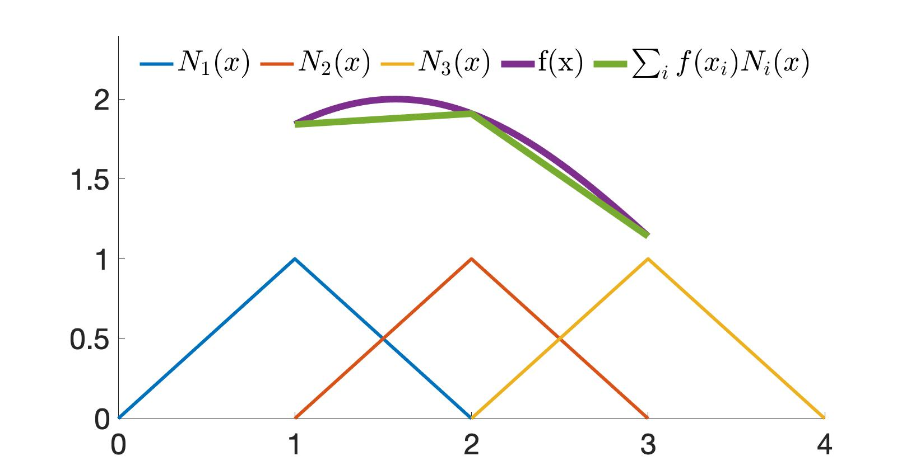
Figure 17.1.1. With interpolation functions N1(x), N2(x), N3(x) and sample points x1=1, x2=2, x3=3, a function f(x) can be approximated as ∑if(xi)Ni(x).
Given a set of sample points indexed by a or b in the simulation domain, we can approximate the test function Q and the DOF x as:
Qi(X,tn)xi(X,tn)≈a∑Qa∣i(tn)Na(X)=a∑Qa∣inNa(X),≈b∑xb∣i(tn)Nb(X)=b∑xb∣inNb(X),
where Qa∣in=Qa∣i(tn) refers to the i-th dimension of Q evaluated at sample point a at time tn, and Na(X):Ω0→R is the interpolation function at sample point a. In this way, we similarly have:
Ai(X,tn)≈b∑Ab∣i(tn)Nb(X)=b∑Ab∣inNb(X).(17.1.1)
Plugging these discretizations into the weak form (Equation (17.1)) and expressing summations with the index notation, we obtain:
∫Ω0R(X,0)Qa∣inNa(X)Ab∣inNb(X)dX=∫∂Ω0Qa∣inNa(X)Ti(X,tn)ds(X)−∫Ω0Qa∣inNa,j(X)Pij(X,tn)dX.
On the left-hand side, we see that the sample values Qa∣in and Ab∣in are in fact independent of X, so we can move them out of the integral and obtain:
MabQa∣inAb∣in=∫∂Ω0Qa∣inNa(X)Ti(X,tn)ds(X)−∫Ω0Qa∣inNa,j(X)Pij(X,tn)dX
where
Mab=∫Ω0R(X,0)Na(X)Nb(X)dX(17.1.2)
is the mass matrix.
Remark 17.1.1 (Mass Matrix Properties).
The mass matrix M (Equation (17.1.2)) is symmetric and positive semi-definite because it can be expressed as:
∫Ω0BBTdX,
where Bi=R(X,0)Ni(X). Thus, for any vector z,
zTMz=∫Ω0(zTB)2dX≥0.
In practice, this mass matrix may be singular. To address this, we typically use a "mass lumping" strategy to approximate the mass matrix with a diagonal and positive definite form. This is achieved by summing each row and defining:
Mablump=δabc∑Mac.
After spatial discretization, the solution of the weak form (Equation (17.1)) is confined to dn-dimensional function spaces, where n represents the number of sample points, assuming all interpolation functions are mutually orthogonal. This means that there could be continuous solutions to the weak form outside of our solution space. In such cases, we can only provide an approximate solution based on the chosen sample points and interpolation functions.
Definition 17.1.1 (Orthogonal Functions).
Similar to the orthogonality of two vectors a and b, defined as aTb=0, the orthogonality of two functions f(x) and g(x) is defined as:
∫f(x)g(x)dx=0.
Just as a basis of vectors can span a finite-dimensional space, orthogonal functions can form an infinite basis for a function space. Conceptually, the integral above is analogous to a vector dot product.
That being said, to generate equations solvable for the unknowns, the arbitrary test function Q does not need to cover all possibilities to produce an infinite number of equations. Instead, we only need to produce a finite set of equations that spans the entire solution space. Therefore, for a^ traversing all sample points, and i^=1,2,…,d, we can assign the test function:
Qa∣in={1,0,a=a^ and i=i^otherwise
to obtain nd equations:
Ma^bAb∣i^n=∫∂Ω0Na^(X)Ti^(X,tn)ds(X)−∫Ω0Na^,j(X)Pi^j(X,tn)dX,(17.1.3)
resulting in nd unknowns and nd equations, bringing us closer to the discrete form.
The two integrals on the right side of Equation (17.1.3) can be evaluated analytically or using quadrature rules, depending on the specific choice of interpolation functions. We will discuss these in detail in future lectures.
Discretization in time links A to our degrees of freedom (DOF) x. In the continuous setting, A(X,t)=∂t2∂2x(X,t). Now, let us divide time into small intervals, t0,t2,…,tn,…, as discussed in the first chapter. Using the finite difference formula, we can conveniently approximate A in terms of x.
For example, with backward Euler:
An(X)Vn(X)=tn−tn−1Vn(X)−Vn−1(X),=tn−tn−1xn(X)−xn−1(X),
which gives us:
An(X)=Δt2xn(X)−(xn−1(X)+hVn−1(X)),
where Δt=tn−tn−1. Applying this relation at the sample points into Equation (17.1.3), we obtain:
Ma^bΔt2xb∣i^n−(xb∣i^n−1+hVb∣i^n−1)=∫∂Ω0Na^(X)Ti^(X,tn)ds(X)−∫Ω0Na^,j(X)Pi^j(X,tn)dX.(17.2.1)
Then, by applying mass lumping and zero traction boundary conditions, i.e., T(X,t)=0, we finally see that Equation (17.2.1) is the (a^d+i^)-th row of the discrete form of backward Euler time integration in the first lecture:
M(xn+1−(xn+Δtvn))−Δt2f(xn+1)=0,
where the elasticity force f(x) is obtained by evaluating:
−∫Ω0Na^,j(X)Pi^j(X,t)dX,
which will be discussed in the next chapter.
In this lecture, we discretized the weak form of momentum conservation in both space and time, arriving at the system of equations for backward Euler time integration introduced in the first lecture.
Spatial Discretization:
For spatial discretization, a finite number of points are sampled within the domain, and their displacements are used as the degrees of freedom (DOF) of the simulation. With the interpolation function associated with each DOF, the displacement at any point in the domain can be approximated, limiting the solution of the weak form to dn-dimensional function spaces formed by mutually orthogonal interpolation functions, where n represents the number of sample points. In this way, the test function Q can be conveniently assigned to generate nd equations for solving the nd unknowns.
Temporal Discretization:
The discretization of time connects the acceleration A to the DOF x via specific time integration rules. By applying mass lumping and assuming zero traction boundary conditions, we can ultimately derive the discrete form. The integration of interpolation functions will be covered in the next chapter.
In the next lecture, we will discuss boundary conditions and frictional contact in the continuous setting.
Until now, we've omitted the Dirichlet boundary conditions and frictional contact in both the strong and weak forms of the governing equations to keep the derivations concise and straightforward. However, as we learned in the Boundary Treatments chapter, this boundary information is crucial for accurately simulating a wide range of solid dynamics.
In the weak form we derived (see Equation (16.3.6)), there is a boundary term ∫∂Ω0Qi(X,t)Ti(X,t)ds(X) that describes the force acting on the boundary of the solid from the outside.
If there are no Dirichlet boundary conditions, the entire boundary is handled using Neumann Boundary Conditions, where the boundary force is specified as part of the problem setup. Recall that we discussed the Dirichlet Boundary Condition, where the displacements of the boundary are directly prescribed. In practice, external forces act on the Dirichlet boundaries to ensure their displacements precisely match the prescribed values, and these forces are calculated directly from those displacements.
In a solid simulation problem, boundaries can be either a Dirichlet boundary or a Neumann boundary, which can be described by a more general problem formulation in strong form:
R(X,0)∂t∂V(X,t)=∇X⋅P(X,t)+R(X,0)Aext(X,t),∀X∈Ω0 and t≥0;x=xD(X,t),∀X∈ΓD and t≥0;P(X,t)N(X)=TN(X,t),∀X∈ΓN and t≥0.(18.1.1)
Here ΓN and ΓD are the Neumann and Dirichlet boundaries respectively, ΓN∪ΓD=∂Ω0, ΓN∩ΓD=∅, and xD and TN are given. After we derive the weak form of the momentum conservation (see Equation (18.1.1), first line), the boundary term ∫∂Ω0Qi(X,t)Ti(X,t)ds(X) can be separately considered for Dirichlet and Neumann boundaries:
∫∂Ω0Qi(X,t)Ti(X,t)ds(X)=∫ΓDQi(X,t)TD∣i(X,t)ds(X)+∫ΓNQi(X,t)TN∣i(X,t)ds(X).
For Neumann boundaries, since the traction TN(X,t) is provided, the above integral can be directly evaluated after discretization. However, for Dirichlet boundaries, TD(X,t) remains unknown until we solve the problem. Therefore, a straightforward approach is to introduce the traction at Dirichlet boundaries as unknowns and solve the system that includes both the discretized weak form equations and the Dirichlet boundary conditions.
Remark 18.1.1 (Optimization Form).
In the optimization form, the potential energy does not include any Dirichlet boundaries, effectively ignoring the boundary integral in the weak form. This is valid because the Dirichlet boundary conditions will be enforced by the linear equality constraints, and the corresponding discretized weak form equation will be overwritten.
To prevent self-interpenetration during simulation, it's essential to enforce a condition ensuring that the deformation map ϕ(⋅,t):Ω0→Ωt is bijective for any t≥0. This bijection is maintained by boundary forces acting on pairs of contacting surface regions, referred to as ΓC. We can think of these forces as another set of Neumann boundary conditions that exert extra forces on ΓC only when necessary to prevent interpenetration. Thus, we can extend the boundary integral term in the weak form as follows:
where TN(X,t) is the original Neumann boundary force specified in the problem setup, and TC(X,t) is the normal contact force arising from the bijectivity constraint.
Similar to Dirichlet boundary conditions, TC(X,t) can only be determined once we solve the problem. However, enforcing non-interpenetration is more complex than prescribing displacements. Fortunately, we can use the approximate constitutive model of TC(X,t) in IPC to represent the contact force as a function of x, ensuring non-interpenetration by simply including this additional conservative force.
Remark 18.2.1 (Overlapping Boundaries).
Note that here ΓC can overlap with both ΓD and ΓN. For a free (Neumann) boundary contacting a Dirichlet boundary, TC(X,t) on the Dirichlet part will also be ignored when enforcing the Dirichlet boundary conditions. However, if two Dirichlet boundaries interpenetrate each other, the problem will have no solution with the bijectivity constraint.
As discussed in Distance Barrier for Nonpenetration, the principle of IPC for solid-to-obstacle contact is to use a barrier function to ensure that the signed distance between any nodal degrees of freedom (DOFs) and obstacles remains positive throughout the simulation. To handle self-contact, potentially for codimensional objects, this idea is extended to ensure that the unsigned distance between any boundary points and the boundary remains nonzero throughout the simulation.
Let's consider two colliding regions, Γ1⊂∂Ω0 and Γ2⊂∂Ω0, on the boundary. For any point X1∈Γ1, we must ensure that the closest distance between X1 and any point on Γ2 remains nonzero. This can be achieved by using a barrier function to enforce this minimum distance, where the negative gradient of the function provides the contact force. This can be written as
serving as the contact potential energy density. Here, the barrier function approaches infinity as the distance approaches zero, providing an arbitrarily large repulsive force to prevent interpenetration. When the distance is above the threshold d^ and no contact is occurring, no contact forces are exerted. By using the barrier function, the non-smooth contact constraints are approximated by a constitutive model in which the force is conservative, enabling consistent resolution through an optimization-based time integrator.
Remark 18.3.1 (Barrier Density).
Compared to Equation (7.2.3), the barrier energy density function here is additionally multiplied by d^ to maintain consistent units after surface integration. Recall from Remark 7.2.1 that the barrier potential can be thought of as an extra thin layer of (d^-thick) virtual material right outside the boundary of the solids, and κ is analogous to Young's modulus.
Remark 18.3.2 (Min Operator).
When multiple points have the same minimal distance to X1, the distance barrier of X1 to all these points should be summed up. The min operator is non-smooth, which can still complicate optimization-based time integration. In the next chapter, we will demonstrate how this is approximated as described in Distance Barrier for Nonpenetration.
The case of two colliding regions results in a boundary integral:
However, we have ignored the self-contact of Γ1 and Γ2 in this example. Thus, generalizing to arbitrary self-contact for the whole domain, we can keep the single boundary integral term ∫ΓCQi(X,t)TC∣i(X,t)ds(X) for contact as in Equation (18.2.1) and define the traction more generally as:
where N(X)={XN∈Rd∣∥XN−X∥<r} is an infinitesimal circle around X with the radius r sufficiently small to avoid unnecessary contact forces between a point and its geodesic neighbors.
Remark 18.3.3 (Barrier Force Limits).
In Equation (18.3.4), self-contact is ignored for points inside N(X). This is the trade-off for smoothly approximating contact forces, which are discontinuous in a macroscopic view. Similarly, d^ introduces another source of error. However, when d^→0 and r→0, our model converges to the discontinuous definition. Note that we also need d^/r→0, or there could still be some distance d between r and d^ that causes the barrier to diverge in the limit.
Finally, we can define the contact potential over the whole boundary ΓC as:
Here, the coefficient 21 is used because the barrier energy density b of each pair of contacting points will be counted twice in the integral due to symmetry. When computing barrier forces, both occurrences need to be differentiated. Therefore, using the coefficient 21 allows us to match the force definition in Equation (18.3.4). We'll elaborate on this in the next chapter under the discrete weak form.
The contact potential is not required in the weak form but will be useful for optimization-based time integration.
Analogous to Frictional Contact, maximizing the dissipation rate subject to the Coulomb constraint defines friction forces per unit area variationally:
Here, VF(X,t)=V(X,t)−V(X2,t) is the relative sliding velocity between X and the closest point X2=argminX2∈ΓC−N(X)∥X−X2∥, μ is the coefficient of friction, TC is the normal contact force per unit area, and N is the normal direction.
with s(VF)=∥VF∥VF when ∥VF∥>0, while s(VF) takes any unit vector orthogonal to N(X,t) when ∥VF∥=0.
In addition, the friction scaling function f is also nonsmooth with respect to VF, since f(∥VF∥)=1 when ∥VF∥>0, and f(∥VF∥)∈[0,1] when ∥VF∥=0. These nonsmooth properties can severely hinder or even break the convergence of gradient-based optimization. The mollification of the friction-velocity relationship here follows the same approach as in Frictional Contact.
We have discussed Neumann and Dirichlet boundary conditions as well as frictional contact in the continuous setting to complete a rigorous problem formulation. Combining everything in strong form, for all t≥0:
R(X,0)∂t∂V(X,t)=∇X⋅P(X,t)+R(X,0)Aext(X,t),x=xD(X,t),P(X,t)N(X)=TN(X,t)+TC(X,t)+TF(X,t),ϕ(X,t):Ω0→Ωt is bijective,TF(X,t)=β∈RdargminβTVF(X,t)s.t.∥β∥≤μ∥TC(X,t)∥andβ⋅N(X,t)=0,∀X∈Ω0;∀X∈ΓD;∀X∈ΓN;∀X∈Ω0;∀X∈ΓC.(18.5.1)
After deriving the weak form of the momentum equation, the boundary integral term can be separated as follows:
Here, only the Neumann force TN(X,t) is given, while all other boundary forces can be determined after solving the coupled system. Fortunately, Dirichlet boundary conditions can be enforced straightforwardly in the optimization framework as linear equality constraints. Frictional contact forces TC(X,t) and TF(X,t) can both be smoothly approximated as conservative forces with controllable error.
In the next chapter, we will discuss discretizing the weak form using the finite element method (FEM), connecting the derivations in this chapter to the discrete simulation methods.
From the governing equations in the continuous setting, we derived the discretized weak form system (nd equations) using the backward Euler time integration rule:
Ma^bΔt2xb∣i^n−(xb∣i^n−1+hVb∣i^n−1)=∫∂Ω0Na^(X)Ti^(X,tn)ds(X)−∫Ω0Na^,j(X)Pi^j(X,tn)dX.(19.1)
In this chapter, we'll start by discussing the shape function Na^ in the context of linear finite elements. This exploration will help us understand the underlying implementation detailed in Inversion-Free Elasticity.
We'll focus specifically on simplex finite elements. In 2D, the 2-simplex is a triangle, and we've consistently used triangle meshes throughout this book to discretize the solid domain into a disjoint set of triangular elements.
Definition 19.1 (Simplex).
An n-simplex is a geometric object with n+1 vertices that exists in an n-dimensional space. It cannot fit in any space of smaller dimension.
For a triangle element with vertices X1, X2, and X3 in the solid domain, we can approximate the world space coordinates of an arbitrary point X in this element using spatial discretization (see Equation (17.1.1)):
This equation represents a 2D interpolation, extending Experiment Example 17.1.1. Here, we assume that the world space coordinates of any arbitrary point in an element can be interpolated solely from the coordinates of the element's vertices.
Linear finite elements use linear shape functions Ni in Equation (19.1.1), resulting in a piecewise linear (per triangle) displacement field u=x^(X)−X over the entire domain. Before providing the precise expression of N in terms of X, we'll introduce another parameter space to simplify the derivation.
Let β,γ∈[0,1] and β+γ=1, we can use them to express the material space coordinates of an arbitrary point X in the element X1X2X3 as:
where we denote x(Xi) as xi. This indicates that:
N1(β,γ)=1−β−γ,N2(β,γ)=β,N3(β,γ)=γ.
Interestingly, with the expression of X(β,γ), x(β,γ), and N(β,γ), we do not necessarily need the precise expression of x^(X) and N(X) for the following derivations to compute each term in Equation (17.2.1).
Remark 19.1.1 (Partition of Unity). The shape functions of FEM satisfy the partition of unity everywhere within each element:
N1(β,γ)+N2(β,γ)+N3(β,γ)=1∀β,γ∈[0,1]andβ+γ=1.
One advantage of FEM is that it provides accurate boundary resolution compared to grid or particle-based representations. The boundary nodes of the FEM mesh can be exactly located on the boundary of the continuous domain. The elements are generated inside the domain, connecting the boundary nodes to form the discrete boundary, which converges to the boundary of the continuous domain as resolution increases.
Although particle-based methods can also sample particles on the domain boundary, their spherical shape functions extend beyond the domain, breaking the partition of unity. This creates a "soft" outbound layer of material that makes boundary force computations inaccurate. In contrast, FEM shape functions are nonzero only within each element, where the partition of unity is satisfied everywhere.
With the solid domain discretized into triangles T, we have:
Mab=e∈T∑∫Ωe0R(X,0)Na(X)Nb(X)dX,(19.2.2)
where Ωe0 represents the material space of triangle e. Note that for linear triangle elements, since Ni is nonzero only on the incident triangles of node i, here we only need to consider triangles with both a and b being their vertices.
Let us change the integration variable from X to (β,γ), which gives:
For simplicity, let us denote the vertices of this triangle e as X1, X2, and X3, and then we have:
∣det(∂(β,γ)∂X)∣=∣det([X2−X1,X3−X1])∣=2Ae,
where Ae is the area of triangle e. Here, Na and Nb take 1−β−γ, β, or γ depending on the vertex indices a and b. For example, if a and b correspond to the 2nd and 3rd vertices of triangle e, then Na=β and Nb=γ. Assuming uniform density, we have:
where V contains all the nodes of the mesh, and all off-diagonal entries of Mlump are 0. Similarly, due to the locality of N, for each triangle element, b only needs to traverse all three triangle vertices:
where T(a) denotes the set of triangles incident to node a. This result also explains why in Inversion-Free Elasticity when computing the mass for all the nodes, we traverse all triangles, calculate the mass of the triangle RAe and evenly distribute it to the three vertices. With the mass matrix computed, the momentum change and external body force terms including their energy forms are all easy to deal with.
For the elasticity term ∫Ω0Na^,j(X)Pi^j(X,tn)dX in the discrete weak form system in Equation (19.1), we can write it as the summation of integrals on each triangle e in vector form:
Analogously, this summation also only needs to involve the incident triangles of node a^.
Recall from Strain Energy, to compute the first Piola-Kirchoff stress P(X,tn), we only need the deformation gradient F(X,tn). From Section Kinematics, we know that F=∂X∂x. Applying the chain rule with the parameter space variables (β,γ) as intermediates, we have:
which is exactly the same as Equation (15.1.1) from our earlier implementation (Section Inversion-Free Elasticity). Here, we also see that with linear finite elements, the deformation gradient field is piecewise constant in Ω0, so is P.
Then for ∇XNa^(X), depending on the index of a^ in triangle e, we can derive it again using parameter space variables as:
which is exactly how nodal elasticity force is computed in Section Inversion-Free Elasticity. This also indicates that the total elasticity potential can be calculated as ∑e∈TAeΨe, which is ∫Ω0Ψ(X)dX before spatial discretization.
Remark 19.3.1. [Linear FEM]
Linear FEM refers to x being a piecewise linear function of X, but the elasticity model can still be nonlinear, i.e. P can be a nonlinear function of F.
Based on the temporally and spatially discretized weak form, we've explored methods to compute the mass matrix, deformation gradient, and elasticity force under the linear finite element setting, all of which align with our implementation in Section Inversion-Free Elasticity.
With linear finite elements, the world space coordinates x are approximated as a piecewise linear function of X. This approximation, x^(X), is a linear function inside each triangle and is C0-continuous at the edges. By using two parameters, β and γ, to represent points on each triangle, we can identify the linear shape functions that interpolate the displacements at the triangle vertices and derive the deformation gradient F. The mass matrix entries and elasticity terms can then be computed via integration with respect to β and γ.
In this lecture, we will continue our discussion on linear finite elements by focusing on boundary conditions and frictional self-contact on piecewise linear boundaries. Specifically, we will examine the computation of the boundary integral term:
∫∂Ω0Na^(X)Ti^(X,tn)ds(X)(20.1)
We will cover this in the context of Dirichlet and Neumann boundaries, as well as normal and frictional self-contact forces.
Due to the accurate boundary resolution of the Finite Element Method (FEM), enforcing Dirichlet boundary conditions is straightforward. We only need to constrain the world-space coordinates of the boundary nodes to the prescribed values:
x^(Xi)=xD(Xi)∀Xi∈ΓD.
Once these constraints are properly enforced, the Dirichlet boundary integral term can be ignored.
This same mechanism can also be used to prescribe the displacement of any interior nodes. Although this does not directly correspond to any physical effects, it can simplify the simulation setup.
For Neumann boundary conditions, we can evaluate the boundary integral term using the parameter space variables β and γ. With triangle mesh discretization, we have:
where ∂Ωe0∩ΓN is the edge of triangle e that is on the Neumann boundary.
For any boundary node a^ in 2D, there will be at most two incident triangles to consider in the integration for linear shape functions. Let's examine the case with two incident triangles. Consider one of the integrals. Without loss of generality, assume Na^=β (where Xa^ corresponds to X2 in triangle e), and that X3 is the other node of e on the boundary edge. Then, switching the integration variables to β gives us:
Here, ∂β∂s is simply the edge length ∥X2−X3∥. If T is constant over the boundary at tn, we can compute:
Ti^n∫01β∂β∂sdβ=21∥X2−X3∥Ti^n.
Therefore, to add a constant Neumann force to the discrete system, we first calculate the length weight of each boundary node by distributing the length of the boundary edges evenly to their vertices, and then multiply by the traction Ti^n. If T is not constant over the boundary, more complex boundary integral calculations are needed. For a boundary node with only one incident triangle, its length weight comes from its two incident edges within the same triangle.
Remark 20.1.1 (Neumann Boundary Conditions). Here, we observe that the specified traction in standard Neumann boundary conditions is independent of x, which simplifies the derivation of the potential energy, even in the continuous setting for varying Neumann forces over the domain:
∫ΓNx(X)⋅T(X,tn)ds(X).(20.1.1)
To verify this, we can replace x(X) with x^(X)=Na^(X)xa^+… for spatial discretization. Taking the derivative with respect to xa^ gives us the force integral term in the discrete weak form:
∂xa^∂∫ΓNx^(X)⋅T(X,tn)ds(X)=∫ΓNNa^(X)T(X,tn)ds(X).
Recall that we used a conservative force model to approximate the contact traction TC, allowing it to be directly evaluated given the current configuration of the solids. This results in a contact potential:
where b() is the barrier energy density function, and N(X) is an infinitesimal region around X where contact is ignored for theoretical soundness.
For normal contact between simulated solids and collision obstacles (ignoring self-contact for now), PC can be written in a much simpler form
PC=∫ΓS21b(X2∈ΓOmin∥x(X,t)−x(X2,t)∥,d^)ds(X)+∫ΓO21b(X2∈ΓSmin∥x(X,t)−x(X2,t)∥,d^)ds(X)=∫ΓSb(X2∈ΓOmin∥x(X,t)−x(X2,t)∥,d^)ds(X)=∫ΓSb(dPO(x(X,t),O),d^)ds(X).
Here ΓS and ΓO are the boundaries of the simulated solids and obstacles respectively, dPO(x(X,t),O)=minX2∈ΓO∥x(X,t)−x(X2,t)∥ is the point-obstacle distance, and the simplification from two terms to one single term is due to symmetry in the continuous setting.
With triangle discretization,
∫ΓSb(dPO(x(X,t),O),d^)ds(X)≈e∈T∑∫∂Ωe0∩ΓSb(dPO(x(X,t),O),d^)ds(X).(20.2.1)
Similar to the derivation for Neumann boundaries, for any boundary node a^, with 2 incident triangles, let us look at one of the integral. Without loss of generality, we can assume Na^=β (Xa^ corresponds to X2 in triangle e), and that X3 is the other node of e on the boundary edge. Then, switching the integration variables to β gives us
=∫∂Ωe0∩ΓSb(dPO(x(X,t),O),d^)ds(X)∫01b(dPO(x(βX2+(1−β)X3,t),O),d^)∂β∂sdβ.(20.2.2)
Since b() and dPO() are both highly nonlinear functions, we could not obtain a closed-form expression for Equation (20.2.2). If we take the two end points X2 and X3 as quadrature points both with weights 21, we can approximate the integral as
≈∫01b(dPO(x(βX2+(1−β)X3,t),O),d^)∂β∂sdβ21b(dPO(x(X2,t),O),d^)∂β∂s+21b(dPO(x(X3,t),O),d^)∂β∂s.(20.2.3)
Then, the whole boundary integral can be approximated as
∫ΓSb(dPO(x(X,t),O),d^)ds(X)≈a^∑2∥Xa^−Xa^−1∥+∥Xa^−Xa^+1∥b(dPO(xa^,O),d^),
assuming that Xa^−1 and Xa^+1 are the two neighbors of Xa^ on the boundary. This is now exactly what has been implemented in Filter Line Search.
Remark 20.2.1 (Quadrature Choice for Line Segment). Selecting the two end points (β=0,1) as quadrature points for a line segment integral (Equation (20.2.3)) is not a common design choice. Typically, Gaussian quadrature would use β=63±3. The advantage of choosing β=0,1 is that it results in fewer quadrature points globally, thus reducing computational costs, as neighboring edges share end points.
To see how PC connects to the boundary integral (Equation (20.1)) in the discrete weak form, let us take the derivative of the discretized contact potential (Equation (20.2.1)) with respect to xa^:
==−∂xa^∂(∑e∈T∫∂Ωe0∩ΓSb(dPO(x(X,t),O),d^)ds(X))e∈T∑∫∂Ωe0∩ΓS−∂x∂b(dPO(x(X,t),O),d^)∂xa^∂xds(X)e∈T∑∫∂Ωe0∩ΓS−∂x∂b(dPO(x(X,t),O),d^)Na^(X)ds(X).
Then we also verified that TC(X,t)=−∂x∂b(dPO(x(X,t),O),d^) here.
With triangle discretization, the boundary of the domain is approximated as a polyline formed by a set of edges. Let us denote this set of boundary edges as E, and the barrier potential becomes:
Here, I(X) is the set of edges that contain X. Completely ignoring these edges is a specific choice of N(X) under the current discretization. The term minX2∈e∥x(X,t)−x(X2,t)∥ is simply the point-edge distance dPE(x(X,t),e), which can be calculated as either a point-point distance or a point-line distance depending on the relative positions of the point and the edge.
As we know, the barrier energy density function b is already a smooth approximation to the discontinuous normal contact forces that prevent interpenetration between two colliding points. However, when considering self-contact between discrete surfaces (piecewise linear here), the non-smooth min operator on point-edge distances is inevitable. This non-smoothness can still pose challenges for optimization time integrators.
To obtain a smooth barrier potential even in the case of piecewise linear boundaries, we first transform the min operator to a max operator, as the energy density function b is a non-ascending function everywhere in the domain. This gives us:
∫ΓC21e∈E−I(X)maxb(dPE(x(X,t),e),d^)ds(X).
Next, we need to smoothly approximate the max operator. A straightforward choice is to use the smooth max function, such as the p-norm function:
max(a1,a2,...,an)≈(a1p+a2p+…+anp)p1,
with p>0 sufficiently large. However, the exponent p1 will couple multiple inputs together, increasing the stencil size and making the Hessian less sparse, which will make the simulation more computationally expensive.
Fortunately, due to the local support of b, where the contact force only exists for distances smaller than d^, using p=1 is sufficient. With a relatively small d^, there will only be some redundant contact forces at the interface of boundary elements (Figure 20.3.1).
Figure 20.3.1. In this simple two-edge illustration, the yellow and green regions are only counted once by the summation, but the blue region and the yellow-green overlap are counted twice. If we subtract once the blue region, then for the right-top boundary (convex), it becomes perfect, but for the left-bottom boundary (concave), we can still see some overlap that are counted twice.
Since the overlapping supports of b from multiple boundary elements can be clearly identified, it is also possible to subtract the redundant barrier potentials in those regions, as discussed in detail in [Li et al. 2023]. For this book, let us keep it simple by using p=1 with the p-norm formulation, which is just summation:
Approximating the integral under triangle discretization and picking the end points of each boundary edge as the quadrature points, we obtain the fully discrete form:
Similar to the solid-obstacle contact cases, TC can be derived by taking the derivative of the whole contact potential with respect to the nodal degrees of freedom (DOFs).
We have connected the discrete weak form (Equation (19.1)) to the implementations in Filter Line Search for boundary conditions and contact. Additionally, we have derived self-contact between discrete surfaces in 2D, which will be implemented in the next lecture.
The derivations follow a consistent methodology: first, rewrite the global integral as a summation of local element-wise integrals, and then approximate or analytically evaluate the local integrals using certain quadrature rules.
During the derivation, we also observed that the route we have taken from the strong form to the optimization time integration implementation, namely:
strong form→weak form→discrete weak form→finite element approximation→optimization time integration
is not unique. We can directly write the continuous form of the potential energies and then perform spatial discretization and approximation to obtain the nodal forces. Readers interested in this approach can refer to Lagrangian Mechanics or Hamiltonian Mechanics.
We have finished connecting linear finite elements to the weak form derivation for elastodynamics and frictional contact. Now, it's time to see how these concepts are implemented in code. In this lecture, we will implement 2D frictionless self-contact based on our Python development of the inversion-free elasticity simulation from Case Study: Inversion-free Elasticity.
To begin with, we set up a new scene with two squares falling onto the ground, compressed by the ceiling so that self-contact will occur between these squares.
# simulation setup
side_len = 0.45
rho = 1000 # density of square
E = 1e5 # Young's modulus
nu = 0.4 # Poisson's ratio
n_seg = 2 # num of segments per side of the square
h = 0.01 # time step size in s
DBC = [(n_seg + 1) * (n_seg + 1) * 2] # dirichlet node index
DBC_v = [np.array([0.0, -0.5])] # dirichlet node velocity
DBC_limit = [np.array([0.0, -0.7])] # dirichlet node limit position
ground_n = np.array([0.0, 1.0]) # normal of the slope
ground_n /= np.linalg.norm(ground_n) # normalize ground normal vector just in case
ground_o = np.array([0.0, -1.0]) # a point on the slope
mu = 0.4 # friction coefficient of the slope
# initialize simulation
[x, e] = square_mesh.generate(side_len, n_seg) # node positions and triangle node indices of the top square
e = np.append(e, np.array(e) + [len(x)] * 3, axis=0) # add triangle node indices of the bottom square
x = np.append(x, x + [side_len * 0.1, -side_len * 1.1], axis=0) # add node positions of the bottom square
In line 17, we adapt the DOF index of the ceiling from (nseg+1)∗(nseg+1) to (nseg+1)∗(nseg+1)∗2, as we now have two squares. Line 26 generates the first square on the top, while lines 27 and 28 generate the second square on the bottom by creating copies and offsets.
The initial frame, as shown in Figure 21.1.1, is now established. However, without handling self-contact, these two squares cannot interact with each other yet.
Figure 21.1.1. The new scene setup with 2 squares to fall.
To handle contact, we first need to collect all boundary elements. In 2D, this involves identifying the nodes and edges on the boundary where contact forces will be applied to all close but non-incident point-edge pairs. The following function finds all boundary nodes and edges given a triangle mesh:
def find_boundary(e):
# index all half-edges for fast query
edge_set = set()
for i in range(0, len(e)):
for j in range(0, 3):
edge_set.add((e[i][j], e[i][(j + 1) % 3]))
# find boundary points and edges
bp_set = set()
be = []
for eI in edge_set:
if (eI[1], eI[0]) not in edge_set:
# if the inverse edge of a half-edge does not exist,
# then it is a boundary edge
be.append([eI[0], eI[1]])
bp_set.add(eI[0])
bp_set.add(eI[1])
return [list(bp_set), be]
This function is called in simulator.py, and the boundary elements are then passed to the time integrator for energy, gradient, and Hessian evaluations, as well as line search filtering.
Next, we calculate the point-edge distance and its derivatives. These will be used to solve for the contact forces. For a node p and an edge e0e1, their squared distance is defined as
which is the closest squared distance between p and any point on e0e1.
Remark 21.2.1 (Distance Calculation Optimization).
Here, we use the squared unsigned distances for evaluating the contact energies. This approach avoids taking square roots, which can complicate the expression of the derivatives and increase numerical rounding errors during computation. Additionally, unsigned distances can be directly extended for codimensional pairs, such as point-point pairs, which are useful when simulating particle contacts in 2D. They also do not suffer from locking issues, as signed distances do, when there are large displacements.
Fortunately, dsqPE(p,e0,e1) is a piece-wise smooth function w.r.t. the DOFs:
dsqPE(p,e0,e1)=⎩⎨⎧∥p−e0∥2if(e1−e0)⋅(p−e0)<0,∥p−e1∥2if(e1−e0)⋅(p−e0)>∥e1−e0∥2,∥e1−e0∥21(det([p−e0,e1−e0]))2otherwise,(21.2.1)
where the smooth expression can be determined by checking whether the node is inside the orthogonal span of the edge. Given these smooth expressions, we can differentiate each of them and obtain the derivatives of the point-edge distance function. The implementations are as follows:
import numpy as np
import distance.PointPointDistance as PP
import distance.PointLineDistance as PL
def val(p, e0, e1):
e = e1 - e0
ratio = np.dot(e, p - e0) / np.dot(e, e)
if ratio < 0: # point(p)-point(e0) expression
return PP.val(p, e0)
elif ratio > 1: # point(p)-point(e1) expression
return PP.val(p, e1)
else: # point(p)-line(e0e1) expression
return PL.val(p, e0, e1)
def grad(p, e0, e1):
e = e1 - e0
ratio = np.dot(e, p - e0) / np.dot(e, e)
if ratio < 0: # point(p)-point(e0) expression
g_PP = PP.grad(p, e0)
return np.reshape([g_PP[0:2], g_PP[2:4], np.array([0.0, 0.0])], (1, 6))[0]
elif ratio > 1: # point(p)-point(e1) expression
g_PP = PP.grad(p, e1)
return np.reshape([g_PP[0:2], np.array([0.0, 0.0]), g_PP[2:4]], (1, 6))[0]
else: # point(p)-line(e0e1) expression
return PL.grad(p, e0, e1)
It can be verified that the point-edge distance function is C1-continuous everywhere, including at the interfaces between different segments. For the point-point case, we have:
For the point-line case, the distance evaluations can be implemented as follows, and the derivatives can be obtained using symbolic differentiation tools.
With the point-edge distance functions implemented, we can traverse all point-edge pairs to assemble the total barrier energy and its derivatives. These will be used to solve for the search direction in the time-stepping optimization.
Since squared distances are used, here we rescale the barrier function to
b(d2,d^2)={8κd^(d^2d2−1)lnd^2d20d<d^d≥d^,(21.3.1)
so that
∂(d^d)2∂2b(d^2,d^2)=κd^
still holds. Analogous to elasticity, s=d/d^ can be viewed as a strain measure, then the 2nd-order derivative of the energy density (per area) function b w.r.t. s at s=1 would correspond to Young's modulus times thickness d^, which makes κ physically meaningful and convenient to set.
Based on Equation (20.3.1), we can derive the gradient and Hessian of the barrier potential as
∇Pb(x)∇2Pb(x)=21a^∑Aa^e∈E−I(Xa^)∑∂d∂b(d(xa^,e),d^2)∇xd(xa^,e)and=21a^∑Aa^e∈E−I(Xa^)∑(∂d2∂2b(d(xa^,e),d^2)∇xd(xa^,e)∇xd(xa^,e)T+∂d∂b(d(xa^,e),d^2)∇x2d(xa^,e)),
where Aa^=2∥Xa^−Xa^−1∥+∥Xa^−Xa^+1∥ and we omitted the superscripts and subscripts for the squared point-edge distance functions (d(xa^,e) denotes dsqPE(xa^,e) here).
The energy, gradient, and Hessian of the barrier contact potential are implemented as follows:
Implementation 21.3.1 (Barrier energy computation, BarrierEnergy.py).
# self-contact
dhat_sqr = dhat * dhat
for xI in bp:
for eI in be:
if xI != eI[0] and xI != eI[1]: # do not consider a point and its incident edge
d_sqr = PE.val(x[xI], x[eI[0]], x[eI[1]])
if d_sqr < dhat_sqr:
s = d_sqr / dhat_sqr
# since d_sqr is used, need to divide by 8 not 2 here for consistency to linear elasticity:
sum += 0.5 * contact_area[xI] * dhat * kappa / 8 * (s - 1) * math.log(s)
Implementation 21.3.2 (Barrier energy gradient computation, BarrierEnergy.py).
# self-contact
dhat_sqr = dhat * dhat
for xI in bp:
for eI in be:
if xI != eI[0] and xI != eI[1]: # do not consider a point and its incident edge
d_sqr = PE.val(x[xI], x[eI[0]], x[eI[1]])
if d_sqr < dhat_sqr:
s = d_sqr / dhat_sqr
# since d_sqr is used, need to divide by 8 not 2 here for consistency to linear elasticity:
local_grad = 0.5 * contact_area[xI] * dhat * (kappa / 8 * (math.log(s) / dhat_sqr + (s - 1) / d_sqr)) * PE.grad(x[xI], x[eI[0]], x[eI[1]])
g[xI] += local_grad[0:2]
g[eI[0]] += local_grad[2:4]
g[eI[1]] += local_grad[4:6]
Implementation 21.3.3 (Barrier energy Hessian computation, BarrierEnergy.py).
# self-contact
dhat_sqr = dhat * dhat
for xI in bp:
for eI in be:
if xI != eI[0] and xI != eI[1]: # do not consider a point and its incident edge
d_sqr = PE.val(x[xI], x[eI[0]], x[eI[1]])
if d_sqr < dhat_sqr:
d_sqr_grad = PE.grad(x[xI], x[eI[0]], x[eI[1]])
s = d_sqr / dhat_sqr
# since d_sqr is used, need to divide by 8 not 2 here for consistency to linear elasticity:
local_hess = 0.5 * contact_area[xI] * dhat * utils.make_PSD(kappa / (8 * d_sqr * d_sqr * dhat_sqr) * (d_sqr + dhat_sqr) * np.outer(d_sqr_grad, d_sqr_grad) \
+ (kappa / 8 * (math.log(s) / dhat_sqr + (s - 1) / d_sqr)) * PE.hess(x[xI], x[eI[0]], x[eI[1]]))
index = [xI, eI[0], eI[1]]
for nI in range(0, 3):
for nJ in range(0, 3):
for c in range(0, 2):
for r in range(0, 2):
IJV[0].append(index[nI] * 2 + r)
IJV[1].append(index[nJ] * 2 + c)
IJV[2] = np.append(IJV[2], local_hess[nI * 2 + r, nJ * 2 + c])
Now, we have all the ingredients to solve for the search direction in a simulation with self-contact. After obtaining the search direction, we perform line search filtering for the point-edge pairs.
# self-contact
for xI in bp:
for eI in be:
if xI != eI[0] and xI != eI[1]: # do not consider a point and its incident edge
if CCD.bbox_overlap(x[xI], x[eI[0]], x[eI[1]], p[xI], p[eI[0]], p[eI[1]], alpha):
toc = CCD.narrow_phase_CCD(x[xI], x[eI[0]], x[eI[1]], p[xI], p[eI[0]], p[eI[1]], alpha)
if alpha > toc:
alpha = toc
Here, we perform an overlap check on the bounding boxes of the spans of the point and edge first to narrow down the number of point-edge pairs for which we need to compute the time of impact:
from copy import deepcopy
import numpy as np
import math
import distance.PointEdgeDistance as PE
# check whether the bounding box of the trajectory of the point and the edge overlap
def bbox_overlap(p, e0, e1, dp, de0, de1, toc_upperbound):
max_p = np.maximum(p, p + toc_upperbound * dp) # point trajectory bbox top-right
min_p = np.minimum(p, p + toc_upperbound * dp) # point trajectory bbox bottom-left
max_e = np.maximum(np.maximum(e0, e0 + toc_upperbound * de0), np.maximum(e1, e1 + toc_upperbound * de1)) # edge trajectory bbox top-right
min_e = np.minimum(np.minimum(e0, e0 + toc_upperbound * de0), np.minimum(e1, e1 + toc_upperbound * de1)) # edge trajectory bbox bottom-left
if np.any(np.greater(min_p, max_e)) or np.any(np.greater(min_e, max_p)):
return False
else:
return True
To calculate a sufficiently large conservative estimation of the time of impact (TOI), we cannot directly calculate the TOI and take a proportion of it as we did for point-ground contact in Filter Line Search. Directly calculating the TOI for contact primitive pairs requires solving quadratic or cubic root-finding problems in 2D and 3D, which are prone to numerical errors, especially when distances are tiny and configurations are numerically degenerate (e.g., nearly parallel edge-edge pairs in 3D).
Thus, we implement the additive CCD method (ACCD) [Li et al. 2021], which iteratively moves the contact pairs along the search direction until the minimum separation distance is reached, to robustly estimate the TOI.
Taking a point-edge pair as an example, the key insight of ACCD is that, given the current positions p, e0, e1 and search directions dp, de0, de1, its TOI can be calculated as
αTOI=∥dp−((1−λ)de0+λde1)∥∥p−((1−λ)e0+λe1)∥
assuming (1−λ)e0+λe1 is the point on the edge that p will first collide with.
The issue is that we do not know λ a priori. However, we can derive a lower bound for αTOI as
By taking a step with this lower bound αl, we are guaranteed to have no interpenetration for this pair. However, although straightforward to compute, αl can be much smaller than αTOI. Therefore, we iteratively calculate αl and advance a copy of the participating nodes by this amount, accumulating all αl to monotonically improve the estimate of αTOI until the point-edge pair reaches a distance smaller than the minimum separation, e.g., 0.1× the original distance. The implementation is as follows, where we first remove the shared components of the search directions so that they have smaller magnitudes to achieve earlier termination of the algorithm.
# compute the first "time" of contact, or toc,
# return the computed toc only if it is smaller than the previously computed toc_upperbound
def narrow_phase_CCD(_p, _e0, _e1, _dp, _de0, _de1, toc_upperbound):
p = deepcopy(_p)
e0 = deepcopy(_e0)
e1 = deepcopy(_e1)
dp = deepcopy(_dp)
de0 = deepcopy(_de0)
de1 = deepcopy(_de1)
# use relative displacement for faster convergence
mov = (dp + de0 + de1) / 3
de0 -= mov
de1 -= mov
dp -= mov
maxDispMag = np.linalg.norm(dp) + math.sqrt(max(np.dot(de0, de0), np.dot(de1, de1)))
if maxDispMag == 0:
return toc_upperbound
eta = 0.1 # calculate the toc that first brings the distance to 0.1x the current distance
dist2_cur = PE.val(p, e0, e1)
dist_cur = math.sqrt(dist2_cur)
gap = eta * dist_cur
# iteratively move the point and edge towards each other and
# grow the toc estimate without numerical errors
toc = 0
while True:
tocLowerBound = (1 - eta) * dist_cur / maxDispMag
p += tocLowerBound * dp
e0 += tocLowerBound * de0
e1 += tocLowerBound * de1
dist2_cur = PE.val(p, e0, e1)
dist_cur = math.sqrt(dist2_cur)
if toc != 0 and dist_cur < gap:
break
toc += tocLowerBound
if toc > toc_upperbound:
return toc_upperbound
return toc
The final simulation results are demonstrated in Figure 21.4.1.
Figure 21.4.1. Two squares dropped onto the ground and compressed by a ceiling. The ground has friction coefficient 0.4 but there is no friction between the squares so that the top square slides down to the ground without significantly changing the position of the bottom one.
We have implemented frictionless self-contact with guaranteed non-intersection for 2D FEM simulations by discretizing barrier energies onto the non-incident point-edge pairs on the boundary.
To compute the barrier energies, we used squared point-edge distances to avoid potential numerical issues. The point-edge distance is a piecewise smooth function with closed-form expressions depending on the relative positions of the point and the edge, and the overall function is C1-continuous everywhere. The derivatives of the function can be conveniently obtained by applying symbolic differentiation to each expression.
For line search filtering, instead of directly computing the time of impact (TOI) which is prone to numerical issues, we implemented the additive CCD method (ACCD) to obtain a sufficiently large and conservative estimate of TOI. ACCD is an iterative method that accumulates lower bounds of TOI while progressively advancing the nodes along the search direction. Before running ACCD, we perform overlap checks on the bounding boxes of the point's and edge's spans to quickly filter out non-colliding pairs.
In later lectures, we will see that for large-scale scenes in 3D, efficient spatial indexing strategies such as spatial hashing and bounding box hierarchies (BVH) will be needed to significantly reduce the expensive spatial search costs.
In the next lecture, we will implement frictional self-contact based on what we have just developed.
For simplicity, we will focus on implementing a semi-implicit version of friction. This means the normal force magnitude λ and the tangent operator T will be discretized to the last time step, and we solve the optimization once per time step without further fixed-point iterations that converge to solutions with fully-implicit friction (Frictional Contact) under the 8_self_friction folder.
Combined with the smoothly approximated static-dynamic friction transition in IPC, implementing friction into an optimization time integration framework is as straightforward as adding an extra potential energy.
From Equation (18.4.2), the friction force per unit area is defined as
TF(X,t)=−μ∥TC(X,t)∥f(∥VF(X,t)∥)s(VF(X,t)),
where μ is the friction coefficient, TC is the normal contact force, and VF is the relative sliding velocity. Here s(VF)=∥VF∥VF when ∥VF∥>0, while s(VF) takes any unit vector orthogonal to the normal N(X,t) when ∥VF∥=0. Additionally, the friction scaling function f is also nonsmooth with respect to VF, as f(∥VF∥)=1 when ∥VF∥>0, and f(∥VF∥)∈[0,1] when ∥VF∥=0.
It is important to note that without temporal discretization, there is no potential energy for friction. However, similar to Frictional Contact, once we discretize the normal force magnitude and the tangent operator to the last time step and smoothly approximate the friction scaling function f, the friction force at the (n+1)-th time step becomes integrable with respect to x, and we obtain
Here, VˉFn+1(X)=(I−Nn(X)Nn(X)T)(Vn+1(X)−Vn+1(X2)) is the approximate relative sliding velocity, where Nn and X2 are the normal direction and the point in contact with X in the last time step, h^I=(∂v/∂x)−1, and
Therefore, considering self-contact, the approximate friction potential over the entire boundary can be written as
∫ΓC21μ∥TCn(X)∥f0(∥VˉFn+1(X)h^∥)ds(X),
where the 21 scaling comes from double counting the friction between each pair of contact points in the integral (similar to the normal contact forces in Boundary Conditions and Frictional Contact).
After discretizing the boundary curves as polylines and approximating the max operator in the normal contact force component using summations (Piecewise Linear Boundaries), we similarly obtain the spatially discretized friction potential:
Here, dPE(xn(X),e) is the point-edge distance between xn(X) and edge e in the last time step, and VˉFn+1(X,e) is the approximate relative sliding velocity of the point-edge pair with contact normal and the closest point discretized to the last time step (see next section for details).
If we choose boundary nodes as quadrature points to approximate the integral, we finally obtain our discrete friction potential:
where Aa^=2∥Xa^−Xa^−1∥+∥Xa^−Xa^+1∥ is the integration weight. Denoting vˉk=VˉFn+1(Xa^,e) and λkn=21Aa^(−∂d∂b(dPE(xa^n,e),d^)), the expression of Pf agrees with the discrete form of Equation (9.2.1) we directly derived, except that here k traverses all non-incident point-edge pairs on the boundary.
Based on this discrete form of the smoothed semi-implicit friction potential, we now need to determine how to calculate λ and vˉ for point-edge pairs, implement the computation of the value, gradient, and Hessian of Pf(x), and then incorporate them into the optimization.
To make the temporally discretized friction force integrable, we must explicitly discretize certain normal and tangent information. This information only needs to be calculated once at the beginning of each time step, as it will remain constant during each optimization.
First, we need to calculate λn for each point-edge pair using xn. Recall that we used squared distances as input for the barrier functions, so λn should be calculated using the chain rule as follows:
Remark 22.2.1. The set of point-edge pairs for friction in our semi-implicit friction setting is fixed in each time step and is different from the set of normal contact pairs. The set for friction only contains those pairs with dPE(xa^n,e)<d^, and this does not change with the optimization variable xn+1 in the current time step.
Now for the tangent information, the key is to keep the normal and the barycentric coordinate of the closest point on the edge constant. For the k-th point-edge pair, if we denote the node indices for the point and edge as p, e0, and e1, then we can write the relative sliding velocity as
vk=(I−nnT)(vp−((1−r)ve0+rve1)),
where r=argminc∥xp−((1−c)xe0+cxe1)∥ is the barycentric coordinate and n=(xp−((1−r)xe0+rxe1))/∥xp−((1−r)xe0+rxe1)∥ is the normal of the edge. Here we see that r and n are both dependent on x, so directly integrating vk is nontrivial. By calculating n and r using xn, we obtain the semi-implicit relative sliding velocity
vˉk=(I−nn(nn)T)(vp−((1−rn)ve0+rnve1)),
and now only the velocities are dependent on xn+1, which makes both integration and differentiation straightforward. If we denote v^k=vp−((1−rn)ve0+rnve1), we obtain
Next, let's look at the code. Implementation 22.2.1 calculates the barycentric coordinate of the closest point and the normal given point-edge nodal positions. The idea is to orthogonally project xp onto the edge.
Implementation 22.2.1 (Calculating contact point and normal, PointEdgeDistance.py).
# compute normal and the parameterization of the closest point on the edge
def tangent(p, e0, e1):
e = e1 - e0
ratio = np.dot(e, p - e0) / np.dot(e, e)
if ratio < 0: # point(p)-point(e0) expression
n = p - e0
elif ratio > 1: # point(p)-point(e1) expression
n = p - e1
else: # point(p)-line(e0e1) expression
n = p - ((1 - ratio) * e0 + ratio * e1)
return [n / np.linalg.norm(n), ratio]
Then, Implementation 22.2.2 traverses all non-incident point-edge pairs with a distance smaller than d^, calculates λ, and calls the above function to calculate n and r.
As in Frictional Contact, these lines of code are executed at the beginning of each time step in time_integrator.py, and the information for each friction pair is stored and passed to the energy, gradient, and Hessian computation functions that we will discuss next.
# self-contact
mu_lambda_self = []
dhat_sqr = dhat * dhat
for xI in bp:
for eI in be:
if xI != eI[0] and xI != eI[1]: # do not consider a point and its incident edge
d_sqr = PE.val(x[xI], x[eI[0]], x[eI[1]])
if d_sqr < dhat_sqr:
s = d_sqr / dhat_sqr
# since d_sqr is used, need to divide by 8 not 2 here for consistency to linear elasticity
# also, lambda = -\partial b / \partial d = -(\partial b / \partial d^2) * (\partial d^2 / \partial d)
mu_lam = mu * -0.5 * contact_area[xI] * dhat * (kappa / 8 * (math.log(s) / dhat_sqr + (s - 1) / d_sqr)) * 2 * math.sqrt(d_sqr)
[n, r] = PE.tangent(x[xI], x[eI[0]], x[eI[1]]) # normal and closest point parameterization on the edge
mu_lambda_self.append([xI, eI[0], eI[1], mu_lam, n, r])
With λ, r, and n precomputed for each friction point-edge pair, we can now conveniently compute the energy (Implementation 22.3.1), gradient (Implementation 22.3.2), and Hessian (Implementation 22.3.3) of the friction potential and add them into the optimization.
Implementation 22.3.1 (Friction energy value, FrictionEnergy.py).
# self-contact:
for i in range(0, len(mu_lambda_self)):
[xI, eI0, eI1, mu_lam, n, r] = mu_lambda_self[i]
T = np.identity(2) - np.outer(n, n)
rel_v = v[xI] - ((1 - r) * v[eI0] + r * v[eI1])
vbar = np.transpose(T).dot(rel_v)
sum += mu_lam * f0(np.linalg.norm(vbar), epsv, hhat)
When computing the gradient and Hessian, we used the relative velocity v^k as an intermediate variable to make the implementation more organized. This approach is given by:
∇Pf(x)=k∑(∂x∂v^k)T∂v^k∂Dk(x),∇2Pf(x)=k∑(∂x∂v^k)T∂v^k2∂2Dk(x)∂x∂v^k,
where the derivatives of Dk with respect to v^k have exactly the same forms as in Frictional Contact.
Implementation 22.3.2 (Friction energy gradient, FrictionEnergy.py).
# self-contact:
for i in range(0, len(mu_lambda_self)):
[xI, eI0, eI1, mu_lam, n, r] = mu_lambda_self[i]
T = np.identity(2) - np.outer(n, n)
rel_v = v[xI] - ((1 - r) * v[eI0] + r * v[eI1])
vbar = np.transpose(T).dot(rel_v)
g_rel_v = mu_lam * f1_div_vbarnorm(np.linalg.norm(vbar), epsv) * T.dot(vbar)
g[xI] += g_rel_v
g[eI0] += g_rel_v * -(1 - r)
g[eI1] += g_rel_v * -r
Implementation 22.3.3 (Friction energy Hessian, FrictionEnergy.py).
# self-contact:
for i in range(0, len(mu_lambda_self)):
[xI, eI0, eI1, mu_lam, n, r] = mu_lambda_self[i]
T = np.identity(2) - np.outer(n, n)
rel_v = v[xI] - ((1 - r) * v[eI0] + r * v[eI1])
vbar = np.transpose(T).dot(rel_v)
vbarnorm = np.linalg.norm(vbar)
inner_term = f1_div_vbarnorm(vbarnorm, epsv) * np.identity(2)
if vbarnorm != 0:
inner_term += f_hess_term(vbarnorm, epsv) / vbarnorm * np.outer(vbar, vbar)
hess_rel_v = mu_lam * T.dot(utils.make_PSD(inner_term)).dot(np.transpose(T)) / hhat
index = [xI, eI0, eI1]
d_rel_v_dv = [1, -(1 - r), -r]
for nI in range(0, 3):
for nJ in range(0, 3):
for c in range(0, 2):
for r in range(0, 2):
IJV[0].append(index[nI] * 2 + r)
IJV[1].append(index[nJ] * 2 + c)
IJV[2] = np.append(IJV[2], d_rel_v_dv[nI] * d_rel_v_dv[nJ] * hess_rel_v[r, c])
After these implementations, we can finally run our compressing squares example with frictional self-contact (see: Figure 22.3.1). From the figure, we observe that once the two squares touch, the large friction between them and the ground restricts any sliding. This causes the squares to rotate counter-clockwise as they are compressed by the ceiling.
Figure 22.3.1. Two squares dropped onto the ground and compressed by a ceiling. The friction coefficient is 0.4 between any contacting surfaces, which restricts any sliding here in this scene and results in counter-clockwise rotations of the two squares under compression. As their interface becomes nearly vertical, the squares are finally detached.
We implemented semi-implicit friction in 2D based on squared unsigned distances of point-edge pairs and incorporated it into the time-stepping optimization.
We began by making the friction force integrable in the continuous setting through semi-implicit temporal discretization and a smooth approximation of the dynamic-static friction transition. The spatial discretization of the approximate friction potential follows a similar approach to the barrier potential.
Next, we examined the computation of the normal force magnitude λ, normal direction n, and barycentric coordinate r of the closest point for point-edge pairs. These values are calculated at the beginning of each time step and remain constant during the optimization. It is important to note that the set of point-edge pairs for friction is also constant per optimization and differs from the set used for the barrier.
Finally, we implemented the computation of the discrete friction potential and its derivatives. We used relative velocities v^k as intermediate variables and applied the chain rule to organize the calculations.
Up to now, we have covered both the theoretical and practical aspects of a 2D solid simulator with inversion-free elastodynamics and interpenetration-free frictional self-contact. Next, we will explore the additional steps needed to extend these concepts to 3D!
To extend our 2D solid simulator (2D Frictional Self-Contact) to 3D, we can use 3-simplex tetrahedral elements to discretize the 3D solid domains. In this approach, the surface of the solid is represented as a triangle mesh, which is a common method in computer graphics for representing 3D geometries. Additionally, we need to sample vertices in the interior of the solid to form the tetrahedral elements required for discretizing the inertia and elasticity energies.
Similar to 2D triangle elements, we use β,γ,τ∈[0,1] with β+γ+τ=1 to express the material space coordinates of an arbitrary point X in the tetrahedral element defined by vertices X1,X2,X3, and X4 as follows:
X(β,γ,τ)=X1+β(X2−X1)+γ(X3−X1)+τ(X4−X1)=(1−β−γ−τ)X1+βX2+γX3+τX4.
Here, X is a linear function of (β,γ,τ). Using linear shape functions, the approximate world-space coordinate x^ is also a linear function of (β,γ,τ):
x(β,γ,τ)≈x^(β,γ,τ)=(1−β−γ−τ)x1+βx2+γx3+τx4,
where x(Xi) is denoted as xi. This implies that the shape functions are:
N1(β,γ,τ)N2(β,γ,τ)N3(β,γ,τ)N4(β,γ,τ)=1−β−γ−τ,=β,=γ,=τ.
Recall that the mass matrix can be calculated as
Mab=e∈T∑∫Ωe0R(X,0)Na(X)Nb(X)dX,
where Ωe0 represents the material space of tetrahedron e. Changing the integration variable from X to (β,γ,τ) results in
=∫Ωe0R(X,0)Na(X)Nb(X)dX∫01∫01−τ∫01−β−τR(β,γ,τ,0)Na(β,γ,τ)Nb(β,γ,τ)det(∂(β,γ,τ)∂X)dγdβdτ.
For element e with vertices X1, X2, X3, and X4,
det(∂(β,γ,τ)∂X)=∣det([X2−X1,X3−X1,X4−X1])∣=6Ve,
where Ve is the volume of tetrahedron e.
Here, we will omit the detailed derivations of each entry in the consistent mass matrix. Assuming uniform density R, for the lumped mass matrix,
Maalump=e∈T(a)∑41RVeandMablump=0(a=b),
where T(a) denotes the set of tetrahedra incident to node a. In other words, the mass of each tetrahedron is evenly distributed among its 4 nodes, which is intuitively analogous to the 2D case.
For elasticity, similar to the 2D case, the deformation gradient F is also constant within each tetrahedron, and we can compute it as
F=≈=∂(β,γ,τ)∂x(∂(β,γ,τ)∂X)−1∂(β,γ,τ)∂x^(∂(β,γ,τ)∂X)−1[x2−x1,x3−x1,x4−x1][X2−X1,X3−X1,X4−X1]−1.
For force and Hessian computation, the required ∂F/∂x can be computed using
∇XN1(X)=∂X∂(1−β−γ−τ)=(∂(β,γ,τ)∂(1−β−γ−τ)(∂(β,γ,τ)∂X)−1)T=([−1,−1,−1][X2−X1,X3−X1,X4−X1]−1)T
and similarly
∇XN2(X)∇XN3(X)∇XN3(X)=∂X∂β=([1,0,0][X2−X1,X3−X1,X4−X1]−1)T,=∂X∂γ=([0,1,0][X2−X1,X3−X1,X4−X1]−1)T,=∂X∂τ=([0,0,1][X2−X1,X3−X1,X4−X1]−1)T.
With F, the computation of strain energy Ψ, stress P and stress derivative ∂P/∂F can all be found in Strain Energy and Stress and Its Derivatives, and the computation of forces and Hessian matrices follow the same spirit as in 2D.
To guarantee non-inversion of the tetrahedral elements during the simulation, the critical step size αI that first brings the volume of any tetrahedra to 0 can be obtained by solving a 1D equation per tetrahedron
V(xi+αIpi)=0,
and then take the minimum of the solved step sizes.
Here pi is the search direction of node i, and in 3D, this is equivalent to
det([x21α,x31α,x41α])≡(x21α×x31α)⋅x41α=0(23.3.1)
with xijα=xij+αIpij and xij=xi−xj, pij=pi−pj. Expanding Equation (23.3.1), we obtain the following cubic equation for αI:
This cubic equation can sometimes degenerate into a quadratic or linear equation, particularly when node movements do not substantially alter the tetrahedron's volume. To address potential numerical instability, we scale the equation terms based on the constant term coefficient:
ensuring that magnitude checks can be safely performed with standard thresholds (e.g., 10−6).
Practically, we also ensure some safety margin by solving for αI that reduces the volume of any tetrahedron by 80%, modifying the constant term coefficient in Equation (23.3.2) from 1 to 0.8. If no positive real roots are found, the step size can be considered safe, and inversion will not occur. Here is the C++ code snippet for solving this scaled cubic equation:
Implementation 23.3.1 (Cubic Equation Solver).
double getSmallestPositiveRealRoot_cubic(double a, double b, double c, double d,
double tol)
{
// return negative value if no positive real root is found
double t = -1;
if (abs(a) <= tol)
t = getSmallestPositiveRealRoot_quad(b, c, d, tol); // covered in the 2D case
else {
complex<double> i(0, 1);
complex<double> delta0(b * b - 3 * a * c, 0);
complex<double> delta1(2 * b * b * b - 9 * a * b * c + 27 * a * a * d, 0);
complex<double> C = pow((delta1 + sqrt(delta1 * delta1 - 4.0 * delta0 * delta0 * delta0)) / 2.0, 1.0 / 3.0);
if (std::abs(C) == 0.0) // a corner case
C = pow((delta1 - sqrt(delta1 * delta1 - 4.0 * delta0 * delta0 * delta0)) / 2.0, 1.0 / 3.0);
complex<double> u2 = (-1.0 + sqrt(3.0) * i) / 2.0;
complex<double> u3 = (-1.0 - sqrt(3.0) * i) / 2.0;
complex<double> t1 = (b + C + delta0 / C) / (-3.0 * a);
complex<double> t2 = (b + u2 * C + delta0 / (u2 * C)) / (-3.0 * a);
complex<double> t3 = (b + u3 * C + delta0 / (u3 * C)) / (-3.0 * a);
if ((abs(imag(t1)) < tol) && (real(t1) > 0))
t = real(t1);
if ((abs(imag(t2)) < tol) && (real(t2) > 0) && ((real(t2) < t) || (t < 0)))
t = real(t2);
if ((abs(imag(t3)) < tol) && (real(t3) > 0) && ((real(t3) < t) || (t < 0)))
t = real(t3);
}
return t;
}
In this section, we delve into the process of extending our solid simulator to accommodate 3D elastodynamic simulation.
This enhancement involves discretizing the solid domain using 3-simplex tetrahedral elements. Consequently, the kinematics, mass matrix, and elasticity energies adopt the same approach as in 2D, but now incorporate an additional dimension for the per-element parameter space, integration, and deformation gradient.
To maintain inversion-free elements, line search filtering operates similarly, though it now entails solving cubic equations for each element.
In the following section, we will explore the extension of the frictional contact component to 3D scenarios.
In 3D, the contact between the solid domain boundaries represented as triangle meshes can be reduced to point-triangle and edge-edge contacts. Intuitively, the point-edge contact pairs in 2D extend directly to 3D as point-triangle pairs. However, even if we prevent all point-triangle interpenetrations in 3D, the triangle meshes can still penetrate each other. This necessitates accounting for edge-edge pairs, especially when the resolution of the mesh is not very high.
With triangle mesh discretization, the barrier potential in the continuous settings (Equation (18.3.5)) can be approximated as
≈==∫ΓC21b(X2∈ΓC−N(X)min∥x(X,t)−x(X2,t)∥,d^)ds(X)∫ΓC21b(e∈T−I(X)minX2∈emin∥x(X,t)−x(X2,t)∥,d^)ds(X)∫ΓC21b(e∈T−I(X)mindPT(x(X,t),e),d^)ds(X)∫ΓC21e∈T−I(X)maxb(dPT(x(X,t),e),d^)ds(X),(24.1.1)
where T is the set of all surface triangles, I(X) is the set of all surface triangles that hold point X, and dPT is the point-triangle distance.
Further approximating the max operator with summations and use mesh surface nodes a^ as quadrature points, we have
≈≈∫ΓC21e∈T−I(X)maxb(dPT(x(X,t),e),d^)ds(X)∫ΓC21e∈T−I(X)∑b(dPT(x(X,t),e),d^)ds(X)a^∑21wa^e∈T−I(Xa^)∑b(dPT(xa^,e),d^),(24.1.2)
where wa^=d^31∑j∈I(Xa^)Aj is the integration weight and Aj is the area of node a^'s incident surface triangle j.
Now, getting back to the second line of Equation (24.1.1), if we only use points on the edges to approximate the minimum distance, we obtain
≈=∫ΓC21b(X2∈ΓC−N(X)min∥x(X,t)−x(X2,t)∥,d^)ds(X)∫ΓC21b(e∈E−I(X)minX2∈emin∥x(X,t)−x(X2,t)∥,d^)ds(X)∫ΓC21e∈E−I(X)maxb(X2∈emin∥x(X,t)−x(X2,t)∥,d^)ds(X).
Then if we choose a special quadrature point Xe1 per surface edge e1 and approximate the max operators with summations, we get
≈∫ΓC21e∈E−I(X)maxb(X2∈emin∥x(X,t)−x(X2,t)∥,d^)ds(X)e1∈E∑21we1e∈E−I(Xe1)∑b(X2∈emin∥x(Xe1,t)−x(X2,t)∥,d^),
where we1=d^31∑j∈I(e1)Aj is the integration weight and Aj is the area of e1's incident surface triangle j.
Next, if we always select Xe1 to be the closest point to X2 on e1, we will get
≈=e1∈E∑21we1e∈E−I(Xe1)∑b(X2∈emin∥x(Xe1,t)−x(X2,t)∥,d^)e1∈E∑21we1e∈E−N(e1)∑b(X2∈e,X∈e1min∥x(X,t)−x(X2,t)∥,d^)e1∈E∑21we1e∈E−N(e1)∑b(dEE(e,e1),d^),(24.1.3)
where N(e1) is the set of all the surface edge neighbors of e1 plus itself. For the summation over all surface edges in Equation (24.1.3), if we only account for (e1,e) with e1<e or the other way around, then the coefficient 1/2 can be omitted.
Now we have two kinds of discretizations for the 3D barrier potential energy. To use them together in practice, we can take advantage of a linear combination of them, and the coefficient could usually be set to 1/2.
For point-triangle and edge-edge distances, they are also both small optimization problems with analytical solutions, which can be represented as piecewise smooth functions like the 2D Point-Edge distance in Equation (21.2.1).
For example, in the point-triangle case, the expression can be determined by checking which region the projection of the point onto the triangle plane is located.
Definition 24.1.1 (3D Point-Triangle Distance). The distance between point xp and triangle with vertices xt1, xt2, and xt3 can be defined as argβ1,β2min∥xp−(xt1+β1(xt2−xt1)+β2(xt3−xt1))∥s.t.β1,β2≥0,β1+β2≤1
Definition 24.1.2 (3D Edge-Edge Distance). The distance between edge with end nodes xe1a and xe1b and edge with end nodes xe2a and xe2b can be defined as
argβ1,β2min∥xe1a+β1(xe1b−xe1a)−(xe2a+β2(xe2b−xe2a))∥s.t.β1,β2∈[0,1]
Remark 24.1.1 (Smoothness of 3D Distance Functions). Note that the point-triangle distance is at least C1 continuous everywhere. This means that even when the projected point is located on the borders of the piecewise function, the distance gradient still exists and is continuous. However, for edge-edge distance, when the edges are parallel, the distance function is only C0 continuous, as the gradient of the expressions in adjacent regions do not agree. To address this issue, IPC [Li et al. 2020] proposed multiplying a mollifier to the edge-edge barrier energy density function to make the potential C1 continuous everywhere. This mollifier smoothly decreases to zero when the edges are parallel. This ensures that gradient-based optimization methods can still be applied efficiently to solve the problem.
Collision detection in 3D can be significantly more computationally intensive than in 2D due to the larger number of surface primitives involved. Thankfully, spatial data structures like spatial hashing and bounding volume hierarchies (BVH) help efficiently reduce the number of candidate primitive pairs, making continuous collision detection (CCD) more manageable.
The core idea of spatial hashing is to partition the space into a uniform grid and assign each grid cell an array to store the indices of primitives whose bounding boxes intersect with that cell. To find the nearby primitives of a given primitive A (e.g., a point), we identify the grid cells intersecting with A's bounding box and retrieve the primitive indices stored in these cells. This approach ensures that only nearby primitives are checked for collisions using CCD, eliminating the need for a nested loop to examine all primitive pairs.
BVH is another effective method for broad-phase collision detection. It organizes primitives into a hierarchy of bounding volumes, allowing for efficient pruning of the search space when detecting potential collisions.
The ACCD (Adaptive Continuous Collision Detection) method, as discussed in Continuous Collision Detection, is applicable in 3D. In this context, the distance calculations need to be adapted for point-triangle and edge-edge pairs.
For computing the barrier potential energy, gradient, and Hessian, it is faster and essential to first gather a set of nearby candidate primitive pairs. Then, we compute their distances to determine if they are active (i.e., within a distance d^). This filtering process is part of the broad-phase collision detection and can be efficiently implemented using spatial hashing or BVH.
By employing these spatial data structures, we significantly reduce the computational load, focusing our detailed collision checks on a manageable subset of nearby primitives.
3D friction is quite similar to its 2D counterpart, with the primary difference being the types of contact pairs involved. In 3D, these contact pairs are point-triangle and edge-edge pairs. Consequently, the barycentric coordinates of the closest points are now two-dimensional, represented by the optimal values of β1 and β2 in the definitions provided in Definition 24.1.1 and Definition 24.1.2.
In practice, this means that while the principles of friction remain the same, the specific calculations adjust to account for the geometry of the contact pairs in 3D space.
In this section, we discussed the main technical details of implementing a 3D contact handling method based on Implicit Contact Prediction (IPC).
In 3D, both distance and friction basis computations become more complex. These computations rely on point-triangle and edge-edge primitive pairs, similar to the point-edge pairs used in 2D.
For edge-edge distances, which are only C0-continuous, an additional mollification function that smoothly decreases to zero is necessary. This function is multiplied with the barrier energy density function to achieve C1-continuity, enabling the use of efficient gradient-based optimization methods.
Due to the significantly larger number of primitive pairs in 3D, spatial data structures like spatial hashing or bounding volume hierarchies (BVH) are often used in the broad phase to filter candidates before computing distances or performing CCD.
[Jiang et al. 2016] - Jiang, Chenfanfu and Schroeder, Craig and Teran, Joseph and Stomakhin, Alexey and Selle, Andrew - The Material Point Method for Simulating Continuum Materials. - 2016. -
[Chen et al. 2022] - Chen, Yunuo and Li, Minchen and Lan, Lei and Su, Hao and Yang, Yin and Jiang, Chenfanfu - A unified newton barrier method for multibody dynamics. - 2022. -
[Li et al. 2020] - Li, Minchen and Ferguson, Zachary and Schneider, Teseo and Langlois, Timothy R and Zorin, Denis and Panozzo, Daniele and Jiang, Chenfanfu and Kaufman, Danny M - Incremental potential contact: intersection-and inversion-free, large-deformation dynamics.. - 2020. -
[Stomakhin et al. 2012] - Stomakhin, Alexey and Howes, Russell and Schroeder, Craig A and Teran, Joseph M - Energetically Consistent Invertible Elasticity.. - 2012. -
[Irving et al. 2004] - Irving, Geoffrey and Teran, Joseph and Fedkiw, Ronald - Invertible finite elements for robust simulation of large deformation. - 2004. -
[Li et al. 2023] - Li, Minchen and Ferguson, Zachary and Schneider, Teseo and Langlois, Timothy and Zorin, Denis and Panozzo, Daniele and Jiang, Chenfanfu and Kaufman, Danny M - Convergent Incremental Potential Contact. - 2023. -